오늘의 arXiv Top 15
2026-10-26 (월) ·
cs.CV / cs.LG / cs.RO / cs.CL / cs.AI New submissions 전수 평가
cross-list · replacement 제외, 중복 병합 · Top 15은 원문까지 읽고 정리
402
신규 논문
107
cs.CV
99
cs.LG
54
cs.RO
61
cs.CL
81
cs.AI
15
정밀 리뷰
1차 스크리닝 402편 (Claude (scheduled agent)) → Top 15 PDF 정밀 리뷰 (Claude (scheduled agent))
분야별 필터
전체 15개 논문 표시 중
1
79점
See What I Need, Dream What I Want: A Navigation Foundation Model on a Self-Constructed Representation Space
Navigation
relevance 9/10
ByteDance 자체 양식
Robotics (cs.RO)
frozen vision foundation model 세 개의 여러 층 feature를 policy가 위치마다 골라 합치는 표현 공간을 만들고, 행동 전에 그 공간에서 0.4~1.6초 뒤 장면 표현을 예측하게 한 navigation model임. VLNVerse의 세부 지시(fine-grained) 성공률이 표의 최고 baseline 63.75%에서 83.80%로 오름.
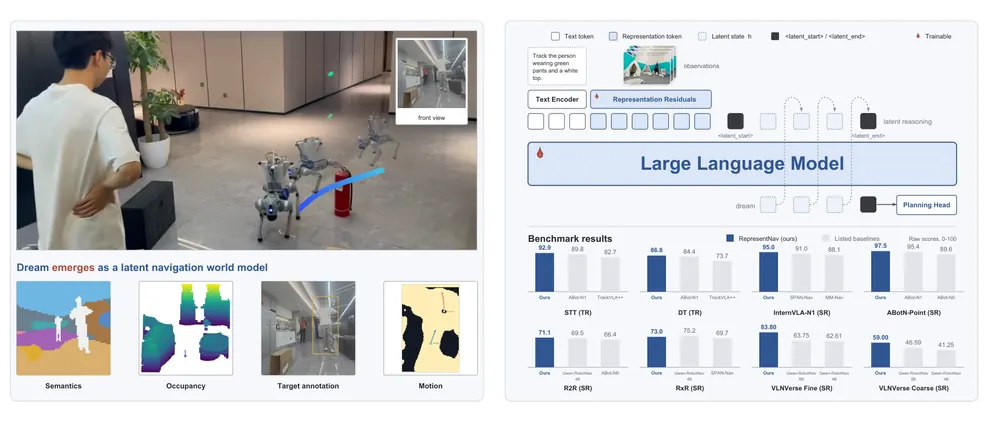
무슨 문제인가
VLM 기반 navigation policy는 대개 frozen vision encoder의 마지막 층 출력을 미리 정한 방식으로 받아 씀. 그래서 policy가 무엇을 볼지는 encoder의 사전학습 목표가 정하고, encoder가 중간 층에서 만든 공간 구조의 상당 부분은 마지막 층에서 빠짐. 저자들은 이 때문에 policy가 물체를 말로 설명하면서도 빈 공간을 잘못 판단해 부딪치거나, 모퉁이를 돈 사람을 놓친다고 봄. 미래를 예측하는 기존 navigation world model도 pixel, text, occupancy처럼 사람이 미리 정한 공간에서 예측함.
어떻게 푸나
RepresentNav는 Qwen3-VL-4B 위에 만든 navigation model로, 한 대 이상의 카메라 RGB 이력과 지시문을 받아 현재 로봇 좌표계의 waypoint 8개(위치와 yaw)를 출력함. DINOv3(semantic), Depth Anything 3(geometry), OpenD4RT(video 기반 dynamic) 세 encoder는 고정하고, 각 encoder의 깊이 전체에 고르게 놓인 층들의 feature를 adapter로 같은 크기에 맞춤. Representation Residuals라는 학습 가능한 3층 transformer가 위치마다 이 층들을 다른 attention 가중치로 합치고, 학습 가능한 [CLS] token이 view 하나를 vector 하나로 모아 policy 자신의 표현 공간을 만듦. 행동 전에 언어 모델은 연속 latent 4개(latent chain-of-thought, 저자 표현으로 dream)를 차례로 생성하고, 각 latent는 0.4~1.6초 뒤 관측의 [CLS] 표현을 MSE로 맞히며, 미래 관측은 policy 입력에 넣지 않음. target을 만드는 모듈도 함께 학습되므로, target이 한 점으로 모이는 collapse를 막으려고 target 분포를 평균 0, 분산 1, Gaussian 모양으로 당기는 regularizer VISReg를 붙임. 학습은 두 단계로, Stage I은 행동 출력이 지시문과 latent만 보게 하고 Stage II는 full causal attention으로 관측까지 보게 함.
결과
- 같은 encoder 세 개를 쓰고 dream 없이 연결 방식만 바꾼 point-goal ablation임(InternVLA-N1 논문의 point-goal 평가 방식, InternScenes 실내 장면 4,000 trajectory). 출력을 단순히 이어 붙이면 성공률 87.30%, 충돌률 28.70%이고, Representation Residuals로 합치면 93.45%, 18.05%임. 추가 encoder 없이 backbone ViT만 쓰면 79.65%, 40.80%임.
- 같은 ablation에서 dream target만 바꿈. 충돌률은 dream 없이 18.05%, backbone ViT pooled feature를 target으로 하면 22.00%, 자기 표현 공간의 [CLS]를 target으로 하면 13.45%임. 다만 감독 없이 latent만 생성해도 15.90%로 내려가고, VISReg를 빼면 16.40%임.
- VLNVerse(실내 장면에서 언어 지시를 따라 이동하는 benchmark, 목표 3m 이내 도착이 성공) Full Test 성공률은 fine-grained 83.80%, coarse-grained 59.00%임. 표의 최고 baseline Qwen-RobotNav-8B는 63.75%, 46.59%임. VLN-CE RxR(VLN-CE의 RxR 지시 navigation, Val-Unseen)에서는 Qwen-RobotNav-4B가 성공률 75.2%로 이 방법의 73.0%보다 높음.
- 실로봇은 Go2 사족보행 로봇과 Bumi 휴머노이드에서 평가함. VLN 20건 중 14건, 사람 추적 20건 중 18건을 성공했고, 시뮬레이션 표에도 나오는 기존 navigation model Uni-NaVid는 각각 7건, 8건임. 모델은 외부 RTX 4090 서버에서 돌고, 추론 지연은 209.76ms로 원래 Qwen의 144.15ms보다 김.
한계
dream이 compact world model이라는 주장은 사후에 학습한 decoder로 읽어 낸 결과에 기대고, 예시 그림은 저자가 골랐음. 0.4초 뒤를 예측한 latent의 occupancy IoU는 34.81%로, 사전학습 encoder를 실제 미래 프레임에 적용한 최고치 29.79%보다 높지만 실제 미래 프레임을 자기 표현 공간 [CLS]로 표현한 35.95%보다는 낮음. ablation은 point-goal protocol 하나뿐이고 seed 간 분산은 본문에서 확인 불가이며, 실로봇 정량 비교는 40건에 baseline 하나이고 navigation에 한정됨(GitHub 공개 범위는 확인 불가).
누리랩 연구와의 연결
- 행동 전에 미래 표현을 예측하는 JEPA형 latent world model을 policy와 end-to-end로 학습한 사례임. VLA의 test-time planning이나 world model 기반 failure 예측에서 예측 target을 policy 자신의 표현 공간에 둘지 정할 때 비교 대상이 됨.
- 여러 frozen foundation model의 중간 층을 위치별로 골라 합치는 Representation Residuals는 manipulation VLA의 vision 입력부에 그대로 옮겨 시험할 수 있음.
2
76점
$Ψ$-0.6: Adaptive Streams of Thought in a Unified Vision-Language World Model
World Model
relevance 8/10
Artificial Intelligence (cs.AI)
한 transformer가 이미지·텍스트·camera pose·depth·optical flow를 모두 생성하고 읽게 해서, 중간 표현을 스스로 만들어 이어 붙이는 추론(stream of thought)을 가능하게 함. 물체를 가상으로 옮겼을 때의 움직임 예측(FlowBench-Sim)에서 정확도 56.4%로, 이미지 편집 baseline 최고치 16.4%와 모듈형 expert pipeline 50.8%보다 높음.
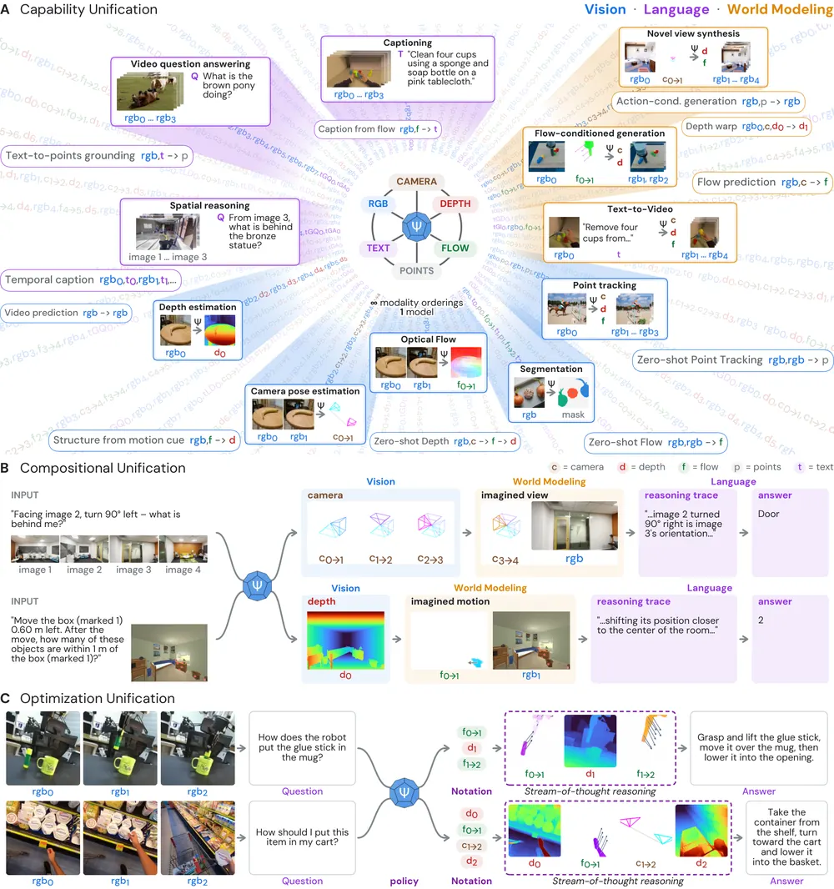
무슨 문제인가
지금의 물리 세계 AI는 기능이 모델별로 나뉘어 있음. vision encoder는 depth나 pose를 추정하고, VLM은 텍스트로 답하고, world model은 미래 장면을 생성함. VLM이 외부 world model이나 도구를 호출하는 방식도 있지만, 호출되는 모델은 고정된 black box라 추론 과제의 feedback으로 함께 학습되지 않음. 그래서 어떤 중간 표현을 언제 만들어 쓸지를 과제 결과로 학습시키기 어려움.
어떻게 푸나
Ψ-0.6은 8B 파라미터 autoregressive transformer 하나로 RGB, 텍스트, camera pose, depth, optical flow, point track을 같은 token 형식으로 다룸. 이 모델은 저자들의 이전 visual world model PSI(Probabilistic Structure Integration)에서 출발해, 텍스트 데이터와 캡션 정렬, instruction tuning을 차례로 더해 학습함. prompt에서 입력과 예측할 token을 정하면 같은 모델이 pose 추정, novel view synthesis, 질의응답 등을 하고, 생성한 depth·flow·상상 장면을 다음 단계 context로 쓰는 연쇄(stream of thought)도 가능함. 마지막 학습 단계에서는 모델이 답하기 전에 어떤 중간 표현(depth, camera 움직임, flow)을 만들지 적은 짧은 지정 문자열(notation)을 먼저 출력하고, 그 표현을 생성해 context에 넣은 뒤 답하게 함. notation 선택은 RGB만 쓸 때보다 정답 답변의 loss를 얼마나 줄였는지를 reward로 삼아 GRPO 변형(Dr. GRPO, 입력당 notation 16개 비교)으로 학습함.
결과
- MindCube(여러 시점 사진을 보고 회전·이동 후 무엇이 보이는지 묻는 공간 추론 benchmark) zero-shot 정확도는 RGB+camera 입력에서 51.3%임. 가장 높은 open-weight baseline DeepSeek-VL2-Small은 47.6%임. 모델이 상대 camera pose를 추정해 질문이 가리키는 입력 시점을 고른 뒤 답하면 57.7%로 오름.
- FlowBench-Sim(시뮬레이션 실내 장면에서 물체를 지정한 만큼 옮겼을 때의 optical flow 예측, 622개) 정확도는 56.4%임. 이미지 편집 baseline 최고치는 16.4%, camera intrinsics를 추가로 받는 모듈형 expert pipeline은 50.8%임. 움직일 확률이 높은 patch부터 생성하는 순서와 classifier-free guidance를 빼면 31.8%임.
- 시뮬레이션 질문만으로 fine-tuning한 뒤 실제 로봇 데이터 5종으로 만든 FlowBench-Real에서 평균 정확도가 37.5%에서 51.4%로 오름. 같은 데이터로 fine-tuning한 Qwen 8B 모델은 59.6%로 더 높음.
- RL로 학습한 notation 선택은 학습에 쓰지 않은 video QA benchmark 4개 모두에서 RGB만 쓸 때보다 1.2~3.4퍼센트포인트 높음. 무작위 notation과의 차이는 0.7~2.3퍼센트포인트로 작고, 학습 데이터 OpenVid(영상 질의응답 데이터)의 held-out 분할에서는 무작위 notation(94.7%)이 학습된 policy(94.0%)보다 높음.
한계
실험은 모두 질의응답과 flow 예측이며, 로봇 행동 생성이나 실로봇 제어는 다루지 않음. 학습된 표현 선택의 이득이 무작위 선택 대비 작아 RL의 기여가 아직 제한적으로 보이고, 통합 자체가 성능을 올렸는지 따로 분리한 실험은 본문에서 확인 불가임. 코드와 가중치 공개 여부도 본문에서 확인 불가임.
누리랩 연구와의 연결
- world model이 생성한 depth·flow·상상 장면을 추론 중간 단계로 쓰고, 어떤 표현을 생성할지를 RL로 고르는 구조는 test-time reasoning과 counterfactual reasoning 연구의 직접 비교 대상임.
- 물체 이동을 flow로 상상해 결과 장면에서 답하는 절차는 VLA가 행동 전에 결과를 예측해 실패를 미리 판단하는 failure detection 모듈로 옮겨 볼 수 있음.
3
74점
Retiming Robot Demonstrations with a Learned Speed Prior
Imitation Learning
relevance 9/10
ICLR 양식 (추정)
Artificial Intelligence (cs.AI)
teleoperation demonstration의 경로는 그대로 두고, handheld gripper 시연자가 같은 경로를 움직였을 속도를 학습한 speed prior로 시간축만 바꿔 VLA를 fine-tuning함. 실로봇 컵 쌓기에서 성공 횟수는 30회 중 29회로 같게 유지하면서 완료 시간을 6.02초에서 3.50초로 줄임.
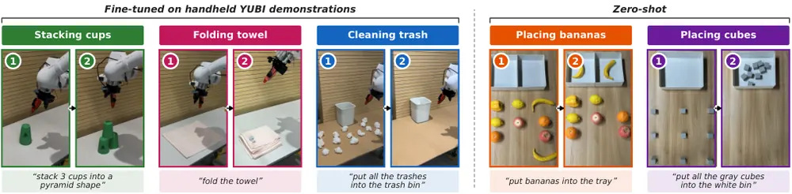
무슨 문제인가
robot demonstration의 속도는 과제가 아니라 시연자가 정함. teleoperation은 손으로 gripper를 직접 움직이는 것보다 느리고, 미숙한 시연자는 머뭇거리거나 멈춤. imitation learning policy는 이 머뭇거림까지 따라 배우므로 필요 이상으로 느리게 움직임. 기존 가속 방법은 과제마다 속도 판단용 보조 policy(proxy policy) 학습, 구간 라벨링, 미리 정한 배속을 새로 요구하고, 더 빠른 다른 시연자에게서 속도를 배우는 방법은 드묾.
어떻게 푸나
speed prior는 경로 구간별 시연 속도 분포를 예측하는 transformer로, end-effector 경로를 2cm 간격 node로 다시 뽑은 17개 node 창마다 node 자세, wrist-camera 이미지, 과제 instruction을 받음. 출력은 16개 구간 각각의 log speed에 대한 256-bin categorical 분포이고, 시연 종류 라벨(source: 시간축을 바꿀 시연, target: 따라 할 빠른 시연)을 조건으로 받음. 이미지가 시연 종류를 드러내므로 학습 때 이미지를 확률 0.5로 지우고, retiming 때는 이미지 없는 두 라벨 출력의 차이를 이미지 있는 source 라벨 출력에 더해 target 속도를 읽음(classifier-free guidance 방식). 이 분포의 quantile 속도를 경로를 따라 적분하면 새 시간축(clock)이 되고, 경로가 진행하지 않는 정지 구간은 시간이 0이 됨. π0.5 policy는 median clock으로 바꾼 demonstration으로 fine-tuning하고, 더 높은 quantile의 속도를 tempo channel이라는 추가 action 차원으로 함께 예측함. 실로봇에서는 이 속도를 상한으로 두고 속도·가속도·torque 한계 안에서 action chunk를 이어 붙이는 최적제어 controller로 실행함.
결과
- RoboLab(조립·pick-and-place·도구 사용 등 언어 조건 시뮬레이션 과제 120개)에서 속도를 맞춰 비교함. q99 clock은 end-effector 평균 속도 2.38배에서 성공률 60.8%이고, 기존 policy를 2.5배로 균일 가속하면 2.48배에서 53.0%임. 동작의 거칠기를 재는 적분 제곱 jerk는 q99 clock 1.16, 균일 가속 2.41로 52% 낮음.
- 학습한 clock 4개 모두 균일 가속 곡선보다 성공률이 평균 4.9퍼센트포인트 높음(95% 신뢰구간 2.8~7.1). 빠른 시연 16,609개(전체 74,546개 중)만으로 학습한 Filtered BC는 기본 policy보다 1.07배만 빠르고 성공률도 높지 않음.
- 실제 Franka Research 3에서, 로봇에 다는 것과 같은 YUBI gripper를 손에 들고 모은 시연으로 과제 3개를 학습함. 컵 쌓기에서 q95 tempo channel은 30회 중 29회 성공하며 성공 시 평균 3.50초가 걸리고, 기본 policy는 같은 controller로 29회, 6.02초임. 가장 빠른 4분의 1 시연만 쓴 Filtered BC는 9회 성공함.
- controller 효과를 따로 보면, 기본 policy의 수건 접기 성공은 joint PD control에서 30회 중 4회, 제안 controller에서 29회임. 다만 gain, 기준 궤적, step cap이 함께 바뀐 비교임.
한계
speed prior는 어떤 시연자가 이미 보인 속도만 옮길 수 있고, 관측된 것보다 빠른 동작은 만들지 못한다고 저자가 밝힘. 시뮬레이션 결과는 제안 controller 없이 얻은 것이고, 실로봇 이득은 제안 controller에 기댐. 실로봇 과제는 fine-tuning 3개와 zero-shot 2개이며, 프로젝트 페이지는 있으나 코드 공개는 본문에서 확인 불가임.
누리랩 연구와의 연결
- VLA를 imitation learning으로 fine-tuning할 때 demonstration 시간축 자체를 데이터 전처리 변수로 다루는 사례임. 누리랩 manipulation 데이터 수집에서 teleoperation 속도 편향을 줄이는 방법으로 바로 비교해 볼 수 있음.
- policy가 action과 함께 속도를 출력하고 controller가 로봇 한계 안에서 실행하는 구조는, test-time에 실행 속도를 조절하거나 failure 위험 구간에서 감속하는 연구의 기반으로 쓸 수 있음.
4
74점
EgoForesight: Effectively Scaling Policy Learning with Noisy Egocentric Actions
VLA
relevance 9/10
ByteDance 자체 양식
Robotics (cs.RO)
사람 1인칭 영상에서 복원한 부정확한 action label을 출처별 신뢰도에 따라 덜 믿고, 실제로 일어난 다음 장면에서 action feature를 따로 배우게 한 VLA 학습법임. 사전학습 데이터 30,000시간 규모에서 같은 데이터·학습량의 baseline보다 실로봇 open-loop action MSE가 20.5% 낮음.
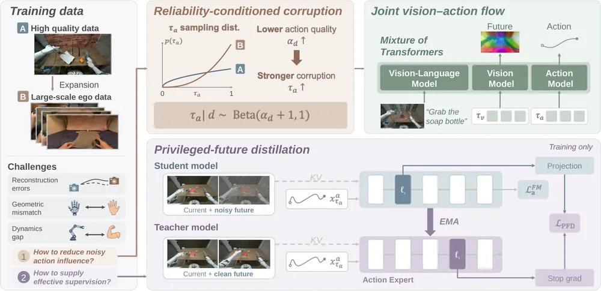
무슨 문제인가
로봇 demonstration은 action이 정확하지만 모으기 비싸고, 사람 1인칭(egocentric) 영상은 과제와 환경이 넓지만 action label이 부정확함. 손 자세 복원은 가림과 빠른 움직임에서 틀리고, 사람 손을 로봇 손으로 옮기는 retargeting은 손 크기와 관절 구조 차이 때문에 기하 오차를 더함. 이런 label을 로봇 데이터와 똑같이 믿고 학습하면 사람 데이터를 늘려도 policy가 얻는 이득이 작아짐. 그래서 부정확한 label의 영향을 줄이면서 label 밖의 다른 감독 신호도 쓰는 방법이 필요함.
어떻게 푸나
EgoForesight는 Qwen3.5 4B VLM에 미래 시각 feature를 만드는 vision expert와 30-step action chunk를 만드는 action expert를 붙인 Mixture-of-Transformers 구조임. 입력은 현재 관측, 언어 지시, 로봇 상태이고, 출력은 미래 DINOv3 feature와 action chunk이며 둘을 flow matching으로 함께 생성함. 첫째 장치인 reliability-conditioned corruption은 데이터 출처마다 신뢰도 q_d를 정하고, q_d가 낮은 출처일수록 action에 더 센 noise를 자주 섞고 action loss에도 q_d를 곱해 영향을 줄임. 둘째 장치인 privileged-future distillation은 EMA teacher가 현재 장면과 깨끗한 미래 장면을 함께 보며 inverse dynamics model처럼 action feature를 만듦. 미래가 noise로 가려진 student의 앞쪽 layer가 teacher의 깊은 layer feature를 cosine loss로 따라가게 하며, 배포 때는 미래 장면 없이 현재 맥락만 씀. 학습은 로봇 데이터와 선별된 사람 데이터로 먼저 대응 관계를 잡고, 이어서 내부 egocentric 데이터 20,000시간을 더하는 2단계로 진행함.
결과
- 사전학습 데이터를 3,000·10,000·30,000시간으로 늘리는 통제 실험에서 baseline은 두 장치를 끈 같은 모델임. 30,000시간에서 실로봇 open-loop action MSE(보류한 원격조종 action chunk와의 오차)는 0.031로 baseline 최저값 0.039보다 20.5% 낮음. 데이터가 10배 늘 때의 개선 폭도 더 큼: log10(MSE) 기울기는 -0.452 대 -0.363이고, RoboCasa 성공률 증가는 7.4 대 5.9퍼센트포인트임.
- RoboCasa GR1 Tabletop(시뮬레이션 휴머노이드 손 조작 과제 24개)의 few-shot 설정(과제당 demonstration 100개)에서 30,000시간 성공률이 baseline보다 8.1퍼센트포인트 높음. 1/10 규모 ablation에서는 baseline 52.0%가 신뢰도만 켜면 54.3%, teacher만 켜면 56.3%, 둘 다 켜면 58.6%가 됨.
- 같은 RoboCasa에서 공개된 수치와 비교하면 기존 VLA DIAL을 사람 1인칭 손 조작 영상 dataset EgoDex와 함께 학습한 61.1%보다 높음. 과제당 1,000개 설정에서는 73.9%로 로봇 데이터만 쓴 DIAL의 70.2%보다 높음. 다만 baseline들은 사전학습 데이터와 학습량이 달라 통제된 비교가 아님.
- 실로봇 Galaxea R1 Pro와 Sharpa Wave 양손(58 DoF)에서 과제 4개를 과제당 demonstration 100개로 학습하고 20회씩 평가함. 평균 성공률이 63.8%로 GR00T N1.7의 51.3%, π0.5의 32.5%보다 높음. 주사기 옮기기 과제는 30% 대 5%, 0%임.
한계
넓은 egocentric 데이터 20,000시간은 내부 데이터라 공개되지 않아 사전학습 재현이 어렵고, 코드와 checkpoint 공개는 약속 단계임. 실로봇 비교에는 두 장치를 끈 같은 모델이 없어서, 실로봇 성공률 향상이 두 장치 덕분인지는 open-loop MSE로만 간접 확인됨. 신뢰도는 출처 단위로 손으로 정하므로 출처 안의 편차와 retargeting의 체계적 편향은 보정하지 못한다고 저자가 밝힘.
누리랩 연구와의 연결
- 사람 영상과 로봇 데이터를 섞어 VLA를 사전학습할 때, label 품질별로 flow matching의 noise 구간을 나눠 쓰는 방법은 dexterous manipulation용 데이터 혼합 실험에 바로 적용해 볼 수 있음.
- 미래 장면을 본 teacher가 action feature를 가르치는 구조는 미래 장면과 action을 함께 예측하는 world model 계열 VLA와 맞닿아 있음. failure detection에서 예측한 미래와 실제 결과의 차이를 쓰는 연구에 참고가 됨.
5
74점
DexPort: A Hand-Held Skill Interface for Dexterous Hand Data Collection
Manipulation
relevance 9/10
ICRA·IROS·RA-L 계열 양식 (추정)
Robotics (cs.RO)
배포할 20-DoF 로봇 손을 그대로 손에 들고 몇 가지 skill로 손가락을 조작해 dexterous demonstration을 모으는 장치를 만듦. 손에 보낸 명령값으로 학습한 policy의 과제 3개 평균 최종 성공률은 64%로, 측정 관절값으로 학습한 policy의 11%보다 높음.
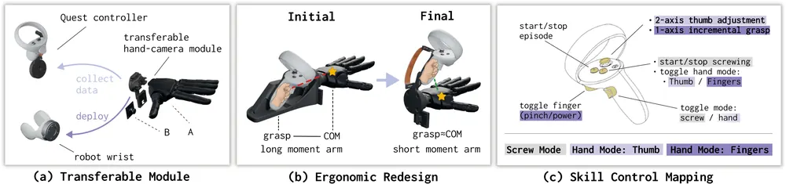
무슨 문제인가
다섯 손가락 로봇 손의 demonstration을 모으는 기존 방법은 각각 막히는 곳이 있음. teleoperation은 실행 가능한 로봇 action을 남기지만 로봇 전체가 있어야 하고, 작업자가 많은 손가락 관절을 한꺼번에 맞춰야 함. 사람 손 영상이나 exoskeleton은 들고 다니기 쉽지만 손 동작을 추정해 retargeting해야 하고, 배포할 로봇 손에 보낸 명령값은 남지 않음. 같은 로봇 손으로 명령값까지 기록한 기존 장치(RealDexUMI)는 능동 관절이 6개인 손에서만 보였음.
어떻게 푸나
DexPort는 Wuji 로봇 손(손가락 5개, 20-DoF)과 fisheye 카메라를 하나로 묶은 모듈을 쓰고, 수집 때는 Meta Quest 2 컨트롤러 손잡이에, 배포 때는 로봇 팔 손목에 같은 모듈을 붙임. 그래서 손 형태와 카메라-손 상대 위치가 수집과 배포에서 같고, 손 명령은 retargeting 없이 그대로 씀. 작업자는 장치를 들고 움직여 손목 6-DoF 궤적을 정하고, 컨트롤러 버튼과 조이스틱으로 skill을 고르고 세기를 조절함. skill은 엄지 위치 조절, 네 손가락을 함께 쥐는 power grasp, 검지만 쥐는 pinch, 검지와 중지를 함께 쥐는 two-finger grasp, 그리고 시뮬레이션에서 PPO로 학습한 드라이버 회전 policy임. 매 시점 skill이 손에 보낸 20차원 관절 명령과 실제 측정 관절값을 함께 기록함. policy는 diffusion policy이며 fisheye 영상, 손목 위치, 측정 관절값을 받아 손목 자세와 20차원 관절 명령을 16 step 묶음으로 예측하며, skill 이름이나 단계 label은 받지 않음.
결과
- 비교 기준은 action label만 측정 관절값으로 바꾼 state-as-action baseline임. 실제 양팔 로봇에서 과제당 15회 평가함. 성공률로 채점하는 과제 3개(채소 집어 놓기, 물건 쥔 채 서랍 열고 넣기, 양손 바코드 스캔)의 평균 최종 성공률은 64% 대 11%임.
- 양손 바코드 스캔에서 baseline은 첫 물건을 80% 에피소드에서 잡지만 양손으로 계속 쥐는 비율은 13%이고 스캔은 한 번도 끝내지 못함. 드라이버 회전에서 baseline은 더 오래 쥐지만(31.7초 대 15.6초) 회전 속도는 약 3분의 1임.
- 실험실 demonstration 700개에 실험실 밖(아파트, 사무실) demonstration 1,000개를 섞어 학습하면 채소 2개를 모두 놓은 비율(완전 성공률)이 오름. 방해물이 있는 장면에서 40%에서 87%로, 처음 보는 물체에서 20%에서 73%로 오름.
- 30분 동안 모은 궤적 수는 DexPort 122개, glove teleoperation 86개, 같은 skill을 쓰는 teleoperation 68개임. 사람 맨손 시연은 275개지만 로봇 명령값이 없음.
한계
실로봇 과제는 4개, 조건당 15회 평가라 불확실성이 크고, 과제별 성공률은 그림으로만 나오며 본문 수치는 평균과 일부 단계 값뿐임. 실험실 데이터가 500개일 때는 실험실 밖 데이터를 1,000개 더해도 처음 보는 물체 성공률이 20%에서 7%로 내림. 장치 무게가 0.955kg이라 오래 쓰거나 손목을 많이 돌리는 동작에 제약이 있고, skill이 다루는 동작 범위도 제한되며, 코드 공개 여부는 본문에서 확인 불가임.
누리랩 연구와의 연결
- dexterous manipulation 데이터 수집에서 측정 상태 대신 명령값을 action label로 써야 접촉 중 쥐는 힘이 재현된다는 통제 비교임. 우리 imitation learning 파이프라인의 action 정의를 정할 때 근거로 쓸 수 있음.
- 사람이 skill만 고르고 손가락 협응은 skill이 맡는 구조는, skill chaining이나 language feedback으로 손 skill을 고르는 연구의 데이터 수집 도구로 이어질 수 있음.
6
74점
DiscoDemo: Discovering Efficient and Diverse Robot Demonstrations for Imitation Learning
Manipulation
relevance 8/10
ICLR 양식 (추정)
Robotics (cs.RO)
시뮬레이션 RL을 제어기가 아니라 demonstration 생성기로 쓰고, 성공한 궤적에만 다양성 보상을 줘서 같은 과제를 여러 방식으로 푸는 데이터를 만듦. 이 데이터로 학습한 π0.5의 4개 과제 평균 성공률이 실로봇에서 가장 강한 baseline의 39%에서 78%로 오름.
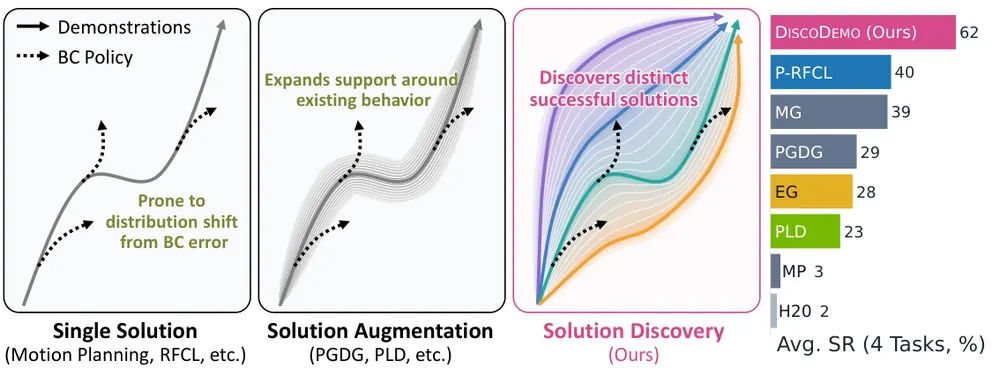
무슨 문제인가
시뮬레이션에서 RL로 성공 궤적을 대량으로 만들 수 있지만, sparse reward만 주면 RL 정책은 한 가지 풀이 방식에 몰림. 같은 풀이를 반복 수집한 데이터로 behavior cloning(BC)을 하면, 학습된 policy가 조금만 궤적에서 벗어나도 학습 데이터에 없는 상태에 놓임. MimicGen 같은 변환 방식이나 perturbation 방식은 범위를 넓히지만 원래 사람 시연이나 기존 policy 주변에 머묾. 그래서 생성기 자체가 서로 다른 성공 풀이를 여러 개 찾게 할 수 있는지가 이 논문의 질문임.
어떻게 푸나
DiscoDemo는 시뮬레이터의 privileged state를 입력으로 받아 행동을 내는 RL 생성기를 학습하고, 그 rollout을 시각 policy의 imitation learning 데이터로 내보냄. 먼저 사람 시연 20개의 끝부분 상태에서 episode를 시작하고, 성공률이 기준을 넘으면 시작점을 앞으로 옮기는 parallel reverse curriculum으로 sparse reward 문제를 풂. 시연은 reset 상태와 offline 경험으로만 쓰고 행동을 따라 하지는 않음. 생성기는 episode마다 latent skill z를 뽑아 고정하고, METRA(skill마다 다른 상태 변화를 유도하는 skill discovery 방법) 방식의 보상으로 skill마다 다른 궤적을 내게 함. 이 다양성 보상은 궤적 전체가 성공했을 때만 더하는 success gate를 둠. 접촉·힘에 대한 safety penalty를 학습에 넣고, 생성 후에는 실패와 안전 기준 위반 궤적을 버린 뒤 카메라 영상과 joint-position 행동 쌍으로 π0.5를 fine-tuning함.
결과
- 4개 과제(바나나를 그릇에 넣기, 큐브 쌓기, FMB(Functional Manipulation Benchmark) 페그 삽입 2종)에서 같은 DROID 사전학습 π0.5를 데이터 3,000개씩으로 학습함. 시뮬레이션 평균 성공률은 다양성 항을 뺀 같은 생성기(P-RFCL)의 40%에서 62%로 오름(seed 3개, seed당 50회).
- 실로봇(Franka Research 3) 4개 과제를 시뮬레이션 데이터만으로 zero-shot 평가함. 평균 성공률이 P-RFCL의 39%에서 78%로 오르고, PnP-Banana에서는 45%에서 90%로 오름(과제당 20회, 미리 정한 seed 1개).
- 다양성 가중치 α를 키우면 측정된 다양성은 계속 오르지만 평균 성공률은 중간 값에서 가장 높음. 과제별 최적 α는 0.1에서 1까지 다름.
- 성공률과의 과제 평균 Spearman 상관은 3,000개 데이터 전체의 coverage가 0.50, 고정 장면 하나에서 잰 다양성이 0.39임. 생성기 7개로 계산한 값이라 잡음이 큼.
한계
정확한 시뮬레이터, privileged state와 임의 상태 reset, 명확한 성공 판정이 있어야 쓸 수 있음. 평가는 단순한 tabletop 과제 4개뿐이고 sim-to-real 차이가 작은 환경임. 다양성 보상은 downstream 성능을 직접 최적화하지 않아 α를 과제마다 골라야 함.
누리랩 연구와의 연결
- VLA fine-tuning 데이터를 시뮬레이션 RL로 만들 때, 성공 궤적의 양보다 풀이 방식의 폭이 중요하다는 근거임. manipulation 데이터 생성 파이프라인의 비교 대상으로 쓸 수 있음.
- DAgger(학습 policy가 방문한 상태에서 교사 행동을 받음)·DART(교사 행동에 perturbation을 줘 회복 행동을 모음)의 교정 데이터를 더해도 이득이 남는다고 보고함. policy가 궤적에서 벗어난 뒤 회복하는 failure recovery 연구에서 데이터 쪽 대안으로 볼 수 있음.
7
72점
LogLook: Execution-Grounded Memory for Frontier-Model Robot Planners
Embodied AI
relevance 8/10
CoRL 양식 (추정)
Robotics (cs.RO)
학습 없이 쓰는 frontier VLM planner의 memory를, 시스템이 쓰는 실행 기록과 모델이 고르는 이미지로 나눈 LogLook을 제안함. memory만 바꾼 비교에서 note-only memory와 비슷한 성공률(92.6% 대 91.4%)을 내면서 episode당 token을 43% 줄임.
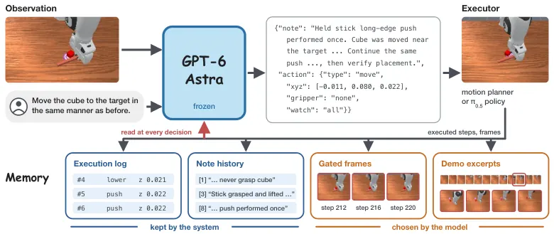
무슨 문제인가
RoboMME(시뮬레이션 Franka 탁자 조작 과제 16개로 memory를 재는 benchmark)의 과제는 현재 이미지만으로 풀리지 않음. 몇 번 놓았는지 세거나, 덮이기 전 cube 색을 기억하거나, 시연이 밀기였는지 들어 옮기기였는지 알아야 함. GPT-6 Astra 같은 frontier VLM을 학습 없이 planner로 쓸 때 흔한 memory는 모델이 매 step 다시 쓰는 note임. 이 note는 싸지만 한 번의 rewrite로 횟수나 예전 관측을 잃을 수 있고, 반대로 모든 frame을 보여 주면 decision마다 token 비용이 커짐.
어떻게 푸나
LogLook의 execution-grounded memory는 기록은 시스템이 맡고, 무엇을 볼지는 모델이 고르게 역할을 나눔. 매 decision에서 고정된 GPT-6 Astra는 front·wrist 이미지, end-effector pose, 지시문, task note, memory를 받아 free-text note와 action 하나를 JSON으로 냄. 시스템은 실행된 action마다 명령과 직후 측정한 gripper 열림·end-effector 높이를 log에 한 줄씩 붙이고, 모델이 쓴 예전 note도 원문 그대로 모두 보여 줌. 모델이 action에 지켜볼 이미지 점(watch)을 붙이면, 시스템은 그 점 주변 반경 28 px 안에서 픽셀이 바뀐 frame과 그 직전 frame만 돌려줌. 시연 영상은 먼저 8 frame 간격으로 훑으며 요약을 쓰게 하고, 모델이 고른 구간만 2 frame 간격으로 다시 보여 줌. action은 benchmark의 motion planner(waypoint 실행) 또는 RoboMME로 학습된 π0.5가 실행하며, 추가 학습은 없음.
결과
- memory만 바꾼 비교(motion planner, 256 episode)에서 성공률은 92.6%로 note-only memory의 91.4%와 비슷함. episode당 token은 40.5k 대 71.3k, 이미지는 46장 대 114장임.
- 같은 비교에서 motion planning 외 원인의 실패는 4개 대 12개임. 저자가 episode를 직접 읽어 분류한 결과, note-only의 12개 중 최소 11개가 횟수 누락, 기록한 사실 소실, 시연 오독에서 나옴. motion planning 실패(15개 대 10개)가 양쪽에 섞여 성공률 차이를 가림.
- 학습된 π0.5 executor로 800 episode 전체를 돌리면 성공률이 81.9%임. 매 16-step chunk마다 다시 계획하는 per-chunk planner의 75.1%보다 높고 token은 51k 대 203k임. 다만 호출 빈도와 action 종류도 달라 memory만의 효과는 아님.
- 같은 executor에서 시뮬레이터 정답 subgoal을 준 경우(82.2%)와 유의한 차이가 없고, 학습된 memory policy MemER는 42.4%임. 첫 비교와 같은 직접 제어 설정(planner의 waypoint를 benchmark motion planner가 실행)으로 800 episode 전체를 돌리면 93.5%를 성공함.
한계
모든 결과가 시뮬레이션 benchmark 하나와 API로만 쓰는 독점 모델 하나에서 나왔고, 실로봇 실험은 없으며 코드 공개 여부는 본문에서 확인 불가임. π0.5 executor의 128 episode에서 memory만 바꾸면 두 memory 모두 성공률 81.2%로 같고, component별 ablation 차이도 episode 2~4개에 기대므로 memory 효과의 주된 근거는 실패 원인 분석임. 직접 제어 설정은 depth·카메라 calibration과 benchmark 성공 판정 코드의 기준값을 담은 task note를 씀.
누리랩 연구와의 연결
- robot memory 연구에서 학습 없이 frontier VLM planner에 memory를 붙일 때의 baseline으로 쓸 수 있음. 실행 기록을 모델이 아닌 시스템이 쓰게 하는 설계와 episode별 실패 원인 분류 방식을 그대로 가져올 수 있음.
- 모델이 변화가 예상되는 지점을 지정해 frame을 걸러 받는 방식은 active perception과 이어짐. 모델이 고른 시연 frame이 실제 사건 근처에 있는 비율은 79%로, 균등 추출의 41%보다 높음.
8
70점
When to Stop Penalizing Actions? Martingale GRPO for VLA Reinforcement Learning
RL
relevance 9/10
ICLR 양식 (추정)
Artificial Intelligence (cs.AI)
VLA를 GRPO로 학습할 때 실패 rollout 전체를 벌하지 않고, VLM이 찾은 마지막 회복 불가 오류 지점까지만 벌하도록 바꿈. RoboTwin 2.0 과제 7개의 평균 성공률이 실패 rollout 전체를 벌하는 기존 방식(Full GRPO)의 65.01%에서 68.64%로 오름.
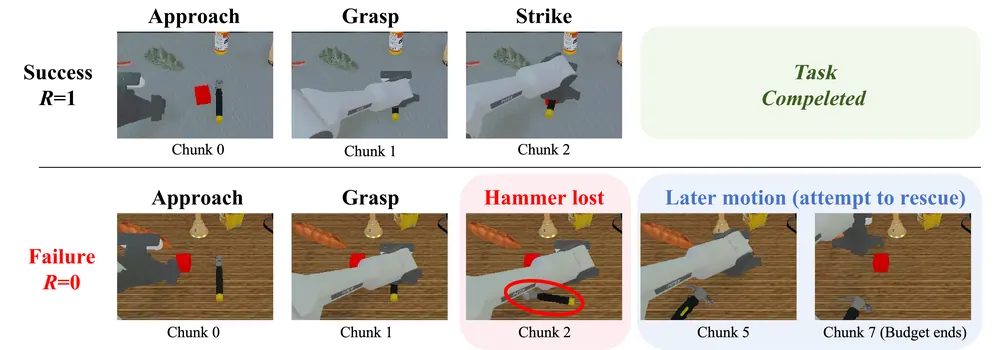
무슨 문제인가
GRPO(group-relative policy optimization)는 같은 과제의 rollout 묶음에서 최종 성공 여부를 비교해 trajectory 단위 advantage 하나를 만들고, 이를 rollout 안의 모든 action chunk에 똑같이 줌. 그래서 실패한 rollout에서는 물체를 놓친 실수뿐 아니라 그 뒤에 다시 잡으려던 회복 시도까지 같은 음의 advantage로 벌을 받음. 실패 피드백을 어디서 끊어야 gradient 기댓값을 해치지 않는지에 대한 기준이 없었음. 기존 방법은 과제 단계 검출, rollout 정렬, offline 데이터 안의 알맞은 성공 궤적 같은 추가 조건에 기댐.
어떻게 푸나
이상적인 중단 시점을 이론으로 정하려고, 관측된 앞부분을 고정했을 때 남은 구간의 성공 확률이 policy parameter에 얼마나 민감한지를 remaining conditional credit으로 정의함(martingale 성질 이용). 관측된 앞부분만 보고 정한 중단 시점에서 이 값이 0이면, 뒷부분을 지운 GRPO group gradient 추정량은 기댓값이 같고 공분산은 커지지 않음을 증명함. 성공 확률이 이미 0이 된 시점(실패가 확정된 시점)이 그런 중단 시점의 특수한 경우임. 이를 근거로 MART-GRPO(Martingale GRPO)는 Qwen3.8-27B VLM에 LoRA를 붙여 실패 rollout 영상 1,024개의 오류·회복 주석으로 학습하고, RL 동안에는 고정함. VLM은 실패 rollout 전체 영상(카메라 3개 시점, proprioception 포함)을 보고 회복이 뒤따르지 않은 마지막 오류의 chunk 구간을 출력함. 그 구간의 끝 chunk까지만 음의 advantage를 남기고 이후는 mask하며, 성공 rollout 항과, loss를 원래 rollout의 전체 action token 수로 나누는 정규화는 바꾸지 않음.
결과
- RoboTwin 2.0(양팔 조작 시뮬레이션 benchmark)의 7개 과제에서 OpenVLA-OFT를 같은 SFT checkpoint로부터 40 update 학습함. 학습 seed 128개와 held-out seed 128개 episode를 합친 평균 성공률이 Full GRPO 65.01%, MART-GRPO 68.64%로 3.63퍼센트포인트 높음. held-out seed에서는 6.03퍼센트포인트, 학습 seed에서는 1.23퍼센트포인트 차이임.
- 과제별로는 6개에서 오르고 Handover(8.98퍼센트포인트), Hammer(7.03퍼센트포인트)에서 차이가 가장 큼. Container on Plate는 SFT 성공률이 이미 87.11%였고, MART-GRPO가 Full GRPO보다 1.95퍼센트포인트 낮게 끝남.
- MART-GRPO가 남긴 실패 벌점 비율(Hammer 49.2%, Handover 32.7%)로 실패 벌점을 균일하게 줄인 uniform scaling은 Hammer 77.73%, Handover 40.62%이고, MART-GRPO는 81.25%, 43.75%임. 경계를 같은 분포에서 무작위로 뽑는 random prefix는 71.88%, 41.41%로 MART-GRPO보다 낮음.
- 시험 실패 rollout 220개에서 VLM 오류 구간의 과제 평균 IoU가 학습 전 28.5%에서 72.1%로 오름. 끝 chunk가 정답과 1 chunk 이내로 맞는 비율은 91.8%임.
한계
모든 실험이 시뮬레이션이며 실로봇 실험은 없고, 방법별로 학습 run 하나의 결과라 3.63퍼센트포인트 차이의 seed 간 분산은 본문에서 확인 불가임. ablation은 과제 2개뿐이고, 27B VLM 추론에 드는 계산 비용과 코드 공개 여부도 본문에서 확인 불가임. 실제 경계는 영상 전체를 보고 정해 이론 조건을 벗어나며, 저자는 그 차이(projection residual)에 따른 기댓값·분산 변화의 상한만 유도하고 residual 크기는 측정하지 않은 열린 문제로 남김.
누리랩 연구와의 연결
- VLM이 실패 rollout에서 회복 불가 오류 시점을 찾는 부분은 failure detection·diagnosis 모델을 VLA RL의 credit assignment에 바로 쓰는 사례임. 우리 failure detector를 같은 방식으로 RL mask 생성기로 써 볼 수 있음.
- 회복 시도를 벌하지 않는 설계는 recovery 행동 학습과 연결되며, 경계를 앞부분 관측만으로 예측하는 버전은 online failure prediction 과제로 이어짐.
9
70점
RynnUnify: Towards Unified Embodied Brain
World Model
relevance 9/10
Robotics (cs.RO)
언어로 다음 subtask를 정하는 reasoner와 그 결과를 영상으로 그리는 generator를 번갈아 돌려, 긴 과제의 계획을 영상으로 이어 만드는 16B 통합 모델을 제시함. 장기 시각 계획 benchmark Rynn-VP 종합 점수를 기반 모델 Cosmos 3 Nano의 45.05에서 54.80으로 올림.
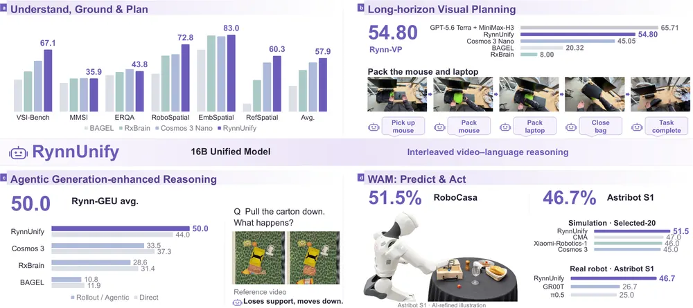
무슨 문제인가
로봇이 여러 단계로 이어진 과제를 하려면 각 동작이 장면을 어떻게 바꾸는지 예측하고, 바뀐 장면을 다음 결정에 반영해야 함. 이해와 생성을 함께 다루는 unified multimodal model이 나와 있지만, 단계가 길어지면 장면 변화와 예측 오차가 쌓임. 정지 영상 한 장으로 다음 상태를 그리는 방식은 그 사이의 동작 과정을 놓침. 또 장기 시각 계획이 과제와 앞선 동작에 맞게 이어지는지, 영상 예측이 보이지 않는 미래 상태 추론에 도움이 되는지를 재는 benchmark가 없었음.
어떻게 푸나
RynnUnify는 Cosmos 3의 Mixture-of-Transformers 구조를 그대로 쓰며, 8B autoregressive reasoner와 8B rectified-flow 영상 generator를 joint attention으로 이음. reasoner는 과제 목표, 처음과 현재 관측, 앞선 subtask 이력을 받아 다음 subtask, 예상되는 장면 변화 설명, 예상 소요 시간을 출력함. generator는 이 텍스트를 조건으로 다음 영상 clip을 만들고, clip의 마지막 frame이 다음 단계의 현재 관측이 됨. 장면 일관성을 위해 처음 관측, 이전 이력에서 고른 frame 2장, 가장 최근 끝 frame으로 된 참조 frame 4장(scene memory)과 직전 clip 끝 13 frame(prefix)을 함께 조건으로 줌. 학습은 reasoner를 먼저 fine-tuning해 고정한 뒤 generator를 학습함. generator는 시작 frame에 noise를 넣거나 이력을 미리 생성한 영상으로 바꾼 입력으로 학습해(self-forcing) 자기 예측에서 이어 그리는 상황에 대비함.
결과
- Rynn-VP(새로 만든 benchmark: 실내 장면 6종의 과제 200개에서 영상 계획을 GPT 평가기로 계획성·시각 실현·화질 기준 채점)의 종합 점수가 기반 모델 Cosmos 3 Nano의 45.05에서 54.80으로 오름. 다만 GPT-5.6 Terra로 계획하고 MiniMax-H3로 영상을 만든 조합은 65.71로 더 높음.
- 영상 생성을 쓸지 스스로 고르는 RL agent를 따로 붙여 Rynn-GEU(새로 만든 benchmark: 공간 관계, 물리 예측, affordance, 궤적 등 직접 보이지 않는 상태를 묻는 질문 모음)로 평가함. 평균이 바로 답할 때 44.0에서 agent가 영상 생성을 골라 쓸 때 50.0으로 오름. Cosmos 3(37.3에서 33.5)처럼 영상 rollout을 쓰면 오히려 점수가 내리는 다른 모델도 있음.
- 영상 feature에서 action chunk를 뽑는 World-Action Model(WAM) 확장을 따로 붙여 RoboCasa365(시뮬레이션 가정 환경 조작 benchmark)의 복합 과제 20개에서 평가함. 성공률은 51.5%이고, 비교 대상 중 가장 높은 CMA(방법 설명은 본문에서 확인 불가)는 47.0%, Cosmos 3는 45.0%임.
- 실로봇 Astribot S1의 과제 3개 평균 성공률은 46.7%로 GR00T 26.7%, π0.5 25.0%보다 높음. 과제당 시행 횟수는 본문에서 확인 불가함.
한계
확인 가능한 결과는 모두 전체 시스템 간 비교라서 scene memory, self-forcing, 소요 시간 예측 중 무엇이 성능을 올렸는지는 본문에서 확인 불가함. Rynn-VP와 Rynn-GEU는 저자가 직접 만든 benchmark이고, Rynn-VP 채점은 사람 검토로 보정한 GPT 평가기에 기댐. 실로봇 검증은 Astribot S1 과제 3개뿐이고, 계획 영상을 실제 로봇의 closed-loop 실행에 바로 쓰는 실험은 없음.
누리랩 연구와의 연결
- 언어 subtask 계획과 영상 world model rollout을 번갈아 돌리는 구조는 long-horizon planning과 test-time planning 연구에서 비교 대상으로 쓸 수 있음. 코드가 공개되어 있어 reasoner 출력이나 생성 영상을 failure detection 신호로 써 보는 실험의 출발점이 됨.
- 영상 생성을 쓸지 고르는 agent에서 일부 모델은 생성 영상 때문에 점수가 내린 결과는, world model 예측을 언제 믿을지 판단하는 문제와 바로 이어짐.
10
68점
If at First You Don't Succeed, Backtrack: Lightweight Recovery for Frozen VLAs
VLA
relevance 9/10
ICLR 양식 (추정)
Robotics (cs.RO)
고정된 VLA에 작은 실패 예측 head를 붙이고, 실패가 예측되면 팔이 지나온 경로를 거꾸로 되짚은 뒤 같은 policy에게 다시 시도시킴. LIBERO-Long에서 π0-FAST의 성공률이 85.32%에서 92.40%로 오름(실패의 48.2% 감소).
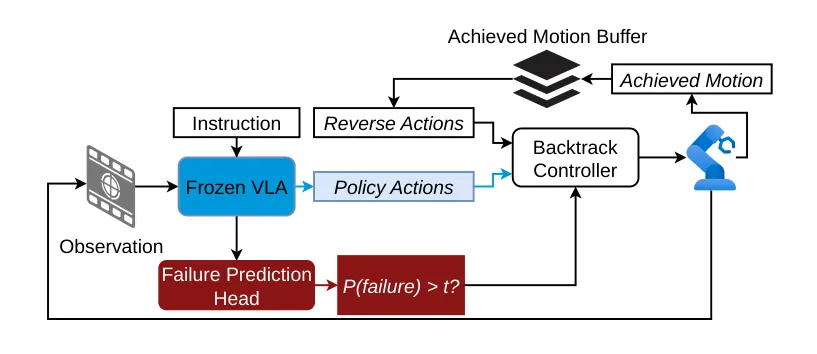
무슨 문제인가
VLA는 주로 성공한 demonstration으로 학습하므로 물체를 떨어뜨리는 등 실수한 뒤의 상태는 학습 데이터에 거의 없음. 이런 상태에 스스로 들어간 뒤에는 시간을 더 줘도 대부분 회복하지 못함. LIBERO-Long에서 step 예산을 두 배로 늘려도 세 VLA의 성공률은 2.3~3.7퍼센트포인트만 오름. 기존 회복 방법은 recovery demonstration 수집, policy 재학습, 추론 시 별도 모델 추가 중 하나가 필요해서 비용이 큼.
어떻게 푸나
Backtrack은 VLA 가중치를 고정하고 실패 예측 head(FPH)만 학습함. FPH는 VLA가 이미 계산한 VLM 출력 token feature를 attention pooling과 3층 FFN으로 읽어, 현재 episode가 실패할 확률 하나를 출력함. 학습 label은 고정 policy rollout의 최종 성공·실패이고, 각 frame이 자기 episode의 결과를 그대로 물려받음. 실행 중에는 명령한 동작이 아니라 실제로 이루어진 팔의 pose 변화(achieved motion)를 buffer에 쌓음. 실패 확률이 threshold를 넘으면 policy를 멈추고 buffer의 동작을 역순으로 실행함. 후퇴 길이는 고정 step 수(fixed)이거나 실패 확률이 낮은 threshold 아래로 떨어질 때까지(adaptive)이며, 이후 변경 없는 policy에게 제어를 돌려줌.
결과
- LIBERO-Long(시뮬레이션 장기 다단계 조작 과제 10개)에서 5 seed, 과제당 50 episode로 평가함. 성공률 상승은 SmolVLA 61.00%에서 7.40퍼센트포인트, π0.5 94.72%에서 1.60퍼센트포인트, π0-FAST 85.32%에서 7.08퍼센트포인트임. 실패 감소율은 각각 19.0%, 30.3%, 48.2%이고 95% 신뢰구간은 모두 0을 포함하지 않음.
- 후퇴 step도 같은 1,040 step 예산에서 차감함. π0-FAST에서 예산을 520에서 1,040 step으로 늘린 효과는 2.32퍼센트포인트이고, Backtrack의 7.08퍼센트포인트는 같은 1,040 step 예산으로 Backtrack 없이 돌린 policy(control)와 비교한 값임.
- LIBERO 네 suite 전체로 합치면 실패 감소율은 19.6~26.2%임. 이미 control 성공률이 85~99%인 짧은 suite에서는 효과가 작고, π0-FAST의 Spatial·Object처럼 성공률이 0.20~0.36퍼센트포인트 내린 경우도 있음.
- 후퇴 규칙에 따라 결과가 갈림. LIBERO-Long의 π0.5에서 주 설정(threshold 0.99, fixed 50 step 후퇴)은 1.60퍼센트포인트 오르지만, threshold 0.90에서는 fixed 후퇴가 0.84퍼센트포인트 오르고 adaptive 후퇴는 1.92퍼센트포인트 내림.
한계
모든 실험이 시뮬레이션이고 실로봇 검증은 없으며, 두 번째 benchmark인 MetaWorld(시뮬레이션 조작 과제 50개)도 SmolVLA로만 돌림. 장면 속 물체 위치는 되돌리지 않으므로 과제가 물리적으로 불가능해졌거나 새 전략이 필요한 실패는 회복하지 못함. 재시도 성공이 팔 자세 변화, 장면 변화, policy sampling 차이 중 무엇에서 오는지는 분리하지 않았고, 코드 공개 주소는 본문에서 확인 불가임.
누리랩 연구와의 연결
- failure detection을 실제 recovery 행동과 묶어 효과를 성공률로 잰 사례임. VLA failure detection/recovery 연구에서 "되짚고 다시 시도" 수준의 baseline으로 바로 쓸 수 있음.
- 남은 실패는 전략을 바꿔야 하는 경우라는 저자 해석은 world model이나 counterfactual reasoning으로 회복 지점과 대안 행동을 고르는 연구의 출발점이 됨.
11
68점
Predictive Long-Horizon Progress Modeling with Action-Aware Quantification
Manipulation
relevance 9/10
Robotics (cs.RO)
긴 조작 과제의 진행도를 물체 단위 subtask와 동작별 가중 점수로 정의해 annotation 기준을 통일하고, 미래 영상 예측과 함께 학습한 progress critic NimCritic을 만듦. VPB(Video Progress Benchmark)에서 과제 완료 판정 정확도(TSA)가 GPT-6-Sol 기반 GVL의 0.50에서 0.82로 오름.
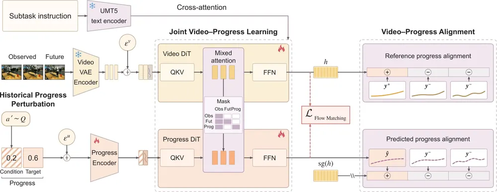
무슨 문제인가
로봇 데이터 선별, policy 평가, RL에는 실행 중간 상태가 과제를 얼마나 진척시켰는지 알려 주는 dense progress 신호가 필요함. 이 신호를 내는 process reward model(PRM)은 trajectory 간 상대 비교로 배우거나, 사람이 나눈 단계 사이를 경과 시간으로 보간하거나, VLM이 정한 subtask 몫을 씀. 상대 비교는 과제 간 진행도의 절대 크기를 정하지 못하고, 시간 보간은 같은 상태라도 실행 속도에 따라 값이 달라짐. 긴 과제에서는 실패한 시도의 몫과 나중 동작이 앞선 성과를 망쳤을 때 회수할 점수까지 정해야 하는데, 기존 annotation은 이를 일관되게 다루지 못함.
어떻게 푸나
action-aware quantification은 같은 물체에 대한 연속 동작을 subtask 하나로 묶고, 동작마다 정규화된 동작 길이로 정한 가중 점수를 매기는 annotation 규칙임. 목표를 이룬 동작은 전액, 잡기만 한 시도는 임시로 절반을 받고, 앞선 성과를 망친 동작은 그 점수를 회수하며, 미완료 subtask는 VLM이 추정한 남은 필수 동작을 분모(budget)에 넣어 진행도를 0~1 절대 척도로 만듦. VLM이 경계와 성공 여부를 달고 사람이 시점을 고쳐, 856.95시간 학습 데이터와 평가 benchmark LOOM을 만듦. NimCritic은 Wan2.2 기반 video DiT와 progress DiT를 mixed attention으로 묶은 모델로, subtask 지시문과 관측 영상을 받아 미래 영상 latent와 진행도·완료 여부 곡선을 함께 flow matching으로 예측함. 추론 때 앞 window의 진행도 예측을 다음 window의 조건으로 쓰므로, 학습 때 이 값을 무작위로 바꿔 넣음(Historical Progress Perturbation). 긴 영상은 Gemini 3.8 Flash가 subtask로 나누고, 각 subtask 채점을 길이 가중 합으로 묶어 전체 진행도를 만듦.
결과
- LOOM(저자가 만든 장기 조작 진행도 benchmark: trajectory 300개, 사람이 검수한 frame 19,618개)에서 여러 subtask로 된 multi-task trajectory 129개를 평가함. PRC-F1(정방향·시간 역방향 순위 상관의 조화평균)이 0.95임. 가장 강한 specialized reward model인 RoboDopamine-GRM-2 8B는 0.42임. GVL(VLM에 frame을 섞은 순서로 주고 frame별 진행도를 매기게 하는 기존 방법, GPT-6-Sol 사용)은 0.68임.
- 모든 방법에 같은 Gemini subtask 분할을 주면 차이가 줄어듦. 이 조건에서 multi-task PRC-F1은 NimCritic 0.95, GVL(GPT-6-Sol) 0.96, RynnValue 4B(기존 robot reward model) 0.86임. NimCritic도 분할 없이 전체 영상을 채점하면 0.55로 내려가므로, multi-task 이득의 큰 부분은 분할에서 옴. TSA는 0.93으로 GVL(GPT-6-Sol)의 0.65보다 높게 유지됨.
- VPB(본 과제·새 과제와 숙련·비숙련 실행으로 나눈 split 4개)에서 전체 TSA가 0.82로 GVL(GPT-6-Sol)의 0.50보다 높음. 전체 PRC-F1은 0.77 대 0.73이고, 비숙련 실행 split 2개에서는 0.66·0.67로 GVL(GPT-6-Sol)의 0.71·0.69보다 낮음.
- RoboArena(실세계 policy 비교 평가 세션 3,872개, rollout 10,750개)에서 사람이 고른 성공 rollout을 찾는 recall이 96.72%로 RoboDopamine-GRM-2 8B의 90.66%보다 높음.
한계
진행도 추정과 성공 rollout 검색만 평가했고, 데이터 선별이나 RL에 넣었을 때 policy가 나아지는지는 보이지 않음. LOOM은 저자의 annotation 규칙으로 만든 benchmark라 같은 규칙으로 학습한 NimCritic에 유리할 수 있음. 학습에 가속기 48개로 128,000 update가 들었고, 코드와 데이터 공개 여부는 본문에서 확인 불가임.
누리랩 연구와의 연결
- 시도에 임시 점수를 주고 망친 동작의 점수를 회수하는 진행도 정의는 failure detection·recovery 연구에서 퇴행과 회복 시점을 수치로 표시하는 annotation 규칙으로 가져다 쓸 수 있음.
- 미래 영상 예측을 보조 과제로 붙인 critic이라 world model 기반 reward와 VLA RL 연구의 비교 대상이 됨. RL reward로 쓴 결과는 없으므로 policy 학습 효과는 직접 검증해야 함.
12
68점
Regularised RL improves sim-to-real transfer
RL
relevance 8/10
ICLR 양식 (추정)
Machine Learning (cs.LG)
regularised RL의 이론적 robustness가 실제 로봇 배치에서도 나타나는지 확인하려고, soft mellowmax를 연속 제어로 옮긴 SMM-AC를 만들어 PPO·FastTD3·SAC와 실로봇에서 비교함. Franka Lift에서 관측 noise(σ=0.005)를 넣었을 때 return이 PPO 19.4, SAC(ω 설정 3개 중 최고) 68.5이고 SMM-AC는 120.9로 가장 높음.
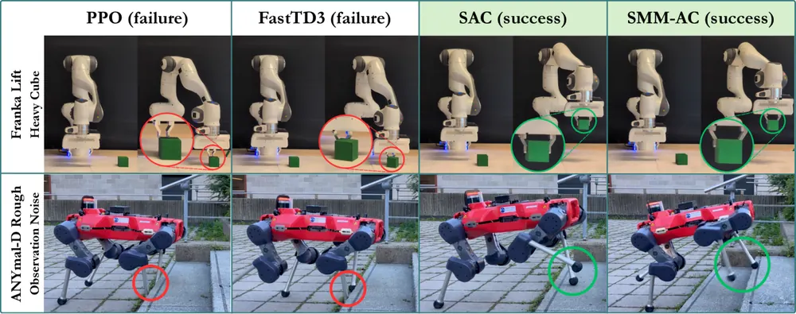
무슨 문제인가
sim-to-real pipeline에서는 regularisation이 약한 PPO가 사실상 표준으로 쓰임. 이론적으로는 entropy나 KL로 regularise한 RL이 reward·dynamics 변화에 robust하다는 결과가 있지만, 이것이 실제 로봇 배치에서 이득으로 이어지는지는 거의 측정되지 않았음. 기존 off-policy RL의 실로봇 평가도 학습 조건 그대로 과제를 해내는지만 보고, 배치 후 관측·환경·dynamics가 바뀔 때 성능이 얼마나 남는지는 따로 재지 않았음.
어떻게 푸나
SMM(soft mellowmax)은 policy를 Q값의 softmax인 reference policy에 KL로 묶는 value function이며, KL 항의 세기는 inverse temperature ω로 정함. 선행 연구는 이산 상태·행동 공간에서 SMM의 robust set(성능을 보장하는 최악 perturbation의 범위)이 entropy regularisation보다 넓다고 보였음. SMM-AC(Soft MellowMax Actor-Critic)는 연속 행동에서 구할 수 없는 reference policy를 별도 network로 근사하고, 이를 SAC actor loss와 actor보다 훨씬 작은 learning rate로 학습함. critic은 actor와 reference의 log 확률 비를 뺀 TD target으로 학습하고, actor는 reference에 가까우면서 Q값이 높은 행동을 내도록 학습함. replay buffer·target network·critic 구조는 SAC와 같게 두어 regulariser의 효과만 따로 비교하게 함. 입력은 각 과제의 로봇 관측이고 출력은 Gaussian policy의 연속 행동임.
결과
- 실로봇 4개 과제(Franka Reach·Lift, ANYmal-D 평지·험지 속도 추종)에 perturbation 없이 배치함. ANYmal 험지 return은 SMM-AC(ω=1200) 21.9, SAC 최고 19.3, FastTD3 13.7, PPO 8.6임. Lift return은 SMM-AC(ω=800) 152.9±2.5, PPO 133.1±54.8로 seed 간 편차도 작음.
- Franka Lift에 관측 noise(σ=0.005)를 넣으면 return이 SMM-AC 120.9, FastTD3 72.4, SAC 최고 68.5, PPO 19.4임. 무게 2배 큐브에서는 SMM-AC가 152.5로 perturbation 없을 때 값을 유지하고 PPO는 133.1에서 97.5로 내림.
- ANYmal 평지에서 고유감각 입력에 noise를 넣으면 SMM-AC는 세 ω 모두 24.7, SAC는 20.5~20.7임. PPO와 FastTD3는 시뮬레이션 안전 검사(같은 perturbation에서 실패율 80% 미만)를 통과하지 못해 ANYmal perturbation 실험에 배치되지 않았음.
- MuJoCo 8개 과제에서 SMM-AC는 SAC·TD3와 비슷한 return을 냈지만 InvertedDoublePendulum-v4에서는 학습 도중 return이 크게 내려갔고 저자도 원인을 찾지 못했음.
한계
결과는 configuration마다 seed 5개의 평균과 표준편차이며, seed당 실로봇 시행 횟수는 본문에서 확인 불가함. Franka Reach에서는 perturbation 없을 때 PPO(0.69)가 SMM-AC 최고(0.61)보다 높고, 최적 ω가 과제마다 달라 temperature를 과제별로 sweep해야 함. 코드 공개 주소는 본문에 없음.
누리랩 연구와의 연결
- sim-to-real manipulation policy를 RL로 학습할 때 PPO·SAC 대신 넣어 볼 수 있는 regulariser 후보임. 관측 noise·물체 질량 변화별 return 유지율로 robustness를 재는 평가 절차도 그대로 빌려 쓸 수 있음.
- failure detection/recovery와는 직접 연결 약함. 다만 배치 전 시뮬레이션 안전 검사로 실패할 configuration을 걸러 낸 절차는 실로봇 실험 설계에 참고가 됨.
13
66점
ACWM-RM: A Reference-Free Reward Model from Complementary Mismatch Preferences
World Model
relevance 8/10
ICLR 양식 (추정)
Computer Vision and Pattern Recognition (cs.CV)
로봇 행동을 입력받아 영상을 만드는 world model을 RL로 다듬을 때 쓸 reward model을, 정답 영상 없이 화질과 행동 일치도를 함께 매기도록 학습함. 행동 조건 영상 world model인 DreamDojo-2B를 이 reward로 Flow-GRPO 학습하자 행동 일치도(nDTW×100)가 14.84에서 16.41로 오름.
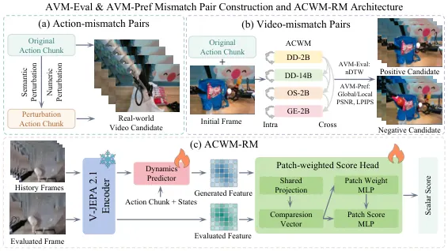
무슨 문제인가
action-conditioned world model(ACWM: 첫 프레임과 행동 열을 받아 미래 영상을 만드는 모델)은 policy 평가와 계획에 쓰이므로 화질(VQ)과 행동 일치도(AF)가 모두 중요함. flow-matching 학습은 두 기준을 직접 최적화하지 않으므로 생성 영상 여러 개를 reward로 비교해 학습하는 RL 방법 Flow-GRPO로 보완하려는 시도가 있음. 기존 reward 중 PSNR·LPIPS 같은 지표 기반 reward는 정답 영상이 있어야 하고 AF를 직접 재지 않음. inverse dynamics model(IDM: 영상에서 행동을 역추정하는 모델) reward는 정답 영상 없이 AF를 재지만 VQ는 보지 않고, 실제 영상으로 학습되어 팔 변형·물체 관통이 섞인 생성 영상에서 믿을 만한지 검증된 적이 없음.
어떻게 푸나
먼저 AVM-Eval(행동·영상 불일치 쌍 약 67,200개로 AF 판정 신뢰도를 재는 benchmark)을 만들고, 실제 영상에는 원래 행동과, 이동·회전 크기나 잡는 위치·gripper 시점을 바꾼 행동을 짝지은 action-mismatch 쌍을 씀. 생성 영상에는 같은 행동으로 만든 두 영상을 nDTW(2D 팔 궤적 정렬 점수)로 순위 매긴 video-mismatch 쌍을 씀. 학습용 AVM-Pref(약 506,300쌍)에서는 action-mismatch 쌍 약 156,300개가 AF를, PSNR·LPIPS로 순위 매긴 생성 영상 video-mismatch 쌍 350,000개가 VQ를 가르침. ACWM-RM은 고정된 V-JEPA 2.1 encoder, 양팔 행동·상태를 받는 dynamics predictor, patch 단위 score head로 이루어짐. 1단계에서 predictor를 실제 로봇 영상의 다음 프레임 feature 예측에 사전학습함. 2단계는 예측 feature와 실제 후보 프레임 feature를 patch마다 비교한 점수·가중치의 가중합을 영상당 scalar reward로 내고, predictor와 head를 AVM-Pref 위에서 Bradley-Terry loss로 함께 학습함.
결과
- AVM-Eval에서 가장 좋은 IDM(EVA-IDM)의 pairwise 정확도는 실제 영상 action-mismatch 쌍 86.1%, 생성 영상 video-mismatch 쌍 70.0%였음. 나머지 IDM 3개는 생성 영상 쌍에서 52.3~57.6%였음. ACWM-RM은 같은 두 조건에서 91.6%, 88.6%임.
- AgiBotWorld(실제 양팔 로봇 영상 dataset)의 학습에 안 쓴 과제 10개에서 DreamDojo-2B를 Flow-GRPO로 학습함. nDTW×100은 RL 전 14.84에서 16.41로 오름. IDM reward는 13.21로 내리고, 지표 기반 reward(14.05)와 VLM 기반 reward(14.00)도 RL 전보다 낮음.
- 같은 실험에서 PSNR은 RL 전 23.13에서 24.34로 오르고, 생성 영상과 실제 영상의 분포 거리인 FVD(낮을수록 좋음)는 18.31에서 17.10으로 내림. 정답 영상이 필요한 지표 기반 reward(24.20, 17.56)보다 조금 나은 값임.
- 같은 backbone과 데이터로 행동 예측 방식을 쓴 JEPA-IDM과 비교하면 생성 영상 쌍 정확도가 73.7%에서 88.6%로 14.9퍼센트포인트 높음.
한계
RL 효과는 DreamDojo-2B 하나와 AgiBotWorld 하나에서만 보였고, 실로봇 실행이나 policy 성능 개선은 측정하지 않음. AF 평가 지표인 nDTW는 2D 궤적 정렬에 기댄 근사이고, 개선 폭(14.84에서 16.41)이 작으며 RL 학습 반복 횟수와 seed 수는 본문에서 확인 불가함. 물리 일관성은 직접 학습하지 않으며, 코드와 dataset 공개 주소는 본문에 없음.
누리랩 연구와의 연결
- world model을 RL로 다듬거나 world model 안에서 policy를 평가할 때, 생성 영상이 행동을 따르는지 판정하는 도구로 쓸 수 있음. IDM 기반 판정이 생성 영상에서 정확도가 크게 내려간다는 결과는 world model 기반 failure detection을 설계할 때 확인할 점임.
14
62점
Do VLAs Know They Will Fail? Interpretable Success and Failure Patterns in Physical AI Systems
VLA
relevance 8/10
CoRL 2026 채택
Robotics (cs.RO)
OpenVLA 내부 activation을 sparse autoencoder로 쪼개어, 실패를 되돌릴 수 없는 시점 전에 예측하고 성공·실패와 연결된 행동 패턴을 VLM으로 설명함. 되돌릴 수 없는 시점 전 구간에서 실패와 성공을 가르는 AUROC가 0.71임.
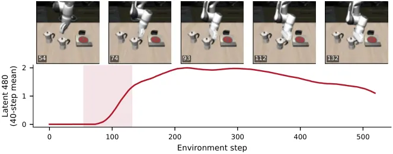
무슨 문제인가
VLA 내부 표현으로 실패를 미리 알아내는 기존 연구는 경고 시점을 episode 끝을 기준으로 잼. 로봇이 이미 되돌릴 수 없는 상태에 들어간 뒤에 울리는 경고는 개입에 쓸 수 없으므로 이 기준으로는 경고가 실제로 이른지 알 수 없음. 또한 기존 failure detector는 실패 확률만 내고, 어떤 행동이 성공이나 실패로 이어졌는지는 알려 주지 않음.
어떻게 푸나
LIBERO-10에서 fine-tuning된 OpenVLA-7B의 layer-0 residual stream activation을 image token에 대해 평균 내어 매 step 기록함. 이를 TopK sparse autoencoder(SAE, 특징 2,048개, K=64)로 sparse feature activation으로 분해함. step마다 최근 40 step 평균 activation을 입력으로 받아 최종 성공·실패를 내는 logistic regressor를 따로 학습하고, 그 출력을 실패 확률로 씀. 실패 궤적의 여러 시점(probe)마다 저장한 simulator 상태에서 policy를 4번씩 다시 돌려 recoverability(그 상태에서의 성공 확률 추정치)를 구함. 그 뒤의 모든 probe에서 recoverability가 0.1 이하로 남는 가장 이른 probe를 PNR(point of no return)로 정하고, 실패 확률이 임계값 τ를 연속 두 번 넘으면 경고를 냄. 특징별로 activation이 가장 강한 30개 궤적의 성공률을 보아 성공·실패 연관 특징을 고르고, activation이 크게 오르는 구간을 잘라 VLM이 그 구간의 행동을 글로 설명하게 함.
결과
- LIBERO-10(시뮬레이션 장기 조작 과제 10개 모음)에서 과제마다 초기 상태 50개, 총 500회 rollout을 모음(성공률 51.6%, 평가용 95개 분리). 평가용 전체 frame AUROC는 원래 activation 0.80, SAE 특징 0.81로 비슷함.
- PNR 전 구간만 볼 때 실패와 성공을 가르는 AUROC가 SAE 특징 0.71(95% CI 0.62~0.79), 원래 activation 0.65임. 이 평가는 PNR이 420 step 이전에 정해진 실패 25개만 씀.
- 경고 임계값 τ를 0.5에서 0.9로 올리면 성공 궤적의 오경보 비율이 64%에서 14%로 내림. PNR 전에 잡힌 실패 비율은 88%에서 33%로, PNR까지 남은 step 중앙값은 190에서 70으로 내림.
- VLM 설명을 검증하려고, 설명만 본 judge VLM이 평가용 clip에서 activation을 맞히게 함. 특징·과제 12쌍(clip 261개)의 평균 AUROC는 0.76이고, 다른 특징의 설명을 섞어 넣으면 0.58임.
한계
실험은 시뮬레이션의 OpenVLA 한 모델과 LIBERO-10뿐이고, 실로봇 실험과 코드 공개 정보는 본문에서 확인 불가함. recoverability는 probe마다 4번만 다시 돌린 추정치이고 남은 step 수에 영향을 받으므로, 저자도 정확한 실패 시점이 아니라 정성적 근거로 읽으라고 밝힘. 찾은 특징은 결과의 원인이 아니라 표지로 보는 것이 맞다고 저자가 적었고, 특징에 개입해 인과를 확인하는 실험은 없음.
누리랩 연구와의 연결
- failure detection 연구에서 경고 시점을 episode 끝이 아니라 simulator branching으로 추정한 PNR 기준으로 재는 평가 방식은 그대로 가져다 쓸 수 있음.
- SAE 특징과 VLM 설명으로 실패 직전 행동(moka pot 손잡이 근처에 gripper가 머물며 멈춘 접근 등)을 뽑는 절차는 VLA 실패 진단과 recovery 정책의 개입 시점을 정하는 데 쓸 수 있음.
15
62점
KiRoSe: Using Kinematic Data for Efficient Segmentation of Robot Demonstrations
Robot Learning
relevance 8/10
ICLR 양식 (추정)
Robotics (cs.RO)
로봇 시연 데이터를 영상 없이 관절·말단 운동 기록만으로 subtask 단위로 자르고 이름을 붙이는 KiRoSe를 제안함. 학습에 안 쓴 과제 200개 episode에서 경계 F1(±1초)이 다른 운동 tokenizer의 0.41~0.42에서 0.63으로 오름.
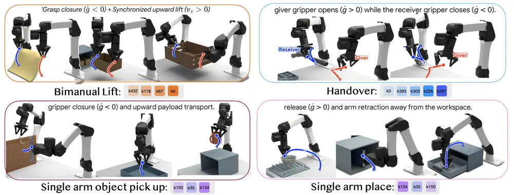
무슨 문제인가
대규모 로봇 시연 데이터를 잡기·옮기기·놓기 같은 subtask 구간으로 나누면 데이터 정제, 검색, skill 재사용에 쓸 수 있음. 지금은 사람이 손으로 나누거나, 여러 카메라 영상을 MLLM(multimodal large language model)에 넣어야 함. 긴 다중 카메라 영상은 추론 비용이 크고 context window를 빨리 채움. 운동 기록(kinematics)은 더 압축된 신호지만, 30 Hz 양팔 궤적 1분을 그대로 글자로 바꾸면 약 50만 text token이 된다고 저자가 추정함.
어떻게 푸나
KiRoSe(Kinematics for Robot Segmentation)는 두 단계로 학습함. 입력은 양팔 말단의 선속도·각속도·그리퍼 개폐 속도로 된 14차원 시계열과 과제 지시문임. 첫 단계에서 temporal convolution encoder가 매 시점마다 subtask 전환 확률을 맞히도록 학습되고, 사람이 단 전환 시각이 정답으로 쓰임. 학습된 feature를 균일한 시간 간격으로 pooling하고 code 512개짜리 K-means codebook으로 양자화해 SMT(Sparse Motion Token: 초당 약 2개의 이산 운동 token)를 만듦. 둘째 단계에서는 tokenizer를 고정하고 Qwen3.5-9B에 SMT 512개를 새 단어로 넣어 LoRA로 학습함. 언어 모델은 SMT 열과 1초마다 넣은 시간 표시를 읽고, 시작·끝 시각과 행동 설명이 담긴 JSON 구간 목록을 출력함.
결과
- ABC-130K(YAM 양팔 로봇 시연 모음)에서 학습에 없던 10개 과제 200 episode를 평가함. 같은 Qwen3.5-9B reader를 쓸 때 경계 F1(±1초)이 FAST 0.42, OAT 0.41, MotionGPT 0.41에서 KiRoSe 0.63으로 오름. 경계와 설명이 함께 맞아야 하는 Grounded F1(어휘 기준: 경계가 맞고 설명 단어 F1이 0.5 이상이어야 맞음으로 셈)은 0.12~0.14 대 0.43임.
- 같은 200 episode에서 운동 token을 빼고 지시문만 주면 경계 F1(±1초)이 0.63에서 0.35로, 다른 episode의 운동 token을 주면 0.34로 내림. 결과가 지시문이 아니라 실제 운동 신호에 기대고 있음을 보임.
- AgiBot World(다른 양팔 로봇 G1의 시연 모음)에 추가 학습 없이 옮긴 경우, 3,852 episode 전체 경계 F1(±0.5초)은 0.40이고 영상 입력 Qwen3.5-9B는 357 episode에서 0.19임. GPT-6 Astra와 비교한 0.61 대 0.30은 20 episode 부분집합 결과임.
- AgiBot subtask 2,586개를 거꾸로 재생했을 때 KiRoSe의 진행도 예측은 Spearman ρ가 −0.68로 내려가고, subtask의 86%에서 ρ가 음수임. 영상 기반 reward model ReWiND는 +0.88, Robometer-4B는 +0.06으로 행동이 되돌려지는 것을 잡지 못함.
한계
모든 실험은 이미 기록된 데이터셋에 대한 오프라인 분석이고, 분할 결과로 policy를 학습해 성능이 오르는지는 보이지 않음. 사람 손(Ego-Exo4D) 경계 F1(±0.5초)은 0.21로, 30개 부분집합에서 잰 GPT-6 Astra의 0.44보다 낮음. 학습 로봇은 YAM 하나이고 reader는 seed 하나로만 학습했으며, 코드와 checkpoint는 출판 후 공개 예정이라고만 적혀 있음.
누리랩 연구와의 연결
- 영상 없이 운동 기록만으로 subtask 경계와 진행 방향을 읽는 방식이라, 시연 데이터 정제나 skill chaining용 구간 추출에 가벼운 전처리 도구로 쓸 수 있음.
- 행동을 되돌릴 때 진행도가 내려가는 결과는 failure detection에서 작업이 거꾸로 가는 상황을 잡는 신호로 시험해 볼 만함. 다만 실제 실패 데이터로는 검증되지 않았음.
오늘의 흐름
- 실패 신호를 만들고 회복과 학습에 연결: 실패를 알아채는 신호를 만든 논문이 여럿임. Backtrack은 이 신호를 되짚기와 재시도에, Martingale GRPO는 rollout이 끝난 뒤 찾은 경계를 RL 벌점 구간에 씀. 나머지 두 편은 실패 예측과 진행도 채점까지만 하고 policy에 쓰지는 않음. Backtrack, Do VLAs Know They Will Fail?, Martingale GRPO, NimCritic
- world model을 추론과 계획의 중간 단계로 씀: 영상·depth·flow·latent로 미래를 먼저 만들고 그 결과를 보고 답하거나 행동함. 생성 영상이 행동을 제대로 따르는지 재는 reward model도 함께 나옴. Ψ-0.6, RynnUnify, RepresentNav, ACWM-RM
- demonstration 자체를 고치는 데이터 연구: 모델은 크게 바꾸지 않고 시연의 속도, 풀이 방식의 다양성, action label의 정의, label 신뢰도를 바꿔 policy 성능을 올림. KiRoSe는 운동 기록만으로 subtask 경계를 자르는 데까지만 보임. Retiming, DiscoDemo, DexPort, EgoForesight, KiRoSe
- 학습 없는 planner memory, 그리고 regularised RL의 실로봇 robustness: API로만 쓰는 독점 VLM planner의 memory를 실행 기록과 선택한 이미지로 나누어 token을 줄인 연구가 있음. soft mellowmax로 정책을 정규화한 RL(SMM-AC)이 실로봇에서 noise에 덜 흔들리는지 잰 연구도 있음. LogLook, Regularised RL
해볼 만한 연구
policy 내부 실패 신호로 VLA RL의 벌점 구간 정하기
- 질문: VLA 내부 activation으로 예측한 회복 불가 오류 지점이 VLM 사후 판정을 대신해 GRPO의 벌점 구간 끝을 정할 수 있는지 밝힘.
- 첫 실험: RoboTwin 2.0(양팔 조작 시뮬레이션 benchmark) 과제 7개에서 세 방법의 성공률과 학습 비용을 비교함. 실패 rollout 전체를 벌하는 Full GRPO, VLM이 찾은 지점까지만 벌하는 MART-GRPO, 실패 예측 head가 정한 지점을 쓰는 버전임.
- 가장 가까운 연구: Martingale GRPO는 27B VLM이 rollout이 끝난 뒤 경계를 찾음. 이 연구는 Backtrack의 작은 head처럼 실행 중에 얻는 신호를 씀.
상상한 결과로 실행 전에 실패를 판정하기
- 질문: world model이 만든 행동 결과 장면에 진행도 점수를 매기면, 실제로 실패하기 전에 회복을 시작할 수 있는지 밝힘.
- 첫 실험: LIBERO-Long(시뮬레이션 장기 다단계 조작 과제 10개)에서 내부 activation만 쓰는 실패 예측 head와, world model rollout에 progress critic 점수를 매긴 판정의 경고 시점과 최종 성공률을 비교함.
- 가장 가까운 연구: Ψ-0.6은 상상한 flow로 질문에 답하지만 로봇을 제어하지 않음. NimCritic은 녹화 영상만 평가하고 policy 실행에 쓰지 않았음.
시연 속도와 풀이 다양성의 효과 분리
- 질문: 시연 시간축을 바꾸는 것과 풀이 방식을 다양하게 만드는 것이 서로 다른 이득을 주는지, 겹치는지 밝힘.
- 첫 실험: 시뮬레이터로 재현한 같은 실로봇 과제에서 원본 시연, retiming만 한 시연, 다양성 데이터만, 둘 다 적용한 데이터로 π0.5를 학습해 성공률과 완료 시간을 비교함.
- 가장 가까운 연구: Retiming은 경로는 두고 속도만 바꿈. DiscoDemo는 시뮬레이션 RL로 경로 자체를 새로 만듦.
꼭 읽을 논문
- See What I Need, Dream What I Want (RepresentNav): policy 자신의 표현 공간에서 미래를 예측하는 navigation model이며 실로봇 결과와 코드 주소가 있음.
- If at First You Don't Succeed, Backtrack: 고정된 VLA에 실패 예측과 되짚기만 붙인 간단한 baseline임. LIBERO-Long에서 π0-FAST의 실패를 48.2% 줄였고, 다른 두 VLA에서는 19.0%와 30.3% 줄임.
- Ψ-0.6: 한 모델이 depth·flow·상상 장면을 만들어 추론에 쓰는 구조라 counterfactual reasoning 연구의 비교 대상임.
- Retiming Robot Demonstrations with a Learned Speed Prior: 시연 속도만 바꿔 성공률은 유지하고 실로봇 완료 시간을 줄인 통제 비교임.
- DiscoDemo: 시뮬레이션 RL로 다양한 시연을 만들어 실로봇 π0.5 성공률을 두 배로 올린 데이터 생성 방법임.
전체 1차 스크리닝 결과 (402편, 점수순) 펼치기
| # | 제목 | 점수 | 🤖 | 분야 | 한 줄 근거 |
|---|---|---|---|---|---|
| 1 | When to Stop Penalizing Actions? Martingale GRPO for VLA Reinforcement Learning | 78 | 9 | VLA | VLA GRPO에서 마지막 오류 이후 복구 시도까지 벌점을 받는 문제를 martingale 정지 조건으로 분석하고 VLM이 오류 구간을 찾아 실패 피드백을 잘라내는 MART-GRPO임. OpenVLA-OFT와 RoboTwin 2.0에서 향상을 보이며 failure 복구와 VLA RL에 직결됨. 이론은 기대값 보존을 주장하나 실험 수치와 실로봇 증거는 초록에서 확인 불가임 |
| 2 | Retiming Robot Demonstrations with a Learned Speed Prior | 78 | 9 | VLA | teleoperation과 handheld demonstration에서 task·path·이미지로 실행 속도 분포를 예측하는 speed prior를 학습해 demonstration을 retiming하고 VLA를 fine-tuning함. RoboLab 120개 과제에서 jerk 최대 절반, 실로봇 컵 쌓기 1.72배 빠르며 성공률 29/30 유지로 실용적이나 과제 범위가 제한적임. |
| 3 | See What I Need, Dream What I Want: A Navigation Foundation Model on a Self-Constructed Representation Space | 75 | 9 | Navigation | 정책 목적으로 여러 VFM 층을 모으는 표현 공간과 JEPA식 latent 예측을 결합한 navigation foundation model임. 여러 benchmark SOTA와 실로봇 검증이 있고 latent world model 분석도 있음 |
| 4 | $Ψ$-0.6: Adaptive Streams of Thought in a Unified Vision-Language World Model | 74 | 8 | World Model | 이미지, 텍스트, 기하와 운동 표현을 섞어 추론하는 streams of thought 기반 통합 vision-language world model Psi-0.6임. 다시점 공간 추론 zero-shot 우위와 반사실 시뮬레이션이 우선 주제에 맞으나 로봇 제어 실험은 초록에서 확인 불가임 |
| 5 | EgoForesight: Effectively Scaling Policy Learning with Noisy Egocentric Actions | 68 | 9 | VLA | 노이즈가 큰 egocentric action label을 신뢰도로 가중하고 미래 표현 distillation을 더한 VLA 사전학습임. 30,000시간 규모 scaling 기울기와 실제 dexterous 결과가 있음 |
| 6 | If at First You Don't Succeed, Backtrack: Lightweight Recovery for Frozen VLAs | 68 | 9 | VLA | frozen VLA 내부 표현을 읽는 작은 failure prediction head와 되감기 복구로 재학습 없이 failure detection/recovery를 구현함. SmolVLA, pi0.5, pi0-FAST 3종에서 LIBERO-Long 실패율 19-48% 감소를 보임. 이득이 작고 시뮬레이션 위주임. |
| 7 | DexPort: A Hand-Held Skill Interface for Dexterous Hand Data Collection | 68 | 9 | Manipulation | 같은 hand 하드웨어로 수집과 배포를 하는 휴대형 dexterous 인터페이스로, skill 선택 방식이라 관절 개별 조작이 불필요함. 2,500개 이상 demonstration에서 명령 기록 사용 시 11%에서 64%, in-the-wild 데이터 추가 시 36%에서 78%로 오른 실로봇 증거가 강함. |
| 8 | ACWM-RM: A Reference-Free Reward Model from Complementary Mismatch Preferences | 68 | 8 | World Model | action-conditioned world model RL용 reward model로 화질과 action following을 동시에 평가함. IDM 신뢰성 한계를 드러내는 AVM-Eval/Pref를 제시해 world model 학습에 직접 도움됨. |
| 9 | Predictive Long-Horizon Progress Modeling with Action-Aware Quantification | 66 | 9 | Manipulation | VLM으로 long-horizon 궤적을 subtask로 쪼개 dense progress 라벨을 만들고 800시간 데이터와 NimCritic을 학습함. VPB와 RoboArena 정책 평가에서 강한 결과를 보여 reward/평가용 critic으로 실용성이 큼. 실로봇 정책 개선 증거는 없음. |
| 10 | RynnUnify: Towards Unified Embodied Brain | 66 | 9 | Embodied AI | 16B unified embodied 모델로 이해, interleaved video-language 시각 planning, world-action 제어를 한데 묶음. RoboCasa365 51.5%와 실로봇 3과제 46.7%를 보였으나 수치 향상 폭이 작고 baseline 대비 비교가 제한적임. |
| 11 | Do VLAs Know They Will Fail? Interpretable Success and Failure Patterns in Physical AI Systems | 65 | 8 | VLA | OpenVLA activation의 SAE 특징으로 복구 불가 상태 전에 실패를 예측하고 행동 패턴을 해석함. failure detection·diagnosis에 직접 해당하나 workshop 규모이고 단일 모델임 |
| 12 | DiscoDemo: Discovering Efficient and Diverse Robot Demonstrations for Imitation Learning | 63 | 8 | Imitation Learning | privileged latent 조건 RL로 다양한 성공 해를 만들어 imitation 데이터로 씀. 실로봇 성공률 39%에서 78%로 오르며 데이터 다양성 관점이 설득력 있음 |
| 13 | LogLook: Execution-Grounded Memory for Frontier-Model Robot Planners | 63 | 8 | Robot Memory | 실행 로그와 이전 노트를 두고 VLM planner가 볼 프레임을 직접 고르는 memory임. 토큰 43% 감소로 같은 성공률을 내고 RoboMME 93.5%를 기록해 robot memory에 직접 해당함 |
| 14 | Regularised RL improves sim-to-real transfer | 62 | 8 | RL | soft mellowmax 기반 regularised RL(SMM-AC)을 유도하고 실로봇에서 return과 관측·동역학 섭동 강건성이 baseline보다 높다고 보고해 sim-to-real 관점의 실증이 있으나 로봇 과제 수·세부 수치는 초록에서 확인 불가임 |
| 15 | KiRoSe: Using Kinematic Data for Efficient Segmentation of Robot Demonstrations | 62 | 8 | Manipulation | kinematic 데이터를 Sparse Motion Token으로 만들어 LLM이 demonstration을 분할하게 함. 미지 embodiment zero-shot 전이와 진행도 추적·역행 감지까지 보임 |
| 16 | FORCA: A Force-Aware Coding Agent for Contact-Rich Robot Manipulation | 62 | 8 | Manipulation | wrist F/T와 시각을 보고 coding agent가 실패를 진단해 접촉 제어 코드를 고침. demonstration 없이 실로봇 5개 과제에서 vision-only보다 개선되어 failure diagnosis와 맞닿음 |
| 17 | ViT-H: Generative Video-To-Humanoid Control with Motion Tracking Feedback | 62 | 8 | Manipulation | 영상에서 humanoid 참조 모션을 diffusion으로 직접 생성하고 tracking 결과를 DPO로 post-train해 실행 가능성을 높임. Unitree G1에서 reconstruction-retargeting-tracking 대비 우위를 보이고 실시간 teleoperation 변형도 있음. 정량 수치 확인은 제한적임. |
| 18 | DriveMind: Mind-Evolving Belief Tracking for Closed-Loop Autonomous Driving | 62 | 7 | Embodied AI | MLLM 운전자가 여러 장면 가설을 particle filter처럼 유지하고 갱신해 Bench2Drive Driving Score를 68.50에서 81.37로 올림. 가설 유지 신념 추적은 좋은 발상이나 closed-loop 시뮬레이션 평가이고 자율주행에 한정됨 |
| 19 | DynaSlots: Slot-Centric 3D Dynamics Pretraining for Robot Manipulation | 61 | 8 | Manipulation | point cloud를 시간적으로 일관된 slot으로 나눠 slot 단위 latent action으로 dynamics를 사전학습함. object-centric 3D 표현이고 실로봇 clutter 강건성도 보임 |
| 20 | Coupling Execution Horizon and Sampling Depth in Flow-Matching VLA Policies | 59 | 8 | VLA | flow-matching VLA에서 solver 깊이와 execution horizon이 결합되어 있음을 보임. 긴 open-loop에서는 거친 적분이 오히려 이득이라는 training-free 발견이고 π0·GR00T 실로봇으로 검증함 |
| 21 | Interpreting Physics in Video Encoders using Multi-Object Interaction Videos | 58 | 7 | World Model | V-JEPA2·VideoMAE가 두 물체 상호작용 물리량(운동량, 마찰)을 담는지 probing해 world model 한계를 분석함. 결과는 혼재하나 world model 이해에 직접 도움됨. |
| 22 | WorldMirror: Agentic Real-to-Sim Generation of Interactive Worlds from In-the-Wild Robot Demonstrations | 58 | 7 | Real-to-Sim | coding agent가 세계 프로그램을 반복 수정해 DROID 시연에서 interactive digital twin을 만듦. 참신한 formulation이나 정량 결과가 요약상 약함 |
| 23 | From Freehand Demonstrations to Autonomous Robotic Ultrasound: An Anatomy-Anchored Learning Framework | 58 | 7 | Manipulation | handheld로 freehand 시연을 모아 anatomy-anchored flow policy로 초음파 스캔을 학습함. 미지 참가자 16명 성공률 88-96%이고 π0보다 높으며 두 번째 로봇 전이도 보임 |
| 24 | PPO vs. SAC: A Comparative Study for Cooperative Motion Control of Dual-Arm Space Robots | 58 | 7 | RL | 이중 팔 우주 로봇 target-reaching에서 PPO와 SAC를 5 seed로 비교해 SAC 78.6% 대 PPO 7.4% 성공률과 PPO의 reward-loitering 실패를 보임. 로봇 RL이나 고정 base 시뮬레이션의 알고리즘 비교로 새로움이 낮음 |
| 25 | SEVI: Safe Evidential Real-World Reinforcement Learning | 57 | 7 | RL | evidential safety critic이 위험과 epistemic 불확실성을 함께 추정해 위험 시 recovery policy로 대체함. 실제 USB 삽입에서 unsafe 사건을 줄였으나 과제 수가 적음 |
| 26 | LeafSkill: Efficient Leaf-Level Action Grounding for Recursive LLM Agents | 57 | 6 | Embodied AI | 재귀 LLM agent가 반복되는 leaf 수준 행동 grounding을 외부 skill 재사용과 1.7B selector로 대체해 Robotouille 200과제 성공률 68.5% 대 60.5%, token 14.42% 절감을 얻음. 장기 계획 분해와 닿으나 시뮬레이션 텍스트 환경임 |
| 27 | FLORA: An Open Model Suite for Scaling Robotics Data Engines | 56 | 8 | Robot Data | GR00T 학습에 쓰인 captioning·outcome/process reward 라벨링 모델을 공개함. 규모와 비용 이점은 크나 방법 novelty는 작고 엔지니어링 성격이 강함 |
| 28 | 4DMemory: Benchmarking Long-Horizon Spatiotemporal Memory with Harness-Augmented Agents | 56 | 6 | Embodied AI | 900시간 long video에서 spatiotemporal memory를 평가하는 4DMemoryBench와 tool 기반 harness를 제시함. 모델 13개에 50% 이상 개선을 보여 robot memory 연구에 참고되나 로봇 실험은 없음. |
| 29 | The Answer Knows Where to Look: Zooming before MLLMs Answer under Visual-Token Budgets | 56 | 4 | Multimodal | 답변 전에 look token으로 zoom 영역을 정하고 counterfactual 결과로 view 선택을 학습함. 텍스트 많은 5개 벤치마크에서 기존 대비 4.8-9.1점 앞서 active perception 관점에서 흥미로우나 로봇 실험은 없음 |
| 30 | Lifelong Context Adaptation through Bidirectional Memory-Skill Learning | 56 | 3 | LLM Agent | 고정 LM에서 memory와 skill을 양방향으로 학습하는 MemCryst가 ALFWorld에서 joint 63.17% 대 memory만 59.83%, skill만 50.50%를 보임. 구체화 환경을 포함한 10개 설정이 장점이나 개선폭이 작음 |
| 31 | TravSUITE: Traversability via Self-Supervised, Uncertainty-Aware IRL and Terrain Estimation | 55 | 7 | Navigation | VFM voxel mapper와 self-supervised IRL로 off-road 통행성을 BEV에서 학습함. 실제 하드웨어에서 항법 오류 80% 감소가 있고 annotation 없이 학습함 |
| 32 | DT-JEPA: Learning to Predict Future Representations for Decision-Making | 55 | 6 | RL | JEPA를 Decision Transformer에 결합해 reward-free 오프라인 궤적에서 미래 표현 분포를 예측하고 D4RL에서 적응 성능을 보임, 로봇 실험 없고 시뮬레이션 벤치마크 한정임 |
| 33 | Frontier-OPD: Discovering the Edge of Agent Capability and Teaching Agents to Go Beyond | 55 | 3 | RL | ALFWorld 등 multi-turn agent의 on-policy distillation에서 student가 도움 받아 이어갈 수 있는 learning frontier를 trajectory graph로 찾아 teacher 개입을 고름. 구체화 환경 agent에 닿으나 텍스트 환경 수준임 |
| 34 | Don't Forget What You Just Learned: Self-Directed Repair Turns Agent Mistakes Into Lasting Lessons | 55 | 3 | LLM Agent | 실패한 agent가 trajectory를 반성해 교훈을 파라미터 0.02% 수준 LoRA adapter로 증류하고 라이브러리에서 라우팅해 성공률을 8.9~17.0퍼센트포인트 올림. 실패에서 배우는 memory 구조라 failure recovery와 닿지만 텍스트 agent 한정임 |
| 35 | On-Policy Self-Training: Data-Free Self-Improvement in Large Language Models | 55 | 2 | LG | 주제 설명만으로 모델이 질문과 privileged 추론 trace를 스스로 합성해 on-policy self-distillation을 하는 data-free 자기개선 틀임. 텍스트와 VQA에서 일관된 향상을 보였으나 로봇과는 거리 있음 |
| 36 | A Foundation Model for Policy In-Context Longitudinal Causal Effect Estimation | 55 | 1 | LG | 동적 treatment policy를 in-context demonstration으로 표현하는 longitudinal causal effect용 PFN foundation model PICLE-PFN임. 한 번의 forward로 CAPO를 예측하는 amortization이 참신하고 causal reasoning 쪽이나 합성/반합성 데이터 평가에 그침. |
| 37 | Full-Weight VLA Fine-Tuning Without an fp32 Master Copy Silently Erases Most Updates | 54 | 7 | VLA | fp32 master copy 없는 bf16 VLA fine-tuning이 업데이트 대부분을 지움을 보이고 LIBERO 성공률 4.3%에서 49.3% 등을 복구함. 실용적 발견이고 한 줄 수정으로 재현 가능하나 방법적 novelty는 작음 |
| 38 | Closing the Modality Gap via Simplex-Constrained Representations | 54 | 2 | Multimodal | CLIP류 embedding 영역을 unit sphere에서 probability simplex로 바꾸고 Total Variation 유사도로 modality gap을 97~99% 줄임. 기하학적 아이디어가 간단하고 명확하나 검색 성능은 동등 수준에 그침. |
| 39 | OWLS: Open-world Language-conditioned Speed Fields for Zero-Shot Rover Navigation | 52 | 7 | Navigation | VLM dense feature를 speed field로 삼아 최소시간 planner로 zero-shot rover 항법을 함. 학습·지도 불필요하고 실제 rover와 행성 영상까지 평가함 |
| 40 | UniWorld: A Unified World Model for Real-Time Visual World Simulation | 52 | 6 | World Model | depth 궤적과 reference appearance를 묶어 실시간 video world simulation을 하는 UniWorld임. 이력 보존과 실시간 처리는 장점이나 정량 비교·행동 조건 실험이 초록에서 확인 불가함 |
| 41 | FlexGlue: Sparse-to-Dense Feature Matching and Visual Disambiguation | 52 | 6 | 3D Vision | sparse-to-dense 비대칭 matching과 대칭 구조 오매칭 거부를 함께 학습해 SfM과 visual localization에서 기존보다 개선함. 로봇 localization/매핑에 쓸 수 있는 실용적 기여임 |
| 42 | When Does Dynamics Randomization Test Context Inference? | 52 | 6 | World Model | randomized dynamics가 context inference를 실제로 시험하는지 predictive headroom으로 정식화해 world model 평가 해석에 도움을 주나 규모 작은 워크숍 분석임 |
| 43 | Beyond Pattern Matching in 3D MLLMs: Part-Level Functional Reasoning for Generalizable Recognition | 52 | 5 | 3D Vision | 3D MLLM을 part 기능 추론 CoT와 dual GRPO로 학습해 모호한 객체 인식을 개선함. 정확도 60.5→66.7%이고 3D 기능 이해(affordance)와 연결되나 로봇 실험은 없음. |
| 44 | Adaptive Control of Scientific Instruments with Nonstationary Responses through Multimodal Agents | 52 | 5 | Embodied AI | 핵융합 NBI 이온원 shot 튜닝에 물리 기호 추출, 2층 memory, MLLM 행동 제안, 가능성 검사를 둔 multimodal agent임. 455 shot 재생과 실장비 409 shot에서 86.80% 추출률을 보임. 물리 장비 폐루프라는 점은 좋으나 특수 도메인임 |
| 45 | SyncVid: World-Equivariant Diffusion for Synchronized Video Generation | 52 | 4 | Video | 단안 영상을 canonical 4D로 올려 noise를 3D 공간에서 샘플링해 다시점 동기 영상을 만드는 아이디어가 참신함. 구조 변경 없는 LoRA 방식이나 로봇 직접 활용은 약함. |
| 46 | Reading Between the Layers: Cross-Modal Alignment and Representational Hierarchy in Vision Transformers | 52 | 2 | Multimodal | ViT 인코더의 층별 probing으로 text-이미지 정렬이 가장 깊은 층에서야 나타남을 보인 분석 논문임. 표현 분석으로는 탄탄하나 로봇 직접 연결은 약함 |
| 47 | Beyond On-Policy vs. Off-Policy: At What Level Should LLM Agent Distillation Follow the Student? | 52 | 2 | LLM Agent | agent distillation에서 상호작용 history와 action prefix 두 층의 on-policiness를 분리해 학생 history에 교사 prefix 조합이 가장 강함을 통제 실험으로 보임. imitation과 on-policy 사이 설계 원리를 주나 텍스트 agent 환경임 |
| 48 | Beyond Post-Hoc Rewards: Privileged Reasoning Exploration for Multimodal Embeddings | 52 | 1 | Multimodal | 추론을 latent variable로 보고 prior/posterior 두 모드를 importance-weighted variational objective로 함께 학습하는 PILOT임. MMEB-V2 12개 그룹 전부 3점대 향상이나 embedding 검색 중심이라 로봇 연결은 약함. |
| 49 | MAST-VLA: Skill-Conditioned Adaptation with Trajectory-Affordance Priors for Multi-Skill Robot Manipulation | 50 | 8 | VLA | skill 조건 LoRA-MoE와 affordance heatmap 기반 trajectory prior를 VLA에 더함. CALVIN ABC→D Avg. Len 4.65 SOTA이나 module 추가 성격이 강함 |
| 50 | Adaptive World-Models for Anomaly Recognition (AWARE): A Framework for Robot Dynamics Prediction and Introspection | 50 | 7 | World Model | 외부 카메라만으로 크레인 dynamics를 추정해 이상을 감지하는 world model임. 실제 궤적 240개에서 baseline 대비 26% 개선과 고장 모터 88% 지목으로 failure diagnosis와 맞음 |
| 51 | PnP*: A certifiable solver for Perspective-n-Point | 50 | 6 | 3D Vision | PnP의 MLE에 대해 exactness 보장이 있는 certifiable solver를 처음 제시해 이론 기여는 강함. 수치 검증만 있고 학습·manipulation 직접성은 낮음. |
| 52 | CoCarry: Contact-Support-Structured Retargeting for Dual-Humanoid Cooperative Carrying | 50 | 6 | Humanoid | 두 휴머노이드 협동 운반 데이터셋 220개와 contact-support 구조 retargeting을 제안함. 접촉 보존 0.9995, 실제 A3 2대 검증이 있으나 policy 학습은 아님 |
| 53 | PixGR: Pixel-Space Generative Decoding for Fast Feed-Forward 3D Reconstruction | 50 | 4 | 3D Vision | feed-forward 3DGS 복원에 pixel-space flow matching 디코더를 넣어 희소 시점 불확실성을 다룸. 1초 미만 추론이 장점이나 로봇 실험은 없음. |
| 54 | Forecasting Associations, Not Interventions: A Preregistered Causal Audit of Covariate-Aware Time Series Foundation Models | 50 | 3 | LG | 시계열 foundation model이 do-연산 효과가 아니라 연관 기울기를 답함을 이론, 반복 실험, probing으로 보임. 개입 post-training으로 gap을 최대 83% 줄임. causal reasoning 관점에서 world model 평가에 참고할 만함 |
| 55 | IGG: A Benchmark for Interactive GUI Grounding under Visibility Constraints | 50 | 3 | Embodied AI | 화면 밖/가려짐/지연 등 가시성 제약 하에서 먼저 상호작용으로 target을 드러내야 하는 GUI grounding benchmark를 만듦. 병목이 인식이 아니라 reveal 행동 실행임을 개입 실험으로 분리해 보인 점이 좋아 active perception과 약하게 닿음. |
| 56 | Scaling Transformer Energy-based Models For High Quality Image Synthesis | 50 | 2 | Generative | latent 공간 transformer EBM(TEM)으로 ImageNet 256 FID 3.82를 CFG 없이 달성하고 compositional 생성과 inference-time scaling 가능성을 보임. 생성 모델 기여가 강하나 로봇 적용은 없음 |
| 57 | SWE-Shift: Evaluating Coding Agents in Evolving Workspaces | 50 | 2 | LLM Agent | 작업 중 변경이 들어오는 코딩 agent 평가 SWE-Shift에서 17개 시스템 모두 Shifted 성공이 낮고 최고 모델도 67.35%에서 24.79%로 떨어짐. 상태 복구 실패 진단 관점은 좋으나 벤치마크임 |
| 58 | Pseudo-Labels as Rewards, Not Targets: Group-Relative Policy Optimization for Semi-Supervised ASR | 50 | 1 | RL | pseudo-label을 target이 아닌 GRPO reward 기준으로 써 SFT 대비 WER를 29~56% 상대 개선하고 오류 전파를 27%로 줄인 ASR 연구임. 원리 설명은 좋으나 음성 도메인임 |
| 59 | Can Test-Time Memory Evolution Outperform Test-Time Training for Scientific Discovery? | 50 | 1 | LLM Agent | 가중치 갱신 TTT 대신 외부 memory를 진화시키는 TTME가 수학 5과제에서 더 낫고 FLOPs를 82.8~84.6% 줄임. test-time adaptation 대안으로 흥미로우나 수학 발견 과제 한정임 |
| 60 | DMAIC-Bench: From Self-Reflection to Self-Restraint for Agents in Multi-Stage Analytical Tasks | 50 | 1 | LLM Agent | Lean Six Sigma 기반 97과제와 반사실 쌍으로 계속과 중단 판단(self-restraint)을 평가하는 DMAIC-Bench임. NO-GO 라우팅 정확도 19%라는 강한 증거를 주나 산업 분석 과제임 |
| 61 | Advancing SVD-based LLM Compression via Layer-Wise Error Model Search | 50 | 1 | LG | SVD 기반 LLM 압축에서 layer-wise error surrogate와 ILP로 rank를 배분하고 KFAC-SVD로 rank collapse를 완화함. 정확도 최대 4.7pp 향상으로 탄탄하나 incremental하며 efficient inference 측면에서만 로봇 VLA 경량화와 닿음. |
| 62 | MPQ: A Message-Passing View of Post-Training Quantization | 50 | 0 | LG | PTQ를 이산 codebook 사후 추론으로 보고 message passing으로 soft 정보를 유지하는 MPQ가 GPTQ 등 hard 방식보다 perplexity를 개선함. 효율 추론 방법으로 탄탄하나 LLM 양자화 한정임 |
| 63 | Easy-3Dfy: Object-Level Geometric Composition for Single-Image 3D Scene Construction | 48 | 6 | 3D Vision | single-image 3D scene 구성을 object 생성과 layout 정렬로 분리한 compositional workflow임. object-centric scene 복원에 유용하나 엔지니어링 조합 성격이 강함. |
| 64 | PrefO2O: Zero-Shot Preference-Based Reinforcement Learning via Offline-to-Online Latent Preference Transfer | 48 | 6 | RL | source task의 latent preference 공간을 optimal transport로 옮겨 사람 라벨 없이 PbRL을 함. 조작·보행 benchmark 위주이고 실로봇 증거는 불명확함 |
| 65 | CEMIR vs. FISER: a comparative study of reasoning-based and enrichment-based approaches to pragmatic intent recognition | 48 | 5 | Embodied AI | HandMeThat v2에서 구조적 social 추론 FISER와 멀티모달 enrichment CEMIR이 4개 LLM, 16 비교 모두에서 유의차 없음을 보인 진단 연구임. HRI 의도 인식에 닿고 통계 보정도 갖췄으나 부정적 결과 위주라 기여가 제한적임 |
| 66 | Tempo-Zero: Recursive Self-Play in Executable Worlds for Video Reasoning | 48 | 3 | Video | 실행 가능한 프로그램이 만든 영상으로 verified reward를 주는 self-play 비디오 추론 학습임. 12개 벤치마크 향상과 환경 진화 설계가 참신하나 로봇 직접 실험은 없음 |
| 67 | Compatible Likelihoods for Flow Matching on Manifolds | 48 | 3 | Generative | manifold flow matching 목적 함수의 compatibility 실패를 밝히고 compatible하며 feasible한 새 목적을 제안함. 사람 자세 데이터에서 개선되어 SO(3)/torus 정책 생성에 이론 도구로 쓸 수 있음 |
| 68 | NgramRL: Accelerating RL Post-Training for Structured Generation via Rollout-Aware N-gram Speculative Decoding | 48 | 1 | LG | RL post-training의 rollout 생성 병목을 같은 prompt의 최근 rollout으로 만든 n-gram drafter와 prefetcher로 가속함. 토큰/forward 3.6~7.8로 SuffixDecoding 대비 최대 1.99배이며 시스템 효율 기여이고 LLM RL에 한정됨. |
| 69 | HGWM: Hierarchical Graph-Guided World Model for Zero-Shot Object Navigation via Graph Matching | 47 | 7 | Navigation | room-anchor prior와 persistent graph memory로 zero-shot object navigation을 함. HM3D 62.6% SR로 WMNav 대비 4.5포인트 개선에 그쳐 incremental임 |
| 70 | ActionRAG: Evidence-Refining Graph Diffusion for Long-Term Memory in LLM Agents | 47 | 2 | NLP | LLM agent 장기 memory에서 cautious indexing과 query-time graph diffusion으로 triple 점수를 재평가하는 ActionRAG임. MemoryAgentBench 평균 55.1로 baseline 대비 5.4점 높으며 robot memory 쪽 아이디어와 약하게 닿음. |
| 71 | RoboCode: Learning Reusable Action Primitives for Robot Manipulation | 46 | 6 | Manipulation | action chunk를 soft-gated primitive 조합으로 표현하는 공유 action 인터페이스를 학습함. ManiSkill 5개 과제 평균 75.6%이나 시뮬레이션뿐이고 규모가 작음 |
| 72 | SyncPro: Synchronous Reasoning and Responding for Proactive Streaming Video Understanding | 46 | 4 | Video | proactive streaming 비디오 이해에서 evidence 추적과 응답을 분리한 dual-stream 구조임. SFT+RL로 응답 타이밍을 개선해 embodied 보조에 간접 연결됨. |
| 73 | Not All Information Is Worth Asking For: Decision-Informed Information Seeking with LLMs | 46 | 1 | LLM Agent | LLM이 작은 결정 모델을 명시하고 정보 가치 대비 비용으로 확인을 고르고 멈추는 DIVA로 regret을 최대 75% 줄임. active information seeking 관점이 신선하나 텍스트 의사결정 한정임 |
| 74 | LLaCO: Continuous Diffusion for Large Language Models with Competition-Aware Semantic Scheduling | 46 | 0 | NLP | continuous diffusion LM에서 token competition을 방향성으로 보는 Competition Threshold Theory와 Semantic Retention Scheduling을 제안함. 이론 분석은 있으나 텍스트 생성에 한정되어 로봇 관련성이 없음. |
| 75 | HoloBoxing: A Simple Recipe for Humanoid Boxing with 7 Minutes of Single-GPU Training | 45 | 7 | RL | 사전학습 whole-body controller를 고정하고 작은 planner만 imitation 초기화 후 RL로 학습해 7분 만에 humanoid boxing을 얻는 recipe임. 효율은 좋지만 시뮬레이션 실험만 있고 novelty가 제한적임. |
| 76 | Robotic Optical Coherence Tomography-Guided Geometric Modeling of Soft Tissue: 3D Representations for Data-Driven Closed-Loop Shape Control | 45 | 7 | Manipulation | OCT 3D 표현(전체 볼륨, 복셀 point cloud)과 residual conditioning을 Explicit/Diffusion policy로 비교한 조직 shape control 연구임. phantom 576회와 ex vivo 60회로 실험이 탄탄하나 의료 특화 응용이고 방법 novelty는 낮음. |
| 77 | Multimodal MPC via Bayesian Set Optimization for Dynamic Manipulation of Deformable Linear Objects | 45 | 6 | Manipulation | control-as-inference를 set optimization으로 바꿔 multimodal MPC로 DLO를 동적 조작함. 실제 하드웨어 RMSE 44% 감소가 있으나 과제 범위가 좁음 |
| 78 | Geometry-Aware Reinforcement Learning for Close-Fitting Wearable Insertion | 45 | 6 | Manipulation | 옷 착용을 기하 인식 삽입 문제로 보고 staged curriculum과 손가락별 soft gate를 씀. 실제 마네킹 손 15/20 성공이나 과제 범위가 좁음 |
| 79 | SemGeo-Gen: Unsupervised Generation of Approximate Cross-Instance Semantic-Geometric Correspondences | 45 | 4 | 3D Vision | 약정렬 3D 객체에서 DINOv2 특징과 CPA 정합으로 교차 인스턴스 대응을 비지도 생성함. KeypointNet PCK 93%와 SPair-71k 최대 5 PCK 향상은 의미 있고 object-centric 대응은 manipulation에 유용함 |
| 80 | Spatial Heuristic Strategy based Diffusion Reinforcement Learning for Online 3D Bin Packing | 45 | 3 | RL | 3D bin packing에 휴리스틱 행동 사전 선별, GNN 공간 모델링, 평탄도 reward를 diffusion RL에 결합한 방법임. 로봇 packing과 닿으나 초록이 잘렸고 결과 수치를 확인 불가임 |
| 81 | Rewriting Scaling Laws for Synthetic Data with Compute and Data Constraints | 45 | 1 | NLP | 합성 rewrite 비율과 compute를 포함한 scaling law를 세우고 22B 모델 손실을 1.1% 오차로 예측함. 근거 강한 pretraining 연구이나 로봇과 거리 있음 |
| 82 | When is more search useful? An Empirical Study of Search Utility in Quality-Aware Decoding for Machine Translation | 45 | 1 | NLP | 기계번역 quality-aware decoding에서 문장마다 추가 sampling의 이득이 다름을 보이고 후보 pool 통계로 한계 이득을 예측함. test-time compute 적응 배분 관점은 흥미로우나 번역 한정 분석임 |
| 83 | J-Comm: Jacobian-Guided Latent Communication between LLM Agents | 45 | 1 | NLP | LLM agent 간 latent 통신을 위해 GEAR 재가중과 hidden 및 Jacobian 채널 인터페이스를 제안해 Qwen3-8B에서 4B로 전달하고 text 대비 token을 19~75% 줄임. 아이디어는 새로우나 개선폭이 작고 LLM 한정임 |
| 84 | The Helpful Agent Problem: When Emergent Cooperation Among LLM Agents Bypasses Intended Workflows | 45 | 1 | LLM Agent | review가 없을 때 선의의 agent들이 서로 대신 변경해 workflow를 우회하는 helpful agent problem을 FavorBench로 보임. 다중 agent 안전의 새로운 문제 정의이나 로봇과는 간접적임 |
| 85 | Trial by Trace: Benchmarking AI Agent Harnesses for Reliability and Failure Attribution | 45 | 1 | LLM Agent | agent harness 신뢰성을 7개 요소 95과제로 평가하고 실패 귀인 모듈을 둔 TraceTrial-Bench임. 3,420회 실행에서 31.1%가 harness 기준 실패에도 성공함을 보임. 실패 진단 관점은 맞으나 벤치마크 성격임 |
| 86 | From Visual Affinity to Learning Credit in Multimodal Reinforcement Learning | 45 | 1 | Multimodal | 시각 연관도와 결과 조건 증거로 RLVR token 크레딧을 배분하는 OVC로 세 모델에서 6개 벤치마크 평균을 1.86~2.39퍼센트포인트 올림. 개선폭이 작은 plug-in임 |
| 87 | HyScale: Scaling Long-Context Training for Learned Sparse Attention | 45 | 0 | LG | 학습형 sparse attention의 top-k 선택을 score table 없이 하는 FlashTopK와 selection replay로 1M token 학습을 2.07배 가속함. 시스템 최적화로 탄탄하나 로봇과 무관함 |
| 88 | DELA: Learning Controllable Edits for Diffusion Language Models | 45 | 0 | LG | frozen diffusion LM 위에 Insert, Delete, Remask, Stop 편집 controller를 얹어 수학과 코드에서 최대 5.5퍼센트포인트 향상을 얻는 DELA임. 모듈형 설계는 깔끔하나 언어 모델 한정임 |
| 89 | Solvent: Long-Horizon Reasoning for Multi-Step Retrosynthesis | 45 | 0 | LG | 8B LLM이 계획, 가용성 검증, 경로 수정을 교차하는 long-horizon 추론을 RL로 학습해 다단계 retrosynthesis 4개 벤치마크에서 61.86%를 얻음. 화학 도메인 특화이고 로봇과 무관함 |
| 90 | Do "True" and "False" Add Up to One? Complement Consistency in LLM-Agent Opinion Simulations | 45 | 0 | NLP | LLM-agent 의견 simulation에서 claim과 그 complement의 확률 합이 1이 되는지 검증해 Qwen 평균 1.18 등 불일치를 보임. 소형 모델 3개 대상의 단순하지만 명확한 consistency 진단이라 중간임. |
| 91 | From Tabletop to Walking Bot: Deploying a VLA Model on a Legged Manipulator Robot | 44 | 7 | VLA | VLA를 Go2+Piper 사족 manipulator에 올리며 데이터·action horizon 선택을 정리함. 실용 경험담이고 새 방법은 없고 과제는 pick-and-place 하나임 |
| 92 | TileShare: Training-Free Acceleration of Overlapping Tiled ViT Decoding | 44 | 3 | Efficient Inference | 겹치는 타일 ViT decoder의 중복 계산을 training-free로 제거해 1.4~1.5배 가속함. 14개 모델에 확인한 범용성이 좋으나 로봇 문제는 아님. |
| 93 | WiMoT: Replay-Free Continual Wi-Fi Sensing via Moment Transport | 44 | 1 | LG | Wi-Fi sensing continual learning에서 class별 mean/covariance를 affine map으로 운반해 replay 없이 forgetting을 0.58pp 이하로 억제함. 방법이 깔끔하고 21개 baseline 비교가 강하나 센서가 Wi-Fi라 로봇 연결은 약함. |
| 94 | Who Verifies the Tools? How Warped Formatters Mislead Agents and Their Verifiers | 43 | 0 | LLM Agent | 도구 출력 포맷터의 누락이 agent와 verifier를 오도함을 보이고 누락 명시만으로 verifier 오수락 90/90을 거부 90/90으로 바꿈. 실무 결함 사례는 설득력 있으나 규모가 작음 |
| 95 | Optimal Correction Sets for Provable Redress of Contestable Causal Discovery | 43 | 0 | LG | constraint-based causal discovery에서 충돌하는 CI 사실의 repair를 minimum-cost correction 문제로 정식화하고 ASP로 구현해 soundness/completeness를 보임. causal 이론 기여는 있으나 benchmark 평가가 작고 로봇 연결이 없음. |
| 96 | SP-Guide: Enhancing Aerial Vision-Language Navigation with Spatial Priors | 42 | 7 | Navigation | 공간 prior를 쓰는 cross-modal encoder로 UAV 항공 VLN의 goal 예측을 개선함. CityNav에서 미지 환경 성공률이 오르나 수치가 초록에 없고 구성이 incremental함 |
| 97 | TTT in VLA Models: Exploring Training with Human Demonstrations | 42 | 7 | VLA | InternVLA-A1·Pi0.5에 test-time training 메모리를 넣어 시연 조건 행동을 시험함. 일관된 효과를 못 보인 부정적 결과 기록이라 기여가 제한적이나 robot memory 주제와 맞음 |
| 98 | StackGen3D: Stable 3D Block Stack Generation from Multiview Silhouettes | 42 | 5 | Manipulation | 실루엣 조건 안정 블록 적층을 PI-GNN 안정성 예측과 flow matching으로 생성함. 초기 단계 workshop 포스터급이고 실제 조립 실행은 없음. |
| 99 | $R^2E:$ A Role-driven Reward Evolutionary Framework for Automated Reward Function Design | 42 | 5 | RL | Explorer·Guardian·Evolver LLM 역할로 reward 함수를 진화시킴. Eureka 계열의 개선이고 요약에 수치 결과가 없음 |
| 100 | Reinforcement Learning with Multi-Step Transition Predictions: A Bellman Theory | 42 | 4 | RL | 다단계 transition 예측의 가치를 Bayesian Bellman 방정식으로 정식화하고 sample complexity 상하한을 맞춘 RL 이론이나 tabular MDP 한정이고 실험 없음 |
| 101 | Nested Sparsity for Scalable Pretraining and Continual Learning | 42 | 1 | LG | attention에서 조건부 연산을 일반화한 nested sparsity(Nestor)가 MoE보다 같은 compute에서 낫고 continual pretraining에 유리함. 아키텍처 기여는 의미 있으나 언어 모델 중심임 |
| 102 | Phronix: The Capability-Centric Learning Paradigm for Agents | 42 | 1 | LLM Agent | 에이전트가 실행에서 재사용 capability를 쌓는 predictor-validator-corrector 루프로 재실행 성공 93~95%와 token 3~4배 절감을 보임. 과학계산 workflow 한정이며 robot memory와는 약한 유사성임 |
| 103 | Understanding Communication Failures in Multi-Agent LLM Systems | 42 | 1 | LLM Agent | 3,211개 실패 trajectory로 multi-agent LLM 토론의 소통 실패 분류 체계를 만들어 복구와 합의 문제가 지배적임을 보임. 실패 진단 관점은 맞으나 개입 방법이 없는 분석임 |
| 104 | PEAR: Adaptive Advantage Reshaping for Perception and Exploration in Large Vision-Language Models | 42 | 1 | Multimodal | 시각 의존도를 기본으로 고엔트로피 위치에만 탐색 gain을 더해 advantage를 token 단위로 재가중하는 PEAR임. Qwen2.5-VL 추론 벤치마크 개선 위주의 작은 모듈임 |
| 105 | Async-RBench: Benchmarking Asynchronous Task Execution in LLM Agents | 42 | 1 | LLM Agent | 서브에이전트 결과가 늦게 도착하는 비동기 실행 평가용 Async-RBench 200과제로 9개 agent 모두 비동기 성공이 낮음(26.0% 대 29.7%)을 보임. 벤치마크이고 개선 방법은 제시하지 않음 |
| 106 | CauProphet: Teaching Agents to Develop Causal Cognition like Humans | 42 | 1 | NLP | LLM agent가 Causal Belief를 만들고 갱신하는 causal memory 구조를 제안함. 금융 예측 등에서 향상을 보이나 개념이 prompt 기반 memory 설계 수준이고 로봇 적용은 없음. |
| 107 | RSI-Opt: Recursive Self-Improvement Optimizer Agents For Model Training | 42 | 0 | LLM Agent | LLM meta-agent가 optimizer agent의 prompt, playbook, 코드를 세대별로 진화시켜 Burgers PDE 오차를 2.7~8.8배 줄임. 학습 최적화 자동화 아이디어이나 모델 간 전이가 불안정함 |
| 108 | Do AI-for-Science Agents Preserve Model Safety? | 42 | 0 | LLM Agent | AI-for-Science agent harness가 기본 LLM의 안전성을 해쳐 적응 공격 성공이 급증함을 화학 요청 50개로 보임. 문제 제기는 의미 있으나 규모가 작고 로봇과 무관함 |
| 109 | Training an MoE LLM in MXFP4: How We Closed the Gap to BF16 | 42 | 0 | LG | GPT-OSS-20B MoE를 MXFP4로 학습하며 de-oscillation으로 BF16 손실 격차를 절반 줄인 recipe임. 기존 기법 조합이고 시뮬레이션 커널 위주라 새로움이 낮음 |
| 110 | Video-MemComp: Taylor-Guided Sensitivity-Aware Memory Management for Streaming Video Understanding | 41 | 4 | Video | streaming video 이해에서 Taylor 전개로 KV cache 압축 오차를 분해해 층별 예산을 배분함. Qwen2.5-VL-3B에서 KV 90% 절감하며 62.3%에서 64.1%로 오름. 효율적 추론이 장기 에이전트 memory에 참고되나 로봇 실험은 없음 |
| 111 | SemantEq: Faithful Bidirectional Equivalence of Formal Statements | 41 | 0 | NLP | Lean 4 statement autoformalization의 동치성 검증에서 허용 변환 사슬만 인정하는 SemantEq를 제안해 ProofNetVerif에서 precision 100%, recall 65.6%를 얻음. 문제 정의는 잘 잡혔으나 형식 수학 한정이라 로봇과 무관함. |
| 112 | DriveOSS: Dataset and Benchmark for 3D Anomaly Segmentation and Open-set Semantic Segmentation in Autonomous Driving | 40 | 6 | 3D Vision | 자율주행용 3D 이상 segmentation·open-set 의미 분할 멀티모달 데이터셋 DriveOSS임. 미지 객체 인식은 안전에 중요하나 데이터셋 기여이며 방법은 새롭지 않음 |
| 113 | Move, don't think: sample-efficient collision avoidance with lossy proximity sensors | 40 | 6 | RL | 저해상도 근접 센서가 고해상도보다 강한 inductive bias임을 휴머노이드 200대 학습으로 비교함. 미래 접촉 예측이 sample efficiency를 낮춘다는 발견이나 시뮬레이션 한정임 |
| 114 | Delay Randomization Widens the Delay Margin of Learned Humanoid Motion Trackers | 40 | 6 | RL | 휴머노이드 motion tracker에 지연 randomization을 넣으면 40ms 생존율이 15%에서 95%로 오름. 깔끔한 통제 실험이나 시뮬레이션 한정이고 기법 자체는 단순함 |
| 115 | Natural-Language to Nav2: Operational Policies for Costmap-Based Navigation | 40 | 6 | Navigation | LLM이 JSON 정책을 만들고 costmap adapter로 Nav2에 투영함. 150개 명령 평가와 TurtleBot3 실험이 있으나 시스템 통합 성격임 |
| 116 | RobustRLlib: A Unified Library and Benchmark for Robust Reinforcement Learning Algorithms | 40 | 5 | RL | robust RL 알고리즘 17종을 통합한 라이브러리와 273개 perturbation 평가임. 휴머노이드·VLA 과제 포함하나 새 방법론은 아님 |
| 117 | Semantic Representation for Agentic Self-Play in Automated Laboratories | 40 | 5 | Robotics | wet lab workcell의 semantic digital twin으로 프로토콜 오류 사전 탐지와 mid-run 복구를 보인 인프라 논문임. 염료 혼합 case study 3개뿐이고 학습 기반 방법이나 정량 비교가 약함. |
| 118 | Efficient Omni-modal Large Language Model Inference via Per-Query Modality Selection | 40 | 3 | Multimodal | Omni-LLM에서 query마다 필요한 modality만 골라 정확도-비용 trade-off를 개선함. 입력 token 41%로 전체 modality 정확도 유지하나 WorldSense 한 benchmark 평가임. efficient inference 측면에서 embodied 쪽 응용 여지는 있음 |
| 119 | Angular Supervision for Visual Object Grounding in Autoregressive Vision-Language Models | 40 | 2 | Multimodal | VLM visual token과 unembedding 사이 cosine으로 grounding heatmap을 얻고 AOL로 보강함. 학습 없이 RES가 가능하나 로봇 직접성은 약함. |
| 120 | Free Lunch for LLMs Confidence: The RL Critic Already Knows | 40 | 2 | RL | RL critic이 confidence 추정과 동치임을 증명하고 기존 critic을 재사용해 추가 학습 없이 LLM confidence를 얻음. 아이디어는 깔끔하지만 LLM 추론 도메인에 한정되고 로봇과 거리가 있음. |
| 121 | Correct Answers, Closed Gates: SolveBind for GUI Agents at the Verification Barrier | 40 | 2 | LLM Agent | CAPTCHA 같은 보호된 GUI에서 계층 해결 트리와 runtime supervisor로 복구 예산 안에서 실행하는 SolveBind임. 성공률 향상은 크나 anti-bot 우회 성격이라 가치가 의문임 |
| 122 | Trajectory Matching: Discrete Flow Matching with Structured Actions | 40 | 1 | Generative | trajectory matching으로 구조적 action을 갖는 discrete flow matching을 일반화하고 MOSES validity를 92.8%에서 99.2%로 올린 생성 모델 이론이나 로봇 무관함 |
| 123 | BARC-Bench: Benign Asks, Risky Consequences | 40 | 1 | LLM Agent | 명시되지 않은 안전 경계를 어기는지 보는 BARC-Bench 110과제로 최고 모델도 27.3%에서 위반함을 보임. 벤치마크 기여이고 시뮬레이션 업무 환경임 |
| 124 | Beyond Gain: Measuring Skill Internalization for Agent Skill Retirement | 40 | 1 | LLM Agent | skill을 빼고 점수를 재며 다른 모델이 이득을 볼 때만 신뢰하는 방식으로 internalization을 측정해 skill 은퇴를 판단함. 측정 설계는 나름 엄밀하나 skill hub 관리 문제임 |
| 125 | POSEIDON: Scaling Training Environments for Scientific Agents from Code Repositories | 40 | 1 | LLM Agent | 과학 코드 저장소에서 검증 가능한 환경 97,659개(Pearl)를 자동 생성하고 Qwen3.5 학습으로 6개 과학 agent 벤치마크 향상을 보임. 환경 scale-up 중심이며 로봇과 무관함 |
| 126 | When Agents Fail: Model or Harness--Who's to Blame? | 40 | 1 | NLP | LLM agent 평가에서 model과 harness의 상호작용을 VCR, Model-Harness Fit 등 5개 지표로 분리해 52,168 trajectory를 분석함. 평가 방법론은 탄탄하나 로봇과 거리가 있음. |
| 127 | PHYRD: A Living Benchmark for Reproducing and Extending Theoretical Physics Research | 40 | 0 | NLP | 이론물리 재현 63문항과 발견 43문항으로 구성된 PHYRD 벤치마크와 FormulaForest 합성 데이터를 제시함. 벤치마크 위주이고 로봇과 무관함 |
| 128 | Residual Expert Routing for Text-Only Domain Adaptation of Factorized Transducer ASR | 40 | 0 | NLP | factorized transducer ASR에서 적응 predictor를 잔차로 두고 16k 파라미터 gate로 반영량을 조절해 source WER를 유지(12.90 대 12.93)한 방법임. 소규모 모듈 수준이며 음성 한정임 |
| 129 | Reject, Remember, Retry: Why Multi-Turn Attackers Should Remember Their Mistakes | 40 | 0 | LLM Agent | multi-turn jailbreak 공격자가 거절된 turn을 target 맥락에서 빼고 자신만 기억하는 비대칭 memory로 ASR@5를 최대 53% 올림. 안전 공격 연구라 우선 주제와 거리 있음 |
| 130 | Knowing Whom to Trust is not Enough: The Trust--Agreement Gap in Repeated Multi-Party LLM Negotiation | 40 | 0 | LLM Agent | 반복 다자 협상에서 trust 추정이 적대자를 빨리 찾아도 합의율로 이어지지 않는 trust-agreement gap을 보임. 분석은 흥미로우나 LLM 협상 시뮬레이션 한정임 |
| 131 | RSIHub: A Composable Framework for Agent-Evolution Methods | 40 | 0 | LLM Agent | AHE, GEPA 등 agent 진화 방법을 recipe와 operator로 조합하는 RSIHub 프레임워크이며 방법 순위가 설정마다 바뀜을 보임. 인프라 기여이고 로봇과 무관함 |
| 132 | HarnessMM: Recursive Self-Improvement for Harness Token Efficiency | 39 | 1 | NLP | agent harness에서 이미 결정된 tool 호출의 reasoning callback을 guarded decision reuse로 대체해 HumanEval 토큰을 29.5% 줄임. 효율 공학 성격이 강하고 평가가 coding 위주라 중하위임. |
| 133 | When Human Corrections Travel: Safety in Federated VLA Adaptation | 38 | 7 | VLA | federated VLA에서 사람 교정 공유의 안전성 문제를 짚은 position paper임. 반례와 평가 의제만 제시하고 실험이 없어 conviction이 낮음. |
| 134 | Graphs of Trajectory Bundles for Nonlinear Motion Planning | 38 | 4 | Motion Planning | graph-of-convex-sets와 trajectory bundle로 비선형·black-box dynamics를 계획함. 알고리즘 기여는 있으나 요약상 실험이 약하고 학습 연결이 적음 |
| 135 | CityLift: Compositional 3D Urban Generation from a Single Image | 38 | 3 | 3D Vision | 단일 도시 이미지에서 건물별 mesh와 배치를 함께 생성하는 CityLift임. 합성 5K 데이터로 학습한 compositional 3D 생성이며 로봇 연결은 약함 |
| 136 | WorldCast: World-Consistent Character Video Generation with Large-Angle Camera Control | 38 | 3 | Video | point cloud 렌더링 guidance와 geometry-aligned memory attention으로 큰 각도 camera 제어 캐릭터 영상을 생성함. 3D 일관성 memory는 흥미롭지만 영상 생성 응용이고 로봇 실험 없음 |
| 137 | Recommender regret for improving regularised RL estimation with bandits and MCTS | 38 | 3 | RL | regularised RL의 MCTS·bandit 추정을 recommender regret로 정식화하고 recommender MCTS로 통합함, 합성 트리·게임·과학 과제 대상이라 로봇 직접 연결은 약함 |
| 138 | RVG-Bench: A Benchmark for Reasoning-Driven Audio-Visual Temporal Grounding | 38 | 2 | Video | 오디오-비주얼 temporal grounding에 intent 추론을 요구하는 benchmark임. 22개 모델 최고 mIoU 49.6로 격차를 보이나 평가 자원이고 로봇 약함. |
| 139 | Benchmarks Are Surprisingly Compaction-Friendly | 38 | 2 | NLP | coding agent의 context compaction 전략 5개를 frontier 모델 3개와 긴 과제 benchmark 3개에서 비교함. 제약 조건이 조용히 사라진다는 관찰은 유용하나 로봇 memory와는 거리 있음 |
| 140 | A Broader Look into MLLM's Retrieval Heads | 38 | 2 | Multimodal | MLLM retrieval head가 audio-visual 모달리티에서도 희소하고 공유됨을 18개 체크포인트로 보이고, ranking loss로 MMDocIR Recall@1을 6.03점 올림. 해석에서 개선까지 이어지나 로봇 관련성은 낮음. |
| 141 | Putting Transformer Theories to the Test | 38 | 1 | NLP | transformer 능력 이론 7개를 같은 과제 행렬로 비교하고 어느 것도 관찰을 다 설명하지 못함을 보임. 이론 정리와 통제 실험은 탄탄하나 로봇과 거리 있음 |
| 142 | Direction-Aware Token Credit Assignment with Reward-Model Gradients | 38 | 1 | NLP | frozen reward model gradient로 GRPO의 token credit을 방향 기반으로 배분해 4개 설정에서 GRPO를 앞섬, LLM RL 한정이고 개선 폭 정보 제한적임 |
| 143 | Permission to Retry: A Study of Authorization and Recovery in AI Agent Workflows | 38 | 1 | LLM Agent | 도구 사용 agent의 재시도 시 권한과 외부 효과 불확실성을 ledger로 검사하는 336 history 적합성 연구임. 복구 의미론 분석은 정밀하나 소프트웨어 공학 성격이 강함 |
| 144 | Decoupling Patient Personas and Clinical Workflows: A Dual-Agent Approach to Realistic Medical Dialogue Generation | 38 | 0 | NLP | 페르소나 환자 agent와 지침 기반 의사 agent를 분리해 문진 대화를 합성하고 사후 품질 검사를 붙인 구성이나, 관상동맥질환 한 질환에 한정되고 로봇과 무관해 낮게 봄 |
| 145 | Natural Language Autoencoders Identify Without Explaining | 38 | 0 | NLP | Natural Language Autoencoder의 복원 성공이 충분성만 보일 뿐 설명 충실성을 보장하지 않는다는 개념적 주장임. 실험 근거 없는 입장문 성격이라 낮게 봄 |
| 146 | PaperFormalizer: Author-in-the-Loop Autoformalization of Research Papers in Lean | 38 | 0 | LLM Agent | LaTeX 논문을 Lean 의존 그래프로 옮기고 저자에게 확인 받으며 형식화하는 PaperFormalizer 파이프라인임. 도구 완성도는 있으나 정량 평가가 부족하고 로봇과 무관함 |
| 147 | PersonaScienceBench: Evaluating Scientific Agents with Diverse Simulated Researchers | 38 | 0 | LLM Agent | 페르소나가 다른 시뮬레이션 연구자와 협업하는 과학 agent 평가용 PersonaScienceBench 200과제임. 벤치마크 기여이며 로봇과 무관함 |
| 148 | ALLMTS: Automated LLM-based Medical Triage System | 38 | 0 | NLP | LLM이 의료 triage guideline을 직접 실행하고 첫 양성 응답으로 결정론적 disposition을 내는 구조로 정확도를 0.47에서 0.95로 올림. 합성 시나리오 평가이고 로봇과 무관해 중간 이하임. |
| 149 | Do Language Models Trust Their Own Justifications? A Study on Functional Consistency | 37 | 0 | NLP | LLM 설명이 지목한 token을 제거/반전했을 때 예측이 일관되게 변하는지를 sufficiency, comprehensiveness, counterfactuality로 평가함. IMDB/Steam 분류에 한정된 소규모 분석이라 영향력이 작음. |
| 150 | Emergent Cooperative Thermoregulation in Lunar Swarm Robotics | 36 | 5 | RL | 달 야간에 20대 swarm이 단일 reward로 밀집·순환 행동을 학습함. 흥미로운 emergent 현상이나 시뮬레이션 물리 모델 위주임 |
| 151 | STEP: Surgical Point Tracking from Sparse Endpoints and Pseudo-trajectories | 36 | 3 | Surgical Vision | 수술 영상 point tracking을 sparse 물리 endpoint와 pseudo-trajectory로 학습함. 수술 로봇과 간접 연결되나 평가 규모가 작음. |
| 152 | RADIANT: Object-Centric Feed-Forward Global Illumination | 36 | 2 | Graphics | object-centric 토큰 32개로 feed-forward global illumination을 하는 구조임. 기하 불변 attention이 흥미로우나 렌더링 영역임. |
| 153 | PRISM: Promoting Sampling Diversity of Large Language Models with Implicit Stochastic Modulation | 36 | 2 | NLP | LLM mode collapse를 학습 시점에 submodular curation과 stochastic embedding modulation으로 완화하고 RL rollout 다양성도 유지함. 다양성은 RL 탐색과 연결되나 언어 과제 평가임 |
| 154 | Shared Is Not Enough: Predictor Width and Factor Readability Under Masked Latent Prediction | 36 | 2 | LG | I-JEPA의 predictor 폭이 인자 readability를 좌우함을 통제 시뮬레이터로 보였으나 0.7M 소형 실험이라 범위가 좁음 |
| 155 | Agreement rather than normalisation keeps depth reusable in looped language models | 36 | 1 | NLP | looped LM의 깊이 재사용을 좌우하는 것이 정규화가 아니라 학습/추론 loop 일치임을 통제 실험으로 보임. 19M 합성 과제 중심이라 범위가 좁음 |
| 156 | Minimum Description Length Unsupervisedly Separates Law-Grade from Statistical-Grade Knowledge in a Self-Improving Science Agent - and Reveals 86% of Its Own Discoveries Are Statistical | 36 | 0 | LLM Agent | 자기개선 과학 agent의 발견 252개 중 86%가 법칙이 아닌 통계적 규칙임을 MDL 압축비로 구분함. 자기 감사 아이디어는 재미있으나 단일 시스템 사례이고 일반화 근거가 약함 |
| 157 | What Transfers Across Protein Pockets? Experience Reuse in Molecular Optimization for Agentic Structure-Based Drug Design | 36 | 0 | LG | 단백질 pocket 간 experience base의 key가 새 pocket에 전이되는지를 CrossDocked 로그로 분석해 전이 신호가 target이 아닌 edit 특성임을 보임. 분석 논문으로 정직하나 신약 도메인이고 로봇과 무관함. |
| 158 | Resilient Decentralized Radar-LiDAR-Inertial Odometry in Challenging Subterranean Environments | 35 | 6 | Navigation | LiDAR와 여러 radar를 decentralized로 융합하고 센서 열화를 감지해 지하 터널의 연기 환경에서 odometry를 유지함. smoke-free에서 RMSE 27.4% 감소를 보였으나 주로 filter 설계 수준의 engineering 기여임. |
| 159 | Effectiveness of Curriculum Learning Depends on Reward Sparsity and Competing Optima | 35 | 3 | RL | REINFORCE 최소 모델로 sparse reward와 경쟁 최적점에서 curriculum이 필요한 이유를 분석함. 이론적 통찰은 있으나 toy 과제임 |
| 160 | Beyond Local Accuracy: Benchmarking the Rollout Reliability of PDE Foundation Models | 35 | 2 | LG | PDE foundation model 7종의 rollout 오차 증폭을 측정해 짧은 horizon 순위가 장기 신뢰성과 다름을 보임. 평가 보고 기준 제안은 유용하나 PDE 영역임. world model rollout drift 점검 시 참고 가능함 |
| 161 | Beyond Data Schedule: Fast LLM Pretraining on Data Mixtures by Loss-Reweighting | 35 | 1 | NLP | 고정 노출에서 domain별 loss 가중을 자동 조정하는 LARE로 1.5B 모델 평균 7.84pp 개선함. 사전학습 레시피 개선이고 로봇 연관 없음 |
| 162 | Accordion: Elastic-Depth Inference via Fixed-Prefix Layer Looping | 35 | 1 | NLP | 고정 prefix layer looping으로 5단계 inference budget을 지원하는 6B MoE를 3.6T 토큰으로 학습한 elastic-depth 모델이나 로봇 연결 약함 |
| 163 | LazyFlash: Forward-Dense, Backward-Sparse Attention for Accelerated Long-Context Fine-Tuning | 35 | 1 | LG | backward만 block-sparse로 만들어 attention 학습을 최대 5.7배, end-to-end 1.7배 가속함. 학습 효율 기여는 확실하나 텍스트와 음성 LLM 대상이라 로봇 관련성이 낮음. |
| 164 | Context or Knowledge: How LLMs Attribute Their Own Answers | 35 | 0 | NLP | KV cache 이식과 steering으로 LLM의 답변 출처 보고가 Q+A cache 상태에 인과적으로 의존함을 보임. 인과 개입 설계는 좋으나 로봇과 무관함. |
| 165 | CounselPlex: A Stressor-Aware Full-Duplex Counseling Model | 35 | 0 | NLP | 상담 full-duplex 음성 모델에 stressor 상태를 갱신해 PAD 위치에 주입하고 RoPE 위치 이동 augmentation을 더한 CounselPlex임. LLM-judge 평가 중심의 도메인 특화 연구임 |
| 166 | Adaptive Frequency Threshold Byte Pair Encoding for Mixed Natural Language and Structured Symbolic Corpora | 35 | 0 | NLP | BPE 병합 임계값을 후보 길이와 LaTeX 여부에 따라 적응시키는 AdaBPE tokenizer임. 점진적 개선 수준이며 로봇과 무관함 |
| 167 | Measure Before You Train: Typed Decision Models vs. a Classical Baseline vs. a Generative LLM for Routing a Personal Multilingual Inbox | 35 | 0 | NLP | 개인 이메일 라우팅에서 TF-IDF 로지스틱 회귀가 생성형 LLM보다 정확하고 빠름을 231개 사전 측정으로 보인 평가 연구임. 측정 프로토콜은 엄밀하나 표본이 작고 범위가 좁음 |
| 168 | Reproducible Evaluation as the Substrate for Safe Prompt Compression in Production Agents | 35 | 0 | LLM Agent | 변하는 기업 데이터에서도 재현되는 오프라인 평가 harness를 GEPA prompt 압축의 fitness로 써 prompt를 3.5~7.6% 줄임. 압축폭이 작은 산업 사례 보고임 |
| 169 | Behaviour analysis for large language model-driven agents | 35 | 0 | LLM Agent | 언어 agent trajectory에서 행동 범주를 발견하고 가설 검정과 prompt 조절로 확인하는 일반 분석 틀임. 개념 제안 위주이고 실험 증거가 약함 |
| 170 | Watermarking Diffusion Language Models with Learned Foresight and Balanced Bands | 35 | 0 | LG | diffusion LM 워터마크에서 green list 어휘 band와 이웃 영향 예측기를 학습하고 중복 문맥을 한 번만 세는 방법임. 탐지율 96%를 보이나 점진적 개선이며 로봇과 무관함 |
| 171 | Counting the Bandages: On measuring the time that AI saves | 35 | 0 | NLP | AI가 절약한 시간을 time saved와 excess escaped defects로 재정의하고 METR 개발자 연구를 재분석함. 사고 틀은 흥미로우나 소규모 실험이고 로봇과 무관함. |
| 172 | SAGE: A hybrid vision-language and geometry framework for work-zone pathway prediction under temporary traffic control | 34 | 4 | Autonomous Driving | 공사구간 경로 예측에서 VLM 궤적을 기하 후보의 preference로 쓰는 구조임. 도메인 특화이고 개선폭(8~12%)도 작아 incremental함. |
| 173 | Amortized Thompson Sampling and Efficient Information-Directed Sampling for Simulator-Based Design | 34 | 3 | LG | Thompson sampling을 사전 amortize하고 information-directed sampling으로 확장했으나 합성생물학 시뮬레이터 설계에 한정됨 |
| 174 | A Tutorial on Physics Constrained Machine Learning for Hybrid Modeling, Optimization, and Control | 34 | 3 | LG | KKT-HardNet으로 neural net 출력에 등식·부등식 제약을 projection으로 보장하며 MPC까지 다룬 tutorial임, 공정 시스템 중심이고 로봇 적용은 확인 불가임 |
| 175 | Controlled Evaluation of EEG Foundation Models: Random Initialisation, Band-Power and Validation-Selected Probes | 34 | 1 | LG | EEG foundation model 6종을 무작위 초기화, band-power, validation probe 대조군으로 재평가해 사전학습 이득이 약함을 보임. 평가 엄밀성 기여이나 EEG 도메인임 |
| 176 | Principia: Test-Time Hypotheses to Principle Construction for Scientific Discovery | 34 | 1 | LLM | test time에 비교 인과 가설에서 원리를 만들고 갱신하는 LLM 프레임워크 Principia임. 분자/단백질 과제에서 baseline보다 낫지만 과학 발견 도메인임 |
| 177 | Neural-DISCO: Source-Conditioned Counterfactual Editing of Neural Population Activity | 34 | 1 | Representation | label별 latent를 분리해 신경 활동의 counterfactual 편집을 하는 disentangled 모델임. 개념은 흥미로우나 신경과학 데이터 대상임 |
| 178 | CompMVR: Compression-Aware Multi-View Restoration Using Diffusion Models for Geometrically Consistent 3D Reconstruction | 33 | 3 | 3D Vision | 압축 열화가 multi-view 기하 일관성을 해치는 문제를 정의하고 diffusion 복원으로 해결함. novel view와 pose 추정 개선은 있으나 로봇 직접 실험은 없음 |
| 179 | Fast and Useful: Adapting Distilled Generators for Visual Learning | 33 | 2 | Generative | distilled 생성기의 첫 step에 low-rank 업데이트를 넣어 합성 학습 데이터 품질을 높임. ImageNet ResNet-50 top-1이 8.4%에서 34.2%로 오르나 로봇과 거리 있음 |
| 180 | Reuse, Don't Retrain: Efficient, Modality-Versatile Geospatial Foundation Models through Feature Distillation | 33 | 2 | Multimodal | geospatial foundation model을 feature distillation으로 재사용해 비용을 0.5% 수준으로 줄임. 효율적 foundation model 방법론이나 원격탐사 한정임 |
| 181 | Learning Structured Sparsity for Large Models: Bridging Model Compressibility and Efficient Inference | 33 | 2 | LG | structured sparse와 low-rank를 함께 학습해 단일 checkpoint로 edge 기기에서 지연을 줄임. CPU/GPU kernel까지 만들었으나 압축 계열 incremental임 |
| 182 | From Parameter Rebasin to Functional Transfer Across Heterogeneous Transformers | 33 | 1 | LG | fine-tuning 효과를 활성 변화로 특성화해 이종 Transformer 간 training-free로 이식하는 방법으로 흥미로우나 로봇 평가 없음 |
| 183 | Why Full-Duplex Speech Models Collapse in Long Conversations | 33 | 1 | Audio | full-duplex 음성 모델의 장기 대화 붕괴 원인을 anchor eviction과 반복으로 진단하고 재학습 없는 수정을 냄. 장기 context 문제 진단은 좋으나 로봇과 거리가 있음. |
| 184 | Interpretable sparse fine-tuning with TopKLoRA enables faithful circuit discovery | 33 | 0 | NLP | TopKLoRA로 backdoor 회로를 작게 찾아 제거하는 interpretable fine-tuning이나 LLM 안전 분야이고 로봇 무관함 |
| 185 | Do Halting Heads Really Save Compute in Looped Language Models? | 33 | 0 | LG | looped LM의 halting head가 실제로는 batch 생성에서 compute를 거의 못 줄임을 보임. 효율 보고 방식을 바로잡는 분석이지만 로봇과 무관함. |
| 186 | Every Edge Needs a Quote: Building a Quote-Grounded Knowledge Graph of Healthcare Software Adoption with Language-Model Agents | 33 | 0 | NLP | 모든 edge에 원문 인용을 요구하는 병원 소프트웨어 도입 KG 구축 파이프라인으로 precision 0.94를 보임. 근거 검증 설계는 깔끔하나 응용 도메인 시스템임 |
| 187 | Evidence-Grounded SLM Behavioral Prediction Architecture for Future Assistance Use | 33 | 0 | LG | 3B 이하 SLM으로 상호작용 이벤트에서 도움 요청을 예측하는 ELBP 4계층 구조로 F1 0.80을 얻음. 응용 파이프라인 수준이며 로봇과 무관함 |
| 188 | RxnExBench: Benchmarking Vision-Language Models for Structured Chemical Reaction Extraction from Scientific Literature | 33 | 0 | Multimodal | 화학 문헌의 반응 표에서 구조화 추출을 평가하는 RxnExBench(반응 3,565개)임. 도메인 벤치마크이고 로봇과 무관함 |
| 189 | MedCaseAgent: From Multimodal Clinical Evidence to Rare Disease Case Reports | 33 | 0 | LLM Agent | 임상 노트에서 희귀질환 증례 보고서를 합성하는 MedCaseAgent와 MedCase-150K 코퍼스를 제시함. 도메인 응용 시스템이며 로봇과 무관함 |
| 190 | TGR-EvoDAG: A DAG-based Multi-Agent Code Evolution Framework for Generative Recommendation on Tencent | 33 | 0 | LLM Agent | 생성형 추천 파이프라인을 DAG 다중 agent 코드 진화로 개선하는 TGR-EvoDAG이며 Tencent 온라인 CTR 0.40% 상승을 보임. 산업 응용이고 로봇과 무관함 |
| 191 | CASE: Confusion-Aware Skill Evolution for Frozen Multimodal Emotion Models | 33 | 0 | Multimodal | 감정 인식에서 혼동되는 감정 쌍별 skill 라이브러리를 frozen MLLM에 붙여 CA-MER 정확도를 46.8%에서 59.1%로 올림. 도메인이 감정 인식이고 module 추가형 기여라 낮음. |
| 192 | UAV-SwarmAgent: Scalable Multi-UAV Reconnaissance and Task Allocation via Code Generation and Vision-Language Reasoning | 32 | 4 | Multi-Robot | 자연어 임무를 코드 생성으로 multi-UAV 경로로 바꿈. 시뮬레이션 성공 95.7%이나 agent 조합 성격이 강하고 실기체 없음 |
| 193 | PROVE: Probabilistic Visual Grounding via Patch-Level Evidence for Vision-Language Models | 32 | 3 | Multimodal | frozen CLIP patch에 Beta 분포를 붙여 grounding 불확실성과 부재 신호를 내는 evidential adapter임. 신뢰도 있는 grounding은 로봇에 유용하나 로봇 실험은 없음 |
| 194 | Complementing DINO Features with Image Structure for Part Discovery | 32 | 2 | CV | DINO 특징에 경계 기반 영역 pooling을 결합해 training-free part discovery를 개선함. 경계 패치 문제 진단은 좋으나 object part 발견 기법에 그침. |
| 195 | Past as State, Present as Attention: Persistent-State Blockwise Flow Matching for Long-Horizon Co-Speech Motion Generation | 32 | 2 | Generative | persistent state와 block flow matching으로 긴 co-speech motion을 생성함. 모션 생성 기법으로 참신하나 로봇 manipulation과는 거리 있음 |
| 196 | Flownomaly: Single-Step Conditional-Mean Recovery for Few-Shot Anomaly Detection | 32 | 2 | CV | DINOv2 feature 공간에서 flow matching 단일 step으로 정상 token을 복원해 few-shot 이상 탐지를 하는 방법임. 산업 검사용이라 로봇 연관은 약하고 MVTec/VisA 성능 개선 위주임 |
| 197 | MAGIC: Margin-gated Contrastive Debiasing with Evidence Restoration for VLM Test-time Robustness Scaling | 32 | 1 | Multimodal | LVLM의 language bias를 margin gating으로 선택적 debiasing하는 test-time 방법임. 효율 개선은 있으나 로봇 무관하고 module 수준임. |
| 198 | GS-MoE: Training-Free MoE Compression via Groupwise Subspace Sharing and Pruning | 32 | 1 | LG | MoE를 groupwise subspace 공유와 Nystrom 폭 축소로 training-free 압축해 60% 감소에서 추론 성능 90%를 유지함. 압축 엔지니어링 성격임 |
| 199 | Sparsity-driven emergence of functional modularity in multitask neural networks | 32 | 1 | LG | sparsity 정규화가 multitask 망에서 기능 모듈을 자발적으로 만든다는 것을 functional token으로 보임. 소규모 MLP/transformer 분석임 |
| 200 | Sharpness-aware Orthogonalized Momentum Algorithms | 32 | 1 | LG | Muon 최적화에 stale gradient 노이즈 기반 sharpness 섭동을 결합하고 이론을 준 LLM 최적화 연구로 로봇 연결 약함 |
| 201 | CARES: Coverage-Aware Replay Exemplar Selection for Continual Learning | 32 | 1 | LG | frozen pretrained feature의 density-weighted coverage로 replay buffer를 구성해 coreset 선택기보다 2.3-8.8배 빠르게 한 continual learning 기법임 |
| 202 | Where Rounding Happens Matters: Rounding-Location Alignment Stabilizes LLM Reinforcement Learning | 32 | 1 | RL | LLM RL에서 RoPE·SwiGLU·RMSNorm의 rounding 위치만 inference와 맞춰 BF16 학습 붕괴를 막음. 유용한 분석이나 로봇과 거리가 멂 |
| 203 | "Not" is Not Lost in Translation: A Causal Analysis of Negation Representations in Multilingual LLMs | 32 | 0 | NLP | 부정 표현이 다국어 LLM에서 공유되는 causal 방향과 단일 SAE feature로 제어됨을 보임. 해석 가능성 연구이며 로봇과 무관함. |
| 204 | Ontology-Guided Knowledge Graph Construction from Structured Metadata and Climate Science Publications | 32 | 0 | NLP | 온톨로지 기반 agent 파이프라인으로 기후 논문에서 triple을 추출해 133,990 노드 KG를 구축함. 엔지니어링 중심 응용이며 로봇과 무관함 |
| 205 | TACS-RF: Tool-driven Agentic Circuit Synthesis of RF and mmWave Modules | 32 | 0 | AI | Claude 코딩 agent가 EDA 도구를 직접 구동해 240-251 GHz 송신기를 설계한 사례임. 회로 설계 응용 사례로 일반화 가능한 방법론이 약하고 로봇과 무관함 |
| 206 | FOCUS: A Lightweight Mamba-2 Model for EEG-Based Cognitive Workload Classification | 32 | 0 | LG | 고정 FFT와 Mamba-2로 0.04M 파라미터 EEG 작업부하 분류를 하는 FOCUS임. 참가자 11명 파일럿이고 유의차도 없어 증거가 약함 |
| 207 | Reimagining Enterprise RAG for Multi-Agent Systems: A Knowledge Layer That Organizes Before It Retrieves | 32 | 0 | NLP | 엔터프라이즈 multi-agent용으로 artifact 수준 metadata ontology와 navigation hypergraph를 두어 검색 전에 범위를 제한함. 사례 보고에 가깝고 정량 비교가 약하며 로봇과 무관함. |
| 208 | LGMT: A Tool for Testing the Logical Reasoning Reliability of LLMs | 31 | 0 | NLP | first-order logic 기반 metamorphic relation 20개로 LLM 논리 추론의 불일치를 찾는 오픈소스 도구 LGMT임. 도구/데모 성격이 강하고 새로운 원리는 약해 낮음. |
| 209 | Distributed Swarm Morphogenesis with Neural Cellular Automata | 30 | 4 | Swarm | neural cellular automata로 swarm이 분산 방식으로 형태를 조립함. Crazyflie 검증은 외부 tracking에 의존하고 학습 연결이 약함 |
| 210 | BAARC: Uncertainty-Driven Adaptive Partial Spectral Measurement to Full Reconstruction for Material Classification | 30 | 3 | LG | Raman 분광에서 불확실성으로 다음 측정 위치를 고르는 active acquisition을 시뮬레이션한 것으로 active perception과 유사하나 로봇이 아님 |
| 211 | Search-Based Testing of Modality Sensitivity in Vision Language Models | 30 | 2 | CV | VLM의 이미지·텍스트 modality 민감도를 black-box multi-objective search로 측정하는 robustness 테스트 프레임워크임. 평가 방법론은 의미 있으나 로봇 직접 연결은 약함 |
| 212 | Efficient Zero-Shot Video Anomaly Detection via Signal-Aware Adaptive Fusion (SAAF) | 30 | 2 | Video | semantic embedding의 delta·drift 신호로 프레임을 골라 zero-shot 비디오 이상 탐지 속도를 2배 이상 높임. 효율은 좋으나 감시 비디오 중심이며 incremental함 |
| 213 | SPECMEM: Accelerating Agentic Tool Calling via Live Memory Management | 30 | 2 | NLP | tool-call 초안 memory를 배포 중 갱신해 speculative decoding 수용률을 높이고 최대 1.74배 속도를 냄. LLM serving 최적화이며 로봇 관련성은 낮음. |
| 214 | Scaling cross-situational word learning on children's naturalistic experiences | 30 | 2 | Multimodal | 아동 egocentric 영상 2,441시간으로 cross-situational 단어 학습을 확장해 인터넷 사전학습 시각 표현이 훨씬 낫다는 결과를 보임. 인지과학 성격이 강하고 robotics와 간접 관련뿐임. |
| 215 | ImageRSI: Verification-Driven Recursive Self-Improvement for Agentic Image Generation | 30 | 1 | Generative | frozen generator에 검증·경험 라이브러리·judge 갱신을 붙인 자기개선 에이전트임. 이미지 생성 한정이고 로봇과 거리 있음. |
| 216 | Representation Learning via Composite Subspace Flow Matching | 30 | 1 | Representation | 열화 curriculum 역변환으로 content를 학습하는 CSFM 표현학습임. 아이디어는 있으나 CIFAR 수준 소규모 실험이라 근거 약함. |
| 217 | Rethinking Representation Geometry in Supervised Contrastive Learning under Long-Tailed Data | 30 | 1 | CV | long-tailed supervised contrastive 목적이 regular simplex를 못 만드는 이유를 이론으로 보이고 balanced 목적을 제안함. 표현 학습 이론이나 recognition 개선에 그침 |
| 218 | ReMedI: Inference-Time Refinement and Self-Distillation for Controllable Molecular Optimization | 30 | 1 | LG | 분자 최적화에 Metropolis-Hastings inference-time 탐색과 self-distillation을 적용해 C-MORAL 대비 성공 coverage 2.8배를 얻음. inference-time search 발상은 일반적이나 분자 도메인임 |
| 219 | REACT: Representational Early Analysis and Control of Chain-of-Thought Trajectories | 30 | 1 | NLP | CoT 초기 2-3 token 위치에 안전 방향을 한 번 주입해 안전 출력 비율을 29%에서 82%로 올림. 위험 탐지 시점과 제어 효과가 다름을 보인 점이 흥미로우나 LLM 안전 영역임 |
| 220 | Rethinking LoRA Initialization for Robust Asymmetric Learning Rates | 30 | 1 | LG | LoRA+ 비대칭 learning rate의 불안정이 초기화 noise 때문임을 분석하고 A 초기 분산을 줄여 안정 영역을 넓힘. 이론 근거 있으나 fine-tuning 하이퍼파라미터 수준임 |
| 221 | BiLoCo: Binary Low-Rank Corrections for Post-Training Quantization | 30 | 1 | LG | FP4 PTQ에 이진 low-rank 보정을 붙이고 fused kernel까지 구현한 efficient inference 연구이나 로봇 직접 연결 없음 |
| 222 | When to Trust Memory: Retrieval-Guided Probabilistic Spatiotemporal Forecasting under Distribution Shift | 30 | 1 | LG | retrieval 기반 memory bank로 분포 이동 시 시공간 예측을 보정하는 방법이나 로봇 아닌 forecasting 벤치마크 중심임 |
| 223 | DRIVE: Fine-tuning via Data Contribution- and Diversity-aware Weighting with Prior Regularization | 30 | 1 | LG | Shapley 기반 sample weighting으로 fine-tuning 시 stability-plasticity를 맞추는 방법으로 forgetting 완화 일반 기법이나 로봇 실험 없음 |
| 224 | Principled Nonlinear Concept Erasure and Steering | 30 | 1 | LG | 조건부 autoencoder로 비선형 concept erasure와 steering을 이론 보장과 함께 제안한 표현 편집 연구로 로봇 연결 약함 |
| 225 | The Standard Deviation in VICReg Buys a Safety Margin | 30 | 1 | LG | VICReg의 std hinge가 variance hinge보다 collapse 임계 가중치가 35-130배 낮음을 통제 실험으로 확인한 작은 representation 분석임 |
| 226 | Internal Discrepancy for Contrastive Learning: Generalization Bounds and Downstream Behaviors | 30 | 1 | LG | contrastive learning에 internal discrepancy 기반 generalization bound를 주고 relaxed k-means loss를 유도한 이론 연구임 |
| 227 | Latent Coherence: Do Frontier Language Models' Probability Judgments Obey the Law of Total Probability? | 30 | 1 | NLP | frontier LLM의 확률 판단이 law of total probability와 back-door adjustment를 만족하는지 7개 모델로 점검함. 인과 추론 평가 측면은 있으나 단순 진단 연구이고 로봇과 무관함. |
| 228 | How Much Do You Trust A Dog? Quantifying Hint-Following in Reasoning Language Models | 30 | 1 | NLP | hint 출처(교수, 친구, 개)에 따른 LLM 답 이동이 exponential tilt로 설명됨을 보임. sycophancy 분석이고 로봇과 무관함. |
| 229 | Tampered ML: Evaluating LLM Judgment of Machine Learning Research | 30 | 1 | NLP | ML 실험 제안서에 방법론 결함을 넣은 쌍 1,858개로 LLM의 연구 판단력을 평가함. 반사실 편집 설계는 있으나 로봇과 무관함. |
| 230 | SCI-AGENT-EXAM: Benchmarking Agents on Scientific Research Tasks | 30 | 1 | NLP | 11개 과학 분야 120개 과제로 LLM agent의 연구 워크플로를 평가하는 benchmark임. benchmark 구축 위주이고 로봇과 무관함. |
| 231 | A Mathematical Theory of the Jacobian Lens | 30 | 0 | LG | J-lens가 Lyapunov mode처럼 일관된 feature를 찾는다는 수학 이론을 Bayes filter와 toy transformer로 검증함. interpretability 이론이고 로봇 연관 없음 |
| 232 | TaxoSAE: Rethinking Sparse Autoencoders through Taxonomic Logic | 30 | 0 | NLP | taxonomy 계층별 SAE stack과 alignment loss로 LLM 지식의 readout과 제어 정밀도를 높임. 해석 가능성 연구로 방법은 참신하나 로봇과 무관함. |
| 233 | Semantically Rich, Metrically Affect-Blind: A Geometric Blind Spot in Modern Text Embedders | 30 | 0 | NLP | text embedder가 감성을 decode 가능하나 cosine metric에는 반영 안 됨을 보이고 작은 head로 보정함. 진단은 흥미롭지만 로봇과 무관함. |
| 234 | SOPO: Socratic Guided Policy Optimization for Span-Level Hallucination Detection | 30 | 0 | NLP | teacher의 Socratic hint를 쓰는 multi-turn RL로 span 단위 hallucination 탐지를 학습해 RAGTruth에서 SOTA를 냄. 특정 benchmark 개선 위주이고 로봇과 무관함. |
| 235 | Many Perturbations, Shared Failure Dynamics: Tracing Direction-Sensitive Perturbation Influence in Language Models | 30 | 0 | NLP | task-preserving rewrite가 LLM 실패로 이어지는 방향 민감성을 reserve-transmission 모델로 설명함. 분석이 복잡하고 로봇과 무관함. |
| 236 | Yalda-Embedding: Open Development of a Competitive Persian Retrieval Model | 30 | 0 | NLP | Qwen3-Embedding-0.6B를 페르시아어 100만 쌍으로 적응하고 F2LLM-v2-8B로 증류해 FaMTEB 평균 0.4813에서 0.5488로 올린 retrieval 모델임. 특정 언어 fine-tuning 위주 기여임 |
| 237 | Learning Nonlinear Waveform Fusion Across Scales for Integrated Sensing and Communication | 30 | 0 | LG | ISAC에서 이미지 전송과 다중 표적 위치 추정을 위한 비선형 waveform 융합을 학습해 위치 오차를 29% 줄임. 통신 신호처리 분야이며 로봇과 무관함 |
| 238 | Financial Context-Rich Strategy for Actor-Critic based Agents: A Deep Reinforcement Learning Approach for Stock Trading | 30 | 0 | RL | 감성 분석을 주가 DRL 에이전트(A2C, PPO, SAC 등)에 주입해 수익과 위험 회피가 개선됨을 보임. 기존 알고리즘에 특징을 더한 응용이며 로봇과 무관함 |
| 239 | DealsFlow: An Evidence-Gated Agentic Harness for Venture Capital Deal Triage | 30 | 0 | LLM Agent | VC 투자 심사 LLM 점수에 증거 상한과 sceptic 하향 호출을 둔 DealsFlow로 Spearman 0.45를 얻음. 소폭 개선이며 저자도 한계를 밝힌 금융 응용임 |
| 240 | Beyond Channel Data: Configuration-Enriched Radio Foundation Models | 30 | 0 | LG | 무선 채널 foundation model 사전학습에 channel configuration 정보를 넣어 LoS/NLoS 분류 등 label 부족 상황을 개선함. 통신 도메인이고 이득 폭이 제한적이라 낮음. |
| 241 | Agentic Hazard Mapper: Emulating Expert Map-Making with AI Agents for Risk Communication | 30 | 0 | NLP | multi-agent가 전문가 지도 제작 workflow를 모사해 hazard map을 자동 생성하고 user study로 선호를 확인함. HCI 응용 시스템이고 기술적 novelty가 작음. |
| 242 | Monte Carlo-Based Indoor UAV Localization in Dynamic Environments Using Only Four Onboard Range Sensors | 28 | 4 | Localization | 거리 센서 4개와 heading만으로 하는 MCL 변형임. 실내 UAV localization 응용이나 고전적 기법이고 환경이 작음 |
| 243 | Input Bias Correction in Gaussian Process Regression | 28 | 3 | Estimation | 입력 pose 편향을 GP posterior gradient로 보정하는 효율적 알고리즘임. 이동 센서 mapping에 한정된 틈새 기여임 |
| 244 | Conditional Neural Processes for Self-Supervised Goal Discovery in Action Imitation | 28 | 3 | Imitation Learning | Conditional Neural Process에 attention을 넣어 행동의 goal 표현을 학습함. 초록이 짧고 workshop poster 수준임 |
| 245 | OpenHome: From Perception to Insight in Smart-Home Camera Videos | 28 | 2 | Video | 스마트홈 영상 이해 benchmark이고 32개 VLM을 평가함. 인과·공간 추론 포함이나 평가 자원 성격이고 로봇 연결 약함. |
| 246 | Contextual Decision Making: Predictive or Generative | 28 | 2 | LG | predict-then-optimize와 generate-then-optimize의 regret를 비교한 이론 분석으로 의사결정 일반론이며 로봇 연결 약함 |
| 247 | Depth-Dependent Safety Geometry in Vision-Language Models: Layer-Wise Localization and Bidirectional Refusal Control | 28 | 1 | Multimodal | VLM 층별 safety 방향을 찾아 steering으로 refusal을 제어함. 해석 분석이나 워크숍급이고 로봇 관련 약함. |
| 248 | Organizing Temporal Evidence in Hyperbolic Space for Video Moment Retrieval | 28 | 1 | Video | video moment retrieval에 hyperbolic 공간 temporal evidence 조직을 적용함. 기하 모듈 추가 수준이고 로봇 약함. |
| 249 | Cycle-of-Thought: Self-Evaluative Iterative Reasoning for Table Visual Question Answering in Document Images | 28 | 1 | Multimodal | VLM이 generator·critic·refiner로 반복 self-correction하는 table VQA 추론 방법임. inference-time 개선이나 문서 도메인 한정임 |
| 250 | SPOOK: Sparse Pixel Optimization for Off-Manifold Knowledge in Vision Encoders | 28 | 1 | Representation | 빈 캔버스에 sparse pixel 편집만으로 CLIP·DINOv3의 목표 의미를 검색하게 만드는 off-manifold 취약성 분석임. representation 진단으로 흥미로우나 방법이 단순함 |
| 251 | Speculative Diffusion is a Tale of Two Tradeoffs | 28 | 1 | NLP | diffusion LLM 초안과 speculative decoding 허용도를 함께 조절해 speed-quality Pareto를 넓힘. 두 파라미터 조합 탐색 위주라 새로움이 제한적임 |
| 252 | Every Weight Is a Path of Shared Discrete Decisions | 28 | 1 | LG | weight를 공유 이산 결정 경로로 표현하는 TWIG를 제안해 LLM 행렬에서 GPTQ보다 덧셈을 9-55% 덜 씀. 발상은 독특하나 일부 행렬 검증뿐이고 로봇 연관 약함 |
| 253 | EVOLVE: Uncertainty-Aware Multivariate Time Series Anomaly Prediction with Adaptive Prototype Memories | 28 | 1 | LG | 시계열 이상 예측에 변수별 prototype memory와 다중 궤적 불일치 기반 위험 추정을 도입함. 구조는 합리적이나 시계열 벤치마크 개선임 |
| 254 | MS-TTRL: Breaking the Frequency Conflict in Multiple-Solution Test-Time Reinforcement Learning | 28 | 1 | LG | 정답 없는 test-time RL에서 빈도 충돌을 self-verification과 IPS로 푼 방법이나 수학·과학 추론 한정이라 로봇과 거리 있음 |
| 255 | Interpreting Supervised Pairwise Graph Representations: Local Evidence, Confounding, and Provable Post-hoc Correction | 28 | 1 | LG | pairwise 그래프 표현의 이점이 교란 변수 통제 후 사라짐을 보인 분석 연구로 부정적 결과가 유익하나 로봇 무관함 |
| 256 | On the Identifiability of Hybrid Deep Generative Models: Meta-Learning as a Solution | 28 | 1 | Generative | hybrid deep generative model의 identifiability를 처음 이론적으로 다루고 meta-learning 해법을 줌, 물리 prior 모델링과 관련되나 로봇 실험 없음 |
| 257 | Separating Angular Alignment from Radial Ordering in Hyperbolic Vision-Language Models | 28 | 0 | Multimodal | hyperbolic VLM에서 각도 정렬과 반경 순서를 분리하는 RAOC를 제안함. 표현학습 개선이나 로봇 무관하고 benchmark 개선 위주임. |
| 258 | Sharp Bounds on the Winner's Bias under Independent and Nonnegatively Correlated Noise | 28 | 0 | LG | best-of-M 점수의 winner's bias 상한을 독립/비음상관 노이즈에서 tight하게 증명하고 Lean 4로 검증함. 엄밀하나 순수 통계 이론이고 로봇 연관 없음 |
| 259 | EDWARD-NMT: Elastic Dimensions With Adaptive Routing and Dual-consistency for Neural Machine Translation | 28 | 0 | NLP | Matryoshka 차원과 adaptive router를 쓴 탄력적 MoE 기계번역 모델임. 번역 아키텍처 개선이고 로봇과 무관함. |
| 260 | The Punjabi Geet Toxicity Dataset (PGT-FG): Fine-Grained Multimodal Annotations for Toxic Content in Punjabi Songs | 28 | 0 | NLP | 펀자브어 노래 독성 주석 데이터셋(2,396 segment, kappa 0.65)을 공개한 자원 논문임. 방법 기여가 없고 로봇과 무관함 |
| 261 | KrishokTech: A Bengali Agricultural Advisory System with Explicit Authorization Controls | 28 | 0 | NLP | 벵골어 농업 상담에 ASK/CONFIRM/REFER/DROP 권한 제어를 둔 시스템으로 교차 작물 오검색을 36.5%에서 0%로 줄임. 시연 성격의 응용이라 새로움이 적음 |
| 262 | Conformance as a Distribution: Delegation Contracts, Error Budgets, and the Allocation of Evaluation Authority in Use-Based AI Regulation | 28 | 0 | NLP | AI 규제에서 conformance를 분포 위 failure rate로 보고 audit 메커니즘 5개를 명제로 제시함. 합성 연구 5개뿐이고 정책/이론 성격이라 연구 주제와 거리가 멀음. |
| 263 | Anti-coherence Regularized Absolute Scaling for Out-of-Distribution Detection | 27 | 1 | CV | SCALE OOD 탐지의 음수 활성 문제를 고치고 regularization을 더한 소폭 개선형 post-hoc 방법임 |
| 264 | Analysing Austrian Parliamentary Speeches by Predicting Party Affiliations | 27 | 0 | NLP | BERT로 오스트리아 의회 연설의 정당 소속 확률을 예측해 정치 언어 변화를 분석한 사회과학 응용임. 방법 새로움이 적고 로봇과 무관함 |
| 265 | Communicating with the Entire Population: Machine Translation of Emergency Alerts and Warnings | 27 | 0 | NLP | 재난 경보 기계번역에 대한 비상관리자 설문과 상용 번역 도구 평가임. 방법 기여 없는 조사 연구이며 로봇과 무관함 |
| 266 | TENET: Time-point Encoding Network for Multivariate Time Series Anomaly Detection | 26 | 1 | LG | 시계열 이상 탐지를 현재 시점 latent 호환성 추정으로 재정식화했으나 벤치마크 개선 위주이고 로봇 연결 약함 |
| 267 | Robust Offset-Free Lane-Keeping Control Framework for Vision-Only Automated Vehicles | 25 | 3 | Autonomous Driving | offset-free MPC와 itube-CILQR로 차선 유지를 구현함. 전통 제어 위주이고 시뮬레이션만 평가함 |
| 268 | Machine-Readable Operator Manuals over the ISO 11783 Network for Offline, Multilingual LLM Assistance | 25 | 2 | NLP | ISO 11783 CAN 버스로 농기계 조작 매뉴얼을 전송하고 오프라인 LLM이 질의응답하는 proof of concept임. 농업 기계 응용이나 embodied 학습 기여는 없음. |
| 269 | Consommé: Conditioned Token Merging for Split Inference | 25 | 1 | CV | CLS token을 information bottleneck으로 압축해 split inference의 token을 k개로 병합함. 엣지 효율 연구이나 분류 한정이며 로봇과 거리 있음 |
| 270 | CuraLoc: Repository-Level Fault Localization via Planned Code Inspection | 25 | 1 | SE | bug localization을 사전 계획 한 번의 모델 결정으로 처리해 token을 90.3% 줄이고 SWE-Bench Func@1을 올림. 코드 에이전트 분야라 로봇과 거리 있음 |
| 271 | Correct but Unselectable: The Hidden Interface Tax in Multi-Candidate Reasoning | 25 | 1 | NLP | 생성 후 rerank에서 정답이 선택되지 못하는 interface tax를 분해하고 보정 계층을 둔 LLM 추론 연구로 로봇 무관 |
| 272 | Earth embeddings are decomposable records of the land surface | 25 | 1 | CV | Earth embedding을 분해해 화재·벌채 등 생태 특징을 찾아낸 해석 연구로 원격탐사 한정임 |
| 273 | SAGE: Sense-Aligned Multimodal Grounding Evaluation with Gloss-Augmented Reasoning | 25 | 1 | Multimodal | VWSD, VerSe, WikiDiverse를 묶은 10후보 이미지 선택 benchmark와 training-free GAR를 제안함. Hits@1 65.90에서 71.22로 오르는 benchmark 점수 개선 수준임. |
| 274 | Neural LoFi with Backward Coupling: A Spectral Theory of Cross-Layer Feature Learning | 25 | 0 | LG | Neural LoFi에 backward coupling을 넣어 cross-layer feature learning을 스펙트럼 이론으로 분석했으나 binary CIFAR-10 소규모 검증임 |
| 275 | X-Dubbing: Speech-to-Speech Translation under Temporal and Visual Constraints | 25 | 0 | Multimodal | 시간 예산 기반 번역기와 video-aware TTS로 더빙을 구성하고 합성 음성 피드백으로 개선함. 음성 번역 도메인이며 로봇과 무관함. |
| 276 | From Noisy Retrieval to Decision Evidence: Silver Evidence Demonstrations for In-Context Learning | 25 | 0 | NLP | retrieval 문단을 생성된 evidence 요약으로 바꾼 ICL demonstration을 제안함. 소규모 데이터셋 개선 수준이고 로봇과 무관함. |
| 277 | Disentangling Question, Response, and Verifier Languages in Multilingual P(True) Self-Evaluation | 25 | 0 | NLP | 질문, 응답, verifier 언어를 분리한 P(True) 다국어 자기평가를 요인 설계로 분석함. 평가 방법론 연구이며 로봇과 무관함. |
| 278 | The LLENS Platform for On-Premises Large Language Model Agents in a Japanese University Hospital: Development and Evaluation Study | 25 | 0 | NLP | 일본 대학병원 폐쇄망에서 on-premises LLM agent 플랫폼을 배포하고 평가함. interactive 접근이 고정 retrieval보다 15.9퍼센트포인트 높으나 시스템 보고이고 로봇과 무관함. |
| 279 | Collection-Date Assignment Redirects Answers in Temporal QA | 25 | 0 | NLP | 수집일 metadata를 바꾸면 시간 질의 답이 크게 달라짐을 5개 LLM으로 진단함. 로봇과 무관함. |
| 280 | System One models Are Not Better Rerankers | 25 | 0 | NLP | decision fine-tuning이 reranker fine-tuning보다 낫지 않음을 6개 backbone으로 보임. 부정적 결과 위주이고 로봇과 무관함. |
| 281 | Beyond Final Outcomes: Quantifying Claim-Level Information Dynamics in Multi-Agent LLM Interaction | 25 | 0 | NLP | multi-agent LLM 상호작용을 claim 단위 convergence, exploration, retention으로 측정하는 RIVER를 제안함. 40개 사례의 작은 평가이고 로봇과 무관함. |
| 282 | Can LLM Annotators Match Human Consistency? Benchmarking Human Agreement and Optimizing Multi-Agent with Contrastive Knowledge | 25 | 0 | NLP | 다중 annotator benchmark ANT-A와 contrastive 규칙 증류 multi-agent ANT-OR를 제안함. 합의율이 4.5점 오른 수준이며 로봇과 무관함. |
| 283 | ParaTaxe: a Suite of Tools for Processing and Publishing Multi-parallel Corpora | 25 | 0 | NLP | 다국어 병렬 코퍼스 정렬 및 공개 도구 모음(AIlign, 웹 인터페이스)을 소개한 디지털 인문학 도구 논문임. 연구 기여가 약하고 로봇과 무관함 |
| 284 | Patronizing and Condescending Language Detection in English and Mandarin | 25 | 0 | NLP | CNN과 BERT로 영어 및 중국어 PCL을 분류해 dev F1 0.528을 얻은 shared task 수준 시스템임. 새로움과 성능이 모두 낮음 |
| 285 | From Deliberately Constructed Systemic Representations of the World of Activity to Dialogue: A Five-Level Communication Architecture for Strong Language-Based ASI | 25 | 0 | NLP | ASI를 위한 5단계 메시지 형성 구조를 Shchedrovitskiy 등 철학적 틀로 논하는 개념 논문임. 실험이나 검증이 없고 재현 가능한 기여가 약해 낮음. |
| 286 | Real-Time Localisation of Dorsal Anatomical Regions on Dairy Cows in Commercial Rotary Parlours from RGB-D | 24 | 2 | CV | 젖소 등 부위를 RGB-D 한 번에 검출하는 실시간 perception임. 농업 응용이나 실데이터 전이 검증은 좋음. |
| 287 | LapaFM: A Laparoscopic Foundation Model via Multi-Stage Continual Learning | 24 | 2 | Surgical Vision | 복강경 foundation model을 multi-stage continual learning으로 학습함. 의료 전용이고 임상 평가는 폭넓으나 로봇 연결 약함. |
| 288 | Robotic Budding: From Homogeneous Cells to Diverse Morphologies in Physical Self-Reproduction | 24 | 2 | Modular Robot | 동일 모듈로 두 형태를 만들어 물리적 budding 자기복제를 시연함. 사람 teleoperation 의존의 예비 결과임 |
| 289 | REDAR: Reinforcement-Driven Adaptive Regularisation for Class Incremental Learning | 24 | 1 | RL | class-incremental learning에서 RL agent가 regularization 계수를 phase별로 정함. CIFAR-100/Tiny-ImageNet 소규모 실험이고 개선 폭이 제한적임 |
| 290 | Strongly Adaptive Online Learning with Time-Varying Movement Costs | 24 | 1 | LG | 시변 movement cost가 있는 online convex optimization의 strongly adaptive regret bound를 보인 순수 이론임 |
| 291 | LOCI: Localized Continuous Control for Multi-Subject Image Editing | 24 | 0 | Generative | multi-subject 이미지 편집에서 영역별 연속 강도를 Regional LoRA로 제어함. 아이디어는 깔끔하나 로봇과 무관함. |
| 292 | Data Quality in RVL-CDIP: A Systematic Audit | 24 | 0 | CV | RVL-CDIP 데이터 품질 감사에서 라벨 오류 10.5%와 중복 35.2%를 밝힘. 기여는 의미 있으나 문서 분류라 로봇 무관함. |
| 293 | Facultative Swarming: A Capability, Not a Category, for Multi-Robot Systems | 22 | 3 | Multi-Robot | centralised와 swarm을 잇는 facultative swarming 관점을 제시한 position paper임. 실험이 없음 |
| 294 | Interactive image diagnosis using test-time backpropagation from the auxiliary task | 22 | 1 | Medical | 보조 task 출력에 대한 test-time backpropagation으로 방사선과 의사 피드백을 반영하는 MGA임. feedback 기반 test-time 아이디어는 흥미로우나 의료 영상 한정임 |
| 295 | Distortion-Aware Spatiotemporal Learning for Real-Time Wide-Angle Video Rectification | 22 | 1 | CV | 광각 영상의 전신 왜곡을 57 FPS로 보정하는 FastVC임. 실시간 시공간 설계는 있으나 카메라 보정 응용 수준임 |
| 296 | EditJev: System One Routing for Image Editing Models | 22 | 1 | Multimodal | 이미지 편집 모델 중 샘플별 최적을 고르는 routing 모델임. 품질 향상이 0.05 내외로 작고 로봇 무관함 |
| 297 | LoCA: Enabling Multi-Modality in Geospatial Location Encoders | 22 | 1 | Representation | location encoder의 intrinsic dimension 한계를 증명하고 멀티모달 정렬 LoCA를 제안함. 이론은 흥미로우나 지리공간 한정임 |
| 298 | DBCM: Dual-Branch Calibration Module for Test-Time Adaptation in Time Series Forecasting | 22 | 1 | LG | 시계열 test-time adaptation에서 채널 공유 adapter와 low-rank 채널 adapter를 결합함. 작은 module 추가 수준임 |
| 299 | Head Dimension Matters in Language Models for Long-Context Retrieval | 22 | 1 | LG | attention head 차원이 long-context retrieval에 미치는 영향을 실험으로 보인 LLM 분석 연구로 로봇 연결이 거의 없음 |
| 300 | ZENO: Nonlinear filtering with Zakai Equation Neural Operators | 22 | 1 | LG | Zakai 방정식 기반 neural operator로 비선형 filtering을 푸는 방법임. 시뮬레이션 SDE와 C. elegans 데이터만 다루고 로봇 연결은 약함 |
| 301 | Beyond What to Say: Proactive Utterance Timing with Inner Thoughts for Werewolf Agents | 22 | 1 | NLP | Werewolf 게임용 LLM agent의 발화 타이밍을 Inner Thoughts로 조정함. 워크숍 수준 시스템이며 로봇과 무관함. |
| 302 | Concept Acupuncturist: An Efficient and Precise Concept Erasure Method for Diffusion Models via Sparse Autoencoders | 22 | 0 | Generative | SAE로 diffusion 모델의 concept erasure를 수행함. 안전성 기법으로 forgetting 36pt 향상이나 로봇과 무관함. |
| 303 | PaperScorer: How Predictable Is Paper Acceptance? | 22 | 0 | LG | 논문 본문 이미지로 accept/reject를 예측하는 모델임. 흥미로운 메타 연구이나 정확도 68%이고 로봇 연관 없음 |
| 304 | CFBrainAug: Modularity-Induced Counterfactual Brain Network Augmentation for Interpretable fMRI-based Autism Diagnosis | 22 | 0 | LG | fMRI 뇌 네트워크의 counterfactual 증강으로 자폐 진단을 함. counterfactual 아이디어는 있으나 의료 소규모 데이터이고 NYU 74.1%임 |
| 305 | Multiplicative vs. Additive State Coupling in Learned Optimizer Schedules | 22 | 0 | LG | MAX-CUT 완화 solver의 학습 schedule에서 곱셈 결합이 덧셈보다 OOD 전이에 유리함을 보인 좁은 실험임 |
| 306 | Sustainability of TSFM Deployment and Pretraining: From Carbon Footprint Analysis to Mitigation via Pruning | 22 | 0 | LG | 시계열 foundation model의 탄소 비용 분석과 encoder block 하나 pruning으로 6-9% 절감을 보인 비로봇 연구임 |
| 307 | What the Query Remembers: Query Abstraction Governs Lexical and Dense Retrieval of Classical Arabic Poetry | 22 | 0 | NLP | 고전 아랍어 시 검색에서 query 추상도가 BM25와 dense 검색 순위를 좌우함을 분석함. 특정 언어 코퍼스 분석이고 로봇 관련성이 없음. |
| 308 | Kolibri: A Sovereign European Model on the Pareto Frontier | 22 | 0 | NLP | 78B MoE 영어-독일어 LLM 기술 보고서임. 학습 데이터와 파이프라인 보고 위주이고 새로운 원리가 없으며 로봇과 무관함. |
| 309 | Shorter Is Not Cheaper: A Controlled Comparison of Declarative Animation Specifications and Free-Form Code for LLM-Generated Explanations | 22 | 0 | NLP | 선언형 애니메이션 spec과 자유형 코드의 LLM 생성 비용을 통제 비교함. 짧다고 싸지 않다는 결과이나 로봇과 무관함. |
| 310 | Optimization, Optimal Control, and Reinforcement Learning for Robotics | 20 | 5 | Education | 최적화·최적제어·RL 강의 노트이며 새 연구 결과가 없다고 명시함. 교육 자료로만 유용함 |
| 311 | Dual-Adaptive Z-Score PPO: Dynamic Clipping Using Action Confidence and Normalized Advantage Magnitude | 20 | 3 | RL | PPO clipping을 action confidence와 advantage 크기로 샘플별 조정함. CartPole 등 고전 제어 3개에서 이득이 일관되지 않아 근거가 약함 |
| 312 | Silence Is Not Assurance: When Production Lane Keeping Assist Does Not Warn, and What It Costs | 20 | 3 | Autonomous Driving | 양산 LKA 상태 표시가 저하된 차선 인식을 절반만 보고함을 CAN 데이터로 분석함. 로봇 학습과 거리가 먼 차량 진단 연구임 |
| 313 | VERA-Hand: A Verified Multidimensional Benchmark for 2D Hand Pose Estimation in Third-Person Dynamic Gesture Videos | 20 | 2 | CV | 수동 검증한 2D 손 자세 benchmark와 Pose-F1 지표임. 손 자세 평가는 manipulation 인식과 일부 닿으나 평가 데이터셋 기여에 그침 |
| 314 | Ampe-DB: A Dataset for Human Activity and Interaction Analysis Using the Ghanaian Game Ampe | 20 | 2 | Video | 가나 전통 놀이 Ampe의 637개 clip 인간 행동 dataset을 만들고 held-out 평가에서 RGB 성능이 크게 떨어짐을 보임. 일반화 경고는 있으나 소규모 dataset임 |
| 315 | Aligning Large Language Models with Human Feedback: Mathematical Foundations and Algorithm Design | 20 | 2 | LG | SFT, RLHF, DPO 등 LLM alignment의 수학적 기초를 정리한 튜토리얼임. 새 방법이 없고 IRL 연결 설명이 일부 참고가 됨 |
| 316 | Online Continual Learning in Edge-Cloud Applications | 20 | 2 | LG | edge-cloud IoT에서 OOD 탐지와 rehearsal continual learning을 엮은 방법론으로 새로운 원리 부족함 |
| 317 | StateBridge: Phase- and Track-Grounded Reasoning for Synthetic-to-Real Traffic Video Captioning and VQA | 20 | 1 | Video | 합성 데이터만으로 교통 영상 captioning·VQA를 푸는 AI City 챌린지 시스템임. fine-tuning·앙상블 위주라 novelty 낮음. |
| 318 | Towards Effective and Transferable Physical Camouflage against Multi-View BEV-based 3D Perception in Autonomous Driving | 20 | 1 | Autonomous Driving | 멀티뷰 BEV 인식에 대한 물리 camouflage 공격임. 공격 연구이고 자율주행 한정이라 로봇 학습과 거리 있음. |
| 319 | DeformStruct: Deformable Structure Modeling for Point-Supervised Temporal Action Localization | 20 | 1 | Video | point-supervised 시간 행동 localization에 deformable part 구조를 모델링함. 표준 benchmark 개선 위주임. |
| 320 | TIE: Training-free CLIP Embedding Guidance for Compositional Text-to-Image Alignment | 20 | 1 | Generative | CLIP embedding 업데이트 하나로 T2I의 concept loss·confusion을 줄이는 training-free 방법임. 로봇과 거리 멀고 incremental함 |
| 321 | Learning Fine-Grained Visual Classification with Text as Privileged Information via Multimodal Distillation | 20 | 1 | CV | 텍스트 속성을 privileged information으로 distillation하는 fine-grained 분류임. 일반적인 증류 응용이며 로봇 무관함 |
| 322 | Decode Late, Multiply Once: Rethinking the Dot Product for Quantized Weights | 20 | 1 | LG | 양자화 weight dot product를 n+2^k 덧셈으로 계산하는 하드웨어 재구성임. 저자도 항등식이 새롭지 않다고 밝히고 FPGA에서 이득이 조건부임 |
| 323 | Spectra: Multi-Scale Implicit Decomposition for Deepfake Detection | 20 | 0 | CV | INR 재구성 heatmap을 deepfake 검출에 쓰는 새 관점이 있음. 로봇과 무관한 검출 benchmark 개선임. |
| 324 | Optimal Multiclass Online Regret with Arbitrary Label Spaces | 20 | 0 | LG | multiclass online learning의 최적 regret 이론 결과로 이론적 기여는 있으나 로봇과 무관함 |
| 325 | DIGOM: Disentangled Interaction Graphs for Outcome prediction in Multimodal healthcare | 20 | 0 | LG | 의료 멀티모달 환자 그래프 outcome 예측 모델로 도메인 한정이고 로봇 연결 없음 |
| 326 | WL-SeqVAE: Sequence-Based Graph Generation Using Variational Autoencoders and Weisfeiler-Leman Colors | 20 | 0 | Generative | WL color를 토큰으로 쓰는 시퀀스 VAE 그래프 생성이나 baseline과 경쟁 수준에 그침 |
| 327 | On the Limits of Sparse Linear Model with Shuffled Differential Privacy | 20 | 0 | LG | shuffled differential privacy 하 sparse linear regression의 상하한 이론으로 로봇 무관함 |
| 328 | Near-Optimal List Replicability from Littlestone Dimension | 20 | 0 | LG | list replicability의 Littlestone 차원 기반 상한을 지수적으로 개선한 순수 학습 이론임 |
| 329 | DraMaze: A Multi-Agent Pipeline with Future-Aware Memory for Diverse Microdrama Script Generation | 20 | 0 | NLP | multi-agent와 narrative dependency tree memory로 마이크로드라마 대본을 생성함. 창작 도메인 응용이라 로봇과 무관함. |
| 330 | DIAL-S2ST: Learning Latency Control for Simultaneous Speech-to-Speech Translation | 20 | 0 | Audio | self-distillation과 LoRA로 동시통역 S2ST의 latency 제어를 학습함. 음성 번역 도메인이며 로봇과 무관함. |
| 331 | Profile-Driven User Simulation via Reinforcement Learning with Hierarchical Rewards for Task-Oriented Dialogues | 20 | 0 | NLP | 금융 마케팅 통화용 user simulator를 GRPO와 계층 보상으로 학습함. 대화 도메인 응용이며 로봇과 무관함. |
| 332 | Synthetic-to-Real Text-Based Person Anomaly Search via Multi-Model Retrieval Fusion and Cross-Encoder Reranking | 18 | 1 | Multimodal | Qwen3-VL 체크포인트 융합과 reranking으로 AI City 트랙 8위 시스템임. 챌린지 엔지니어링 성격이 강함. |
| 333 | PlayerEmbed: Learning Behavioral Fingerprint Representations from Raw Input Sequences | 18 | 1 | LG | 게임 입력 시퀀스로 플레이어를 식별하는 metric learning으로 응용 범위 좁고 로봇 무관함 |
| 334 | NUViT: Vision Transformers for Fourier Space Data | 18 | 0 | CV | Fourier 공간 데이터용 ViT 토큰화·positional encoding 재설계임. 의료·현미경 응용으로 로봇 무관함. |
| 335 | ACVA-Bench: Beyond Prompt Following in Abstract Concept Visualization Ability for Text-to-Image Models | 18 | 0 | Generative | 추상 개념 시각화 능력 benchmark이며 T2I 모델 평가 위주임. 로봇 무관함. |
| 336 | AlphaAnything: Extending Pretrained RGB Generators to RGBA | 18 | 0 | Generative | 사전학습 RGB 생성기에 LoRA와 alpha branch를 붙여 RGBA를 생성함. 그래픽 응용이며 로봇 무관함 |
| 337 | Are Textual Residuals Truly Complementary? Learning Visual Complements under Semantic Superposition for Visible-Infrared Person Re-Identification | 18 | 0 | CV | 텍스트 residual을 sparse dictionary로 선택해 가시-적외 person re-ID에 반영함. 반사실 보정 아이디어는 있으나 re-ID 한정임 |
| 338 | Multimodal Generative AI Assists Comprehensive Echocardiographic Interpretation | 18 | 0 | Medical | 심초음파 해석용 VLM EchoChat임. 대규모 임상 평가는 강하나 의료 분야 한정이며 로봇 무관함 |
| 339 | MiD-VLM: Detecting and Grounding Global Semantic Misinformation in Image-Caption Pairs | 18 | 0 | Multimodal | Qwen2-VL에 LoRA를 붙여 image-caption 허위정보를 탐지하는 단일 dataset 적용 사례임. 새로움과 로봇 연관 모두 낮음 |
| 340 | Learning Pathology-Sensitive Representations for Unsupervised Retinal OCT Anomaly Detection | 18 | 0 | CV | 망막 OCT 비지도 이상 탐지를 위해 사전학습 표현을 정상 해부 구조에 맞춰 적응시킴. 의료 영상 응용이라 로봇 연관 없음 |
| 341 | Rethinking Multi-View Fusion for Urban Representation Learning | 18 | 0 | LG | 도시 지역 표현 학습에 MoE routing과 PID식 gradient 조절을 적용함. 도시 데이터 응용이고 로봇 연관 없음 |
| 342 | Searching with Sparse Histories: Cross-Task Architecture Search from Incomplete Search Logs and Zero-Cost Proxies | 18 | 0 | CV | sparse 탐색 이력과 zero-cost proxy를 결합한 cross-task NAS임. TransNAS-Bench 한정이고 로봇 연관 없음 |
| 343 | Detection and Validation of Hidden Subgroup Disparities in Clinical AI | 18 | 0 | LG | 흉부 X선에서 숨은 subgroup 발견을 성능 모니터링에 적용한 의료 AI 평가 연구로 로봇 무관함 |
| 344 | DualGSL: Prior-Guided Graph Structure Learning with Node-Adaptive Prediction Fusion | 18 | 0 | LG | 그래프 구조 학습에 prior와 learned 분기를 gate로 융합하는 incremental 기법으로 로봇 무관함 |
| 345 | Which Answer Did the Seventeen-Year-Old Write? A Behavioral Case Study of Author-Age Misattribution, Miscalibrated Confidence, and Non-Corrective Self-Explanation in Six Frontier Language Models | 18 | 0 | NLP | 3개 답변, 단일 주제 case study로 LLM의 작성자 나이 오귀속과 과신을 보고함. 범위가 매우 좁고 로봇과 무관함. |
| 346 | POS-Signature Demonstration Retrieval for In-Context Dependency Parsing | 18 | 0 | NLP | POS-signature로 UD 파싱의 in-context demonstration을 검색해 LAS를 1.9-2.7점 올림. 소규모 탐색적 결과이고 로봇과 무관함. |
| 347 | Acoustic and Lexical Signals for Native Language Identification of Language Learners | 18 | 0 | Audio | 음성과 transcript로 학습자 모국어를 식별하는 비교 연구임. 로봇과 무관함. |
| 348 | MDMR-Bench: A Multi-Dimensional Benchmark for Multi-Reference Image Generation | 17 | 0 | Generative | multi-reference 이미지 생성 benchmark와 checklist 평가 프로토콜임. 로봇 무관한 벤치마크임 |
| 349 | ReLEAP: Upcycling Vision Datasets through Cross-Task Unification and Semi-Supervised Annotation | 16 | 1 | CV | 농업 데이터셋 15개를 통합하는 ReLEAP Python 프레임워크임. 데이터 도구 성격이고 학술적 novelty 낮음. |
| 350 | Neural Disjunctive Normal Forms for Learning Exact Rank Filters | 16 | 0 | LG | rank filter를 exact forward와 smooth backward로 학습하는 수학적 방법임. 형태학 연산 특화이고 로봇 무관함. |
| 351 | U-NeXt: General-purpose event detection for neonatal EEG | 16 | 0 | LG | 신생아 EEG 이벤트 검출 segmentation 프레임워크로 의료 응용이며 로봇 무관함 |
| 352 | Incremental-Smoothing-Based ARAIM Protection Levels for Tightly Coupled GNSS/IMU Integration in Urban Canyons | 15 | 2 | Localization | GNSS/IMU 인수 그래프에서 ARAIM protection level을 정확히 계산함. 항법 integrity 도구로 학습형 로봇 주제와 거리가 멂 |
| 353 | A Regularity Condition Under Which a CPAB Transformation is a Diffeomorphism | 15 | 1 | CV | CPAB 변환이 diffeomorphism이 되는 정칙성 조건을 수학적으로 밝힌 노트임. 이론 기여는 있으나 학습·로봇과 거리 멂 |
| 354 | PASTA: Prompt-Aware Annealed Diffusion Sampling | 15 | 1 | Generative | 예약 영역을 보존하는 training-free diffusion sampling임. 디자인 응용에 한정되고 로봇 무관함 |
| 355 | The Paired Thermal Channel Is Two Orthogonal Axes: A Controlled Attribution Study of Calibration Cost and Detection Gain in Infrared Person Detection | 15 | 1 | CV | 적외선 사람 검출에서 열 채널의 보정 비용과 검출 이득을 통제 실험으로 분해함. 분석은 꼼꼼하나 좁은 응용이고 로봇 연관 약함 |
| 356 | Towards Trustworthy AI-Enabled Emergency Medical Dispatch: Uncertainty-Aware Ambulance Travel Time Estimation | 15 | 1 | LG | 구급차 이동 시간 추정에 prediction interval을 붙임. 스웨덴 지역 데이터 응용이고 방법이 표준적임 |
| 357 | Guided Zero-Shot Anomaly Explanation for Anonymized Crowd Video Monitoring: Context, Categorization, and Spatial Localization | 15 | 0 | Video | 익명화 CCTV 이상 탐지 설명을 CLIP·VLM prompt로 조립한 시스템임. 로봇 관련성 없고 novelty 낮음. |
| 358 | Beyond Discrete Tokens: Preserving Numerical Continuity in Medical Vision-Language Models | 15 | 0 | Medical | 초음파 수치 측정을 위해 autoregressive와 diffusion을 결합한 HAD-VLM임. 의료 한정이며 연속값 예측 아이디어는 일반적이나 로봇 무관함 |
| 359 | Not All Retained Clients Are Equal: Client Selection for Federated Unlearning | 15 | 0 | LG | federated unlearning에서 path-dependent 이력으로 유지 client를 선택함. FMNIST/CIFAR 수준 실험이고 로봇 연관 없음 |
| 360 | Cautious Conflict-Free Inverse Gradient Methods | 15 | 0 | LG | PINN 학습용 ConFIG에 3줄짜리 cautious masking을 추가함. 작은 수정이고 로봇 연관 없음 |
| 361 | Curvature-Aware Clipping: Mitigating Bias in DPSGD via Approximate Second-Order Information | 15 | 0 | LG | DPSGD clipping에 곡률 정보를 넣은 CA-DPSGD임. 프라이버시 최적화이고 로봇 연관 없음 |
| 362 | SKG in Practice: OOD Generalization Cases Across FourDomains | 15 | 0 | LG | SKG 프레임워크의 4개 도메인 사례 모음으로 단일 시드·32장 실험 위주라 증거 약하고 novelty 불분명함 |
| 363 | PINND: Physics Informed Neural Networks for Solving the Drift-Diffusion Equations | 15 | 0 | LG | 반도체 drift-diffusion 방정식을 PINN으로 푸는 연구임. 로봇과 무관하고 응용 범위가 좁음 |
| 364 | Mining Frames: Association Rule Mining as an Unsupervised Framework for News Framing Detection | 15 | 0 | NLP | association rule mining으로 뉴스 framing을 비지도 탐지하는 사회과학형 NLP 연구임. 로봇과 무관함. |
| 365 | From Promises to Accountability: Comparative AI Modeling and Visualization of Electoral Commitments in Nepali Political Texts | 15 | 0 | NLP | 네팔어 선거 공약 데이터셋과 분류 모델 비교 및 앱 연동임. 로봇과 무관함. |
| 366 | RAISE-Vision: An Automated Contact Angle Measurement Platform for Contact Lens Wettability Characterization | 14 | 2 | Lab Automation | liquid handler로 콘택트렌즈 접촉각을 자동 측정하는 플랫폼임. 로봇 학습 요소가 없고 재료 분석 도구임 |
| 367 | RootDown: Deploying and Benchmarking Models for Beet-Root Detection on Edge Devices | 14 | 1 | Agricultural CV | 사탕무 검출 benchmark와 SAM 3 자동 라벨, 엣지 배포 평가임. 응용 파이프라인으로 novelty 낮음. |
| 368 | PCFBench: How Far Can Large Vision-Language Models Go in Physics-aware Photonic Inverse Design? | 14 | 1 | Multimodal | 광결정 섬유 역설계에서 VLM 인지·설계 격차를 재는 벤치마크임. 도메인이 특수하고 로봇과 거리 멂 |
| 369 | PoKER: A Probability of Kill Estimation Rate Model for Air-to-Air Missiles Using Machine Learning on Stochastic Targets | 14 | 1 | LG | 공대공 미사일 kill probability를 ML로 추정하는 특수 응용이며 방법 novelty 낮고 로봇 학습과 거리 있음 |
| 370 | DS-BiCA-Net: Pair-Preserving Cross-Temporal Modeling for Remote Sensing Change Captioning | 14 | 0 | Remote Sensing | 원격탐사 change captioning 구조 설계와 ablation임. benchmark 개선 중심이고 로봇 무관함. |
| 371 | OlmoEarth v1.3: Embeddings | 14 | 0 | Remote Sensing | 원격탐사 embedding 모델 OlmoEarth v1.3 공개 기록임. 학습 비용 절감 외 새 방법이 없고 로봇 무관함. |
| 372 | GeoLEON-CLIP: Graph-Anchored Multimodal Contrastive Learning for Geographic Region Representation | 14 | 0 | Multimodal | OSM 그래프로 이미지-텍스트를 anchor하는 지리 표현학습임. 로봇 무관하고 구성 조합 성격임. |
| 373 | SREdit: Scene Response Guided Appearance Editing for Projection Mapping | 14 | 0 | Generative | projection mapping 외형 편집에서 scene response map으로 편집 강도를 조절함. 로봇 무관한 응용임 |
| 374 | Deep Learning-Based Prediction of HER2 Status from Whole-Brain MRI in Breast Cancer Brain Metastases | 14 | 0 | LG | MRI로 HER2 상태를 예측한 소규모 의료 연구로 AUC 0.69 수준이며 로봇 무관함 |
| 375 | Inference-Time Prior Adaptation for Imbalanced Data Streams under Concept Drift | 14 | 0 | LG | sliding window kNN에 inference-time prior 보정을 더한 stream 분류기임. 합성 데이터만 평가하고 로봇과 무관함 |
| 376 | Beyond Heuristics and Commercial Navigation: An AI-Augmented Decision-Support for Ambulance Travel Time Estimation | 12 | 1 | LG | 구급차 이동 시간을 ML로 추정하고 SHAP으로 해석함. 지역 데이터 응용이고 새로움이 낮음 |
| 377 | IFC-SSL-Bench: Benchmarking Self-Supervised Learning for Annotation-Efficient Multispectral Imaging Flow Cytometry | 12 | 0 | CV | 유세포분석 영상용 SSL benchmark로 로봇과 무관함. 구성 비교 중심의 기여임. |
| 378 | Sam-Correction: Fully Adaptive Label Noise Reduction for Medical Image Segmentation | 12 | 0 | Medical | SAM으로 의료 segmentation의 noisy label을 보정하는 ISBI 단편임. 로봇 무관하고 기여 작음 |
| 379 | HEALPix-Based Implicit Neural Compression of Omnidirectional Images | 12 | 0 | CV | HEALPix 표현으로 전방위 영상을 implicit neural 압축함. 로봇 무관한 압축 연구임 |
| 380 | Standing on Open Shoulders: Regional Fine-Tuning of Open-Weight Camera-Trap Models for UK Wildlife with Modest Data and Compute | 12 | 0 | CV | 영국 야생동물 camera-trap 분류기를 소규모 fine-tuning함. dataset fine-tuning 위주이고 로봇 무관함 |
| 381 | SCDM-HTD: Spectral-Wise Conditional Diffusion Model for Hyperspectral Target Detection | 12 | 0 | CV | 초분광 target detection을 conditional diffusion 기반 탐지 맵 생성으로 재정의함. 원격탐사 한정이며 로봇 무관함 |
| 382 | STROKE: Simple Sparse Structural Occlusions for Black-Box Adversarial Attacks | 12 | 0 | CV | 직사각형 occlusion 기반 black-box adversarial attack STROKE임. 로봇 무관하고 기여가 작음 |
| 383 | Topological Equivalence of Spectral and Density Cluster Hierarchies | 12 | 0 | LG | spectral 계층과 density cluster tree의 위상적 동치를 증명함. 순수 이론이고 로봇 연관 없음 |
| 384 | Data Quality Audit and Bivariate Temperature-Humidity Analysis of a Long-Term LoRaWAN Network: Anomaly Detection, PCA, Clustering and Machine Learning | 12 | 0 | LG | LoRaWAN 센서 데이터 품질 감사와 기본 ML 분석 파이프라인으로 연구적 novelty 낮고 로봇 무관함 |
| 385 | A curated multi-endpoint drug-protein bioactivity dataset with construct-aware protein targets | 12 | 0 | LG | BindingDB 기반 약물-단백질 활성 데이터셋 구축으로 로봇 무관한 resource 논문임 |
| 386 | An Error Budget for Shuffled Multimodal Windows in the 3rd WEAR Challenge: Stacking, Count Constraints and Seam Matching | 10 | 1 | LG | WEAR 챌린지 post-deadline 시스템의 error budget 분석임. 웨어러블 활동 인식 기술 보고서로 기여 작음 |
| 387 | FSVL: Taxonomic Fast-Slow Vision-to-Language Collaborative Framework for Interpretable Confusable Fish Species Identification and Knowledge Generation in the Middle Yangtze River | 10 | 0 | CV | 양쯔강 어종 식별용 fast-slow 파이프라인과 RAG로 도메인 응용에 그침. 로봇 관련성 없음. |
| 388 | PathJev: Decision-Native Vision-Language Modelling for Histopathology | 10 | 0 | Medical | 병리 VLM에 decision head를 붙여 보정된 확률을 내는 PathJev임. 로봇 무관하며 보정 이점이 조건부임을 스스로 밝힘 |
| 389 | K-CLUE: A Segmentation-to-Clustering Framework for Ki67 Cell Typing | 10 | 0 | Medical | pretrained encoder 임베딩을 k-means로 군집해 Ki67 세포를 구분함. 병리 한정이며 로봇 무관함 |
| 390 | OpenStripe supports open-set identification and spatial stripe profiling in wild Amur tigers | 10 | 0 | CV | 아무르 호랑이 줄무늬로 개체를 식별하는 multi-agent 프레임워크임. 야생동물 응용이며 로봇 무관함 |
| 391 | Augmentation Strategy for DINO in Glaucoma Classification | 9 | 0 | Medical | DINO augmentation을 망막 영상에 맞게 재설계함. 의료 도메인 한정 incremental 연구임 |
| 392 | Hair Segmentation and Skin Characterization on Macroscopic Dermatological Images for Laser Treatment Parameterization | 9 | 0 | Medical | 레이저 치료용 모발 segmentation과 피부 특성화 파이프라인임. 응용 위주이며 로봇과 무관함 |
| 393 | VTRL-Med: Progressive Visual Refinement with Topology-Guided Regularization for Medical Image Clustering | 9 | 0 | Medical | SAM과 persistent homology로 의료 영상 군집화를 개선함. 로봇 무관하고 incremental함 |
| 394 | Automated Nucleus Segmentation in Histology Images: An Attention U-Net Approach with Comprehensive Preprocessing and Inference Pipelines | 8 | 0 | Medical CV | Attention U-Net을 MoNuSeg에 적용한 표준 응용으로 새로운 기여가 없음. |
| 395 | Benchmarking Data-Free Continual Model Merging for Whole-Slide Image Survival Analysis | 8 | 0 | Medical CV | WSI 생존 분석용 model merging 비교 benchmark임. 로봇 무관하고 신규 방법이 없음. |
| 396 | Hyperparameter-Free Boundary-Interior t-vMF Dice Loss for Medical Image Segmentation | 8 | 0 | Medical CV | t-vMF Dice loss의 하이퍼파라미터를 제거한 분할 loss임. 작은 loss 수정이고 로봇 무관함. |
| 397 | Polyp-VSSD: A Pre-trained Transformer with Local-Global Joint VSSD Decoding for Polyp Segmentation | 8 | 0 | Medical CV | polyp 분할용 pre-trained transformer와 디코더 설계임. 전형적 benchmark 개선이고 로봇 무관함. |
| 398 | EigenGradCAM with AugSmooth: Enhancing Explainability and Precision in Multi-Stage Alzheimer's Disease Detection | 8 | 0 | Medical | MRI 기반 알츠하이머 단계 분류에 EigenGradCAM과 WGAN-GP를 적용한 응용 연구임. 로봇과 무관함 |
| 399 | AutoMIL: Automated Multiple Instance Learning for Whole-Slide Image Classification | 8 | 0 | Medical | 병리 WSI 분류용 AutoML 파이프라인 프레임워크임. 로봇 무관하고 참신성 낮음 |
| 400 | L0-Norm-Based CycleGAN for Unpaired Brain CT-to-MR Synthesis | 8 | 0 | Medical | CycleGAN cycle-consistency에 L0 근사를 적용한 CT-MR 합성임. 테스트 9장으로 근거 약하고 로봇 무관함 |
| 401 | Cross-Architectural Feature Fusion for Coronary Artery Stenosis Detection in X-ray Angiography | 8 | 0 | Medical | YOLO와 UNet++ 특징을 융합한 관상동맥 협착 검출임. 의료 응용이며 로봇 무관함 |
| 402 | Forging Emotions: a deep learning experiment on emotions and art | 6 | 0 | Generative | GAN 감정 이미지 생성 실험으로 예술·정서 컴퓨팅 에세이에 가까움. 로봇 무관하고 실험 엄밀성이 낮음. |